Requirements for Japanese Text Layout 日本語組版処理の要件（日本語版）
This document describes requirements for general Japanese layout realized with technologies like CSS, SVG and XSL-FO. The document is mainly based on a standard for Japanese layout, JIS X 4051, however, it also addresses areas which are not covered by JIS X 4051. This version integrates errata and links to related materials.
この文書は，CSS，SVGおよびXSL-FOなどの技術で実現が求められる一般的な日本語組版の要件を記述したものです．この文書は，主としてJIS X 4051（日本語組版規則）に基づいていますが，一部，JIS X 4051に記載されていない事項にも言及しています．この第2版は，見出しの扱い，図版や表の配置，注や合印等の版面デザインに関する多くの情報が増補されています.
This is a maintenance version of a document that describes requirements for general Japanese layout realized with technologies like CSS, SVG, XSL-FO and eBook standards. The document is mainly based on a standard for Japanese layout, JIS X 4051, however, it also addresses areas which are not covered by JIS X 4051. The second version of the document added a significant amount of additional information related to hanmen design, such as handling headings, placement of illustrations and tables, handling of notes and reference marks, etc. This version integrates errata and links to related materials.
この文書は，CSS，SVGおよびXSL-FOなどの技術で実現が求められる一般的な日本語組版の要件を記述したものです．この文書は，主としてJIS X 4051（日本語組版規則）に基づいていますが，一部，JIS X 4051に記載されていない事項にも言及しています．この第2版は，見出しの扱い，図版や表の配置，注や合印等の版面デザインに関する多くの情報が増補されています.
The document was originally authored in Japanese, then translated to English under the guidance of the Japanese authors. In order to reach the largest international audience, the W3C works in English, so the English version of the document is the authoritative version. However, the Japanese version of this document is also available.
Each cultural community has its own language, script and writing system. In that sense, the transfer of each writing system into cyberspace is a task with very high importance for information and communication technology.
As one of the basic work items of this task force, this document describes issues of text composition in the Japanese writing system. The goal of the task force is not to propose actual solutions but describe important issues as basic information for actual implementations.
This document was created by the W3C Japanese Layout Task Force. The Task Force has discussed many issues and harmonized the requirements from user communities and solutions from technological experts. It includes the following participants:
この文書の作成は，W3C Japanese Layout Task Forceが行った．このタスクフォースは，次のようなメンバーで構成され，ユーザーコミュニティーからの要望と専門家による解決策を調和させるために様々な議論を行ってきた．
Japanese text composition experts (The editors of "JIS X 4051 : Formatting rules for Japanese documents").
日本語組版の専門家（“JIS X 4051：日本語文書の組版方法”のエディターたち）
Internationalization and standardization experts in Japan (from Microsoft, Antenna House, JustSystems).
This task force also constitutes an important innovation due to its bilingual work-flow. Discussion is mainly conducted in Japanese, because
of the Japanese composition issues, but minutes and one mailing list were in English. To support development, the task force
held face-to-face meetings with participating Working Groups.
The document itself was also developed bilingually, and is published bilingually. We carefully avoided
using jargon for technical terms. Even if there were English words corresponding to the Japanese, we carefully studied any potential differences
in the nuances of meaning, and if there were differences between corresponding concepts, we provided the Japanese
jargon in romaji (Latin transliteration) for future discussion. Moreover, we prepared as many figures as possible, with clear
and understandable English, to help non-Japanese readers.
This document mainly explains the characteristics of Japanese composition along the lines of the following policy.
この文書では，このことを前提にして，主に日本語組版の特徴を次の方針で解説する．
It does not fully cover all issues of the Japanese composition system, but mainly discusses the differences from Western composition systems.
日本語組版のあらゆる事項を対象とするのではなく，欧文組版と異なる事項を主に取り上げた．
It focuses on the requirements for the Japanese visual presentation form of text composition. Technology-specific interpretations
of the requirements and/or how to implement them are out of scope for this document.
It explicitly refers to JIS X 4051 "Formatting rules for Japanese documents" as much as possible. This document focuses on fundamental and important issues of Japanese layout as much as possible, and for more detail
references the corresponding clause of JIS X 4051. The JIS X 4051 topics that are not described in this document, are only for exceptional, corner cases or to provide some specific line composition algorithms. On the other hand, some topics that are not described in JIS X 4051 are described in detail. Accordingly, this document is sufficient to implement Japanese layout processing for most parts of the Japanese market.
日本語組版に関する日本工業規格（JIS）に“JIS X 4051（日本語文書の組版方法）”がある．これとの参照関係をできるだけ示すことを心掛けた．本文書では，記述をできる限り本質的で重要な事項に限定した．そのため，詳細な処理内容はJIS X 4051にゆずり，参照だけで示した箇所がある．JIS X 4051の記述のうち，本文書に記述がない部分は，特別な例外的な場合や，行組版についての具体的なアルゴリズム記述に限られる．なお，本文書では，JIS X 4051で規定されている内容だけではなく，それ以外で重要と思われる事項についても解説するようにした．したがって，本文書の内容を実装することで，日本の大部分の市場要求に応えることができる．
In accordance with the stated policy, this document provides tutorial- or summary-like, supplementary explanations, related background, and additional
descriptions for JIS X 4051 information. This document covers all the fundamental issues of Japanese text layout, but the reader will need to refer to JIS X 4051 for advanced discussion of exceptional topics.
また，この文書とJIS X 4051との関係でいえば，JIS X 4051の要点の解説あるいは要約，補足説明，それに関わる周辺情報の追加，JIS X 4051で規定していない事項の解説ということになる．したがって，基本的な事項を理解するためであれば，この文書で十分であるが，細部にわたる例外的な内容を知るためにはJIS X 4051を参照する必要がある．
It provides typical examples of actual use for key composition features, to enable better understanding of their usage.
ある組版処理が，どのような局面で使用されるかをできるだけ示すように心掛けた．
For non-Japanese readers, frequency of use is indicated for each requirement. These frequencies are not the outcome of any accurate
research, but arise from the long experience of the authors. They are intuitive for ordinary Japanese text readers; however, for non-Japanese readers it may be difficult to imagine without explicit information. These frequencies are only
rough information to prioritize the importance of issues.
For example: "warichu (inline cutting note) is not frequently used, but is useful to simply annotate persons, things, and so on, at the place where the text appears, especially in
classic texts or translations.", or
"ruby is frequently used in modern documents, including newspapers."
Text layout rules and recommendations for readable design are different things, however these two issues are difficult to
discuss independently. In this document, these two aspects are carefully separated. The aesthetic design recommendations are
mainly described using notes.
The main target of this document is common books. The authors' experiences are mainly related to common books, and the quality
required for common books is the highest in the market. There are many kinds of books in the market, and the requirements are quite
diverse. The task force has a lot of accumulated experience in requirements and solutions for Japanese text composition. Nonetheless, many issues, which have been discussed over a long period of time, are applicable for other kinds of publication.
In terms of frequency
of use, the importance of magazines, technical manuals, and Web documents
rates alongside
common books. However, there are several characteristics in these publications, which are different from common books. These issues should be treated more fully in future documents.
[[[#basics_of_japanese_composition]]] explains the characteristics of letters and symbols which are used in Japanese composition, their differences in vertical writing mode and horizontal writing mode, and the design and adaptation of the kihon-hanmen.
In principle, characters in Japanese composition are designed in a square box and positioned without spaces, i.e. solid setting. This is taken as a basic premise for the design of the kihon-hanmen, the basis of book layout. Furthermore, to understand Japanese layout, it is important to understand the design of the kihon-hanmen and how to position illustrations, characters, symbols etc. in relation to it. Hence, [[[#basics_of_japanese_composition]]] describes in detail the design of the kihon-hanmen and its dependencies. In particular, [[[#page_wise_arrangement_of_kihonhanmen_elements]]] provides prototypical patterns for the three guidelines listed after this paragraph: what recommendations need to be strictly taken into account, and what exceptions are possible. (The goal of these explanations is an understanding of Japanese composition. Since detailed explanations of the various elements of the kihon-hanmen are given in [[[#line-composition]]] and [[[#hanmen-design]]], some explanations are repeated.)
Keep to the line positions that were decided upon in setting up the kihon-hanmen, with some exceptions.
基本版面で決定した行の位置をできるだけ維持する．ただし，例外がある．
Keep to the letter positions that were decided upon in setting up the kihon-hanmen, with some exceptions.
基本版面で決定した文字位置をできるだけ維持する．ただし，例外がある．
Reference of Definition and Others用語の参照その他
The definitions of technical terms are described in the [[[#terminology]]] appendix. Terms are linked to corresponding places in the Terminology appendix only at first appearance and in important places. If there is no appropriate English terminology for Japanese terminology, or the English terminology may possibly cause misunderstanding, the Japanese terminology is only transliterated to Hepburn style romaji notation (except that "m", not "n", is used before "b", "m" and "p").
Also, the definitions of terminology in the Terminology appendix are basically the same as the definitions of JIS X 8125 or JIS X 4051, with respect to common Japanese usage of terminology.
また，“用語集”に掲げる用語については，日本における標準的な定義を示すことを考慮し，JIS Z 8125 又は JIS X 4051 に定義されている用語で，かつ，この文書で使用する用語の意味と差異のないものは，そこに示されている定義を掲げた．
Each character class has its own character class number in parentheses. Members of each character class are listed in [[[#character_classes]]], except for CJK Ideographs. Each character in this document is named and referred to using the character names of ISO/IEC 10646 (UCS).
The formal title of the frequently mentioned Japanese Industrial Standard JIS X 4051 is as follows:
この文書でよく参照しているJIS X 4051の名称は，以下である．
JIS X 4051 : 2004 Formatting rules for Japanese documents
JIS X 4051 : 2004 日本語文書の組版方法（Formatting rules for Japanese documents）
JIS X 4051 is available from the Japan Standards Association (http://www.jsa.or.jp/), but a PDF version is not available from JSA. The PDF version is accessible from the Japanese Industrial Standards Committee site (http://www.jisc.go.jp/), however it is not possible to download it.
JIS X 4051 は，日本規格協会（http://www.jsa.or.jp/）から入手できる（PDFデータの頒布はしていない）．ただし，日本工業標準調査会（http://www.jisc.go.jp/）で，この規格を検索することにより，PDFの閲覧が可能である（閲覧のみに限られる）．
Basics of Japanese Composition日本語組版の基本
Characters and the Principles of Setting them for Japanese Composition日本語組版に使用する文字と配置の原則
Characters Used for Japanese Composition日本語組版に使用する文字
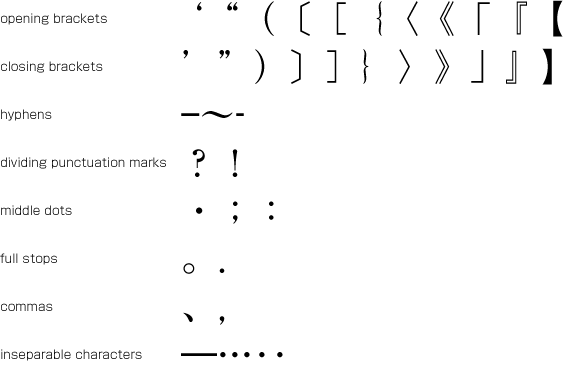
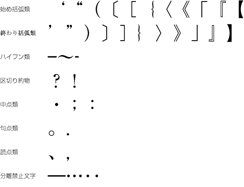 Examples of punctuation marks.日本語組版に使用する約物類の例
Kanji, Hiragana and Katakana漢字等，平仮名，片仮名
Ideographic (cl-19), hiragana (cl-15) and katakana (cl-16) characters are the same size, and have square character frames of equal dimensions. Aligned with the vertical and horizontal center of the character frame, there is a smaller box called the letter face, which contains the actual symbol. Character size is measured by the size of the character frame (see [[[#fig1_6]]]). "Character advance" is a term used to describe the advance width of the character frame of a character. By definition, it is equal to the "width" of a character in horizontal writing mode, whereas it is the height of a character in vertical writing mode (see [[[#fig1_6]]]).
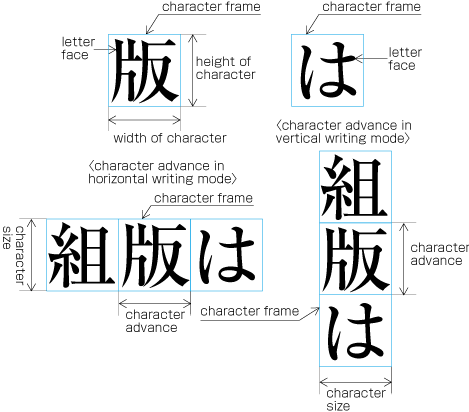
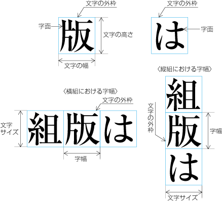
The size of kanji and hiragana, and the character frames.漢字と仮名のサイズの示し方
In vertical writing mode, the letter face of small kana (cl-11) characters (ぁぃぅァィゥ etc.) is placed at the vertical center and to the right of the horizontal center of the character frame; in horizontal writing mode, it is placed at the horizontal center and below the vertical center (see [[[#fig1_7]]]). Also there are punctuation marks with letter faces that are not placed at the vertical and horizontal center of the character frame.
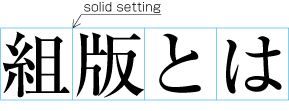
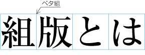
Example of solid setting in horizontal writing mode.ベタ組の例（横組の場合）
In
the letterpress printing era ideographic (cl-19), hiragana (cl-15) and katakana (cl-16) characters
were designed so that they were easy to read in solid setting, regardless of text direction. However, unlike the letterpress printing era, when several sizes of the original pattern of a letter were required to create matrices, in today's digital era the same original pattern is used for any size simply by enlargement or reduction. Because of this, it might be necessary to adjust the inter-character space when composing lines at large character sizes. When composing lines at small character sizes, hinting data is used to ensure that the width of the strokes that make up a character look correct.
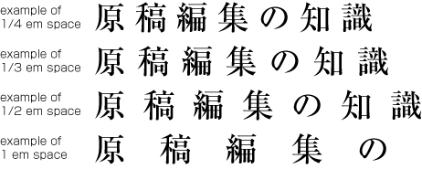
Examples of fixed inter-character spacing in horizontal writing mode.アキ組の例（横組の場合）
Fixed inter-character spacing is used in books for the following cases: (Fixed inter-character spacing, including also even tsumegumi, is defined in JIS X 4051, sec. 4.18.1 b.)
書籍におけるアキ組は，次のような場合に利用されている．（アキ組については，均等詰めを含めてJIS X 4051の4.18.1のb）に規定されている．）
To achieve a balance between running heads with few and with many characters. Fixed inter-character spacing is used for the running heads with
few characters. Examples of fixed inter-character spacing for running heads are given in JIS X 4051, annex 5.
字数の少ない柱と字数の多い柱とのバランスをとるために，字数の少ない柱をアキ組にする．柱のアキ組の例は，JIS X 4051の附属書5に掲げられている．
To achieve a balance between headings
with few and with many characters. Fixed inter-character spacing is used for the headings with few characters. Examples of fixed inter-character spacing for headings are given in JIS X 4051, annex 6.
字数の少ない見出しと字数の多い見出しとのバランスをとるために，字数の少ない見出しをアキ組にする．見出しのアキ組の例は，JIS X 4051の附属書6に掲げられている．
For captions of illustrations and tables, which only have a few characters. Fixed inter-character spacing is used to balance with the size of the illustration or table.
In some cases, fixed inter-character spacing is used for Chinese and Japanese poetry where one line has only a few characters.
1行の字数が少ない漢詩や日本語の詩歌でアキ組にする場合がある．
Even inter-character spacing: Text set with equal inter-character spacing between characters on a given line, so that each line is aligned to the same line head and line end (see [[[#fig1_10]]]).
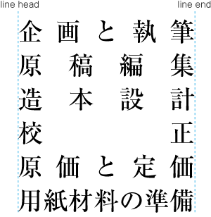
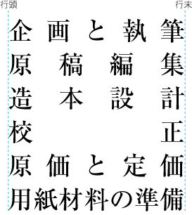
Example of even inter-character space setting in horizontal writing mode.均等割りの例（横組の場合）
Even inter-character space setting is used in books for unifying the length of table headings with Japanese text (see [[[#fig_ad1_4]]]). There are also examples (e.g. lists of names) in which parts of a person names receive inter-character spacing.
(Even inter-character spacing, including processing of jidori, is defined in JIS X 4051, sec. 4.18.1.)
書籍における均等割りは，表の和文の項目見出しの長さをそろえる場合に利用されている（[[[#fig_ad1_4]]]）．また，名簿などで人名の部分で均等割りにする例がある．（均等割りについては，字取り処理を含めてJIS X 4051の4.18.1に規定されている．）
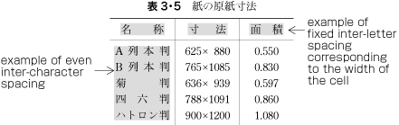
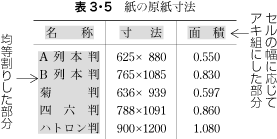
Example of a table with inter-character spacing.表の均等割りの例
Tsumegumi (kerning / tracking): Text is set with negative inter-character space
by arranging characters so that a portion of two character frames
overlap each other. This is divided further into two types, depending on the methods used for inter-character space reduction. One method involves reducing by the same amount of inter-character space (even tsumegumi or tracking, see [[[#fig1_11]]]) and the other involves determining the amount of space to reduce based on the distance between the two letter faces of adjacent characters (face tsumegumi or letter face kerning, see [[[#fig1_12]]]).
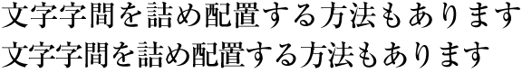
Example of even tsumegumi in horizontal writing mode. (The 1st line is the same text with solid setting, for comparison.)均等詰めの例（横組の場合，上側はベタ組，下側が均等詰めの例）
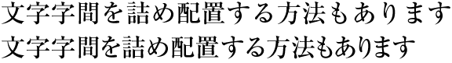
Example of face tsumegumi in horizontal writing mode. (The 1st line is the same text with solid setting, for comparison.)字面詰めの例（横組の場合，上側はベタ組，下側が字面詰めの例）
In the main text of books, the most reader-friendly approach is to use solid setting. However, if the character size is larger, the distance between characters may become unbalanced, and tsumegumi will be applied. For example, there are books where tsumegumi
is used with headings
set in large character sizes. These methods are rarely used in books, since ease of reading is very important, but in magazines or advertisements there are many more examples of tsumegumi.
Magazines tend to use type to differentiate themselves from others, and so devices like this are sometimes used for that purpose.
Generally, books use only one template for page format, whereas magazines often use several templates.
基本となる組体裁は，書籍では1パターンであることが多いが，雑誌では一般に数パターンを作成する．
Although in books, as will be mentioned in c of [[[#kihonhanmen_and_examples_of_real_page_format]]], there tends to be one template for the page format, the basic pattern is typically adapted. For example, the table of contents may contain small modifications. Furthermore, there are many examples of indexes with a different page format than the basic page format, and vertically set books often have indexes in horizontal writing mode and sometimes multiple columns.
This still holds true where the goal is to make the size of the hanmen for indexes close to the size of hanmen in the basic page format.
Magazines gather articles of different kinds. Often the page format will differ depending on the content of the article. For example, one part may have 9 point character size and 3 columns, and another part 8 point character size and 4 columns.
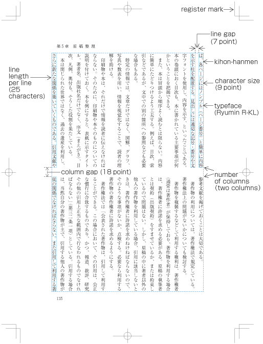
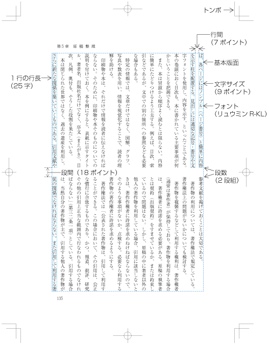
Elements of kihon-hanmen. (Example in vertical writing mode.)基本版面の設計要素（縦組の例）
To understand the characteristics of Japanese composition,
it is important to understand how the various elements of the kihon-hanmen are applied to a real page. The details will be explained in [[[#page_wise_arrangement_of_kihonhanmen_elements]]].
The normative definition of kihon-hanmen is provided in JIS X 4051, sec. 7.5.
基本版面の指定等については，JIS X 4051の7.5に規定されている．
Format examples (including running heads and page numbers) and composition examples for kihon-hanmen in different trim sizes are
available in JIS X 4051, annexes 3 and 4.
仕上りサイズ別の基本版面の設計例（柱及びノンブルの設計例も含く）及び組版例が，JIS X 4051の附属書3及び附属書4に掲げられているので参考になる．
Depending on the application, character sizes can be specified in multiple ways. For books, character size is mainly specified using points or Q/q. Points are used for letterpress printing. In JIS Z 8305 (size units of printing type), one point is determined to be 0.3514mm. This is the size that is usually used. However, some commonly used applications adopt one point as 1/72 inch, ca. 0.3528mm. Q was used for photo typesetting. One Q is 0.25mm. It is very difficult to unify the unit sizes for character size specifications, because actual users prefer the unit to which they are accustomed. In some companies, multiple types of unit are used together.
処理系にもよるが，文字サイズの指示には複数の単位が使用できる．書籍において，文字サイズの指示に使用されている単位としては，主にポイントと級（Q，q）がある．ポイントは，活字組版で使用されていた単位で，JIS Z 8305（活字の基準寸法）では，1ポイントは0.3514mmと規定しており，このサイズが現在でも使用されている．ただし，1ポイントを1/72インチ（約0.3528mm）とすることができる処理系も多く，このサイズを採用しているものもある．級は写真植字で使用されていた単位で，1Qは0.25mmである．文字サイズの指示では，慣れているものが使いやすいということもあり，どれか1つに整理するのは困難であり，同じ出版社内でも複数の単位が使用されている例がある．
Kihon-hanmen and Examples of Real Page Format基本版面と実際のページの設計例
Below are several examples of how the basic page format is created, and how then various elements are placed on a real text page.
(This and other aspects of how the various elements of the kihon-hanmen are arranged on each page are explained in [[[#page_wise_arrangement_of_kihonhanmen_elements]]].)
To set a heading, first establish a rectangular space based on a number of lines in the kihon-hanmen. For example, a '3 line space' means (3 * the size of the character frame used for the kihon-hanmen + 2 * the line gap in the kihon-hanmen). (Details of this processing are defined in JIS X 4051, sec. 8.3.3.d). The heading text is usually set in the centre of the rectangular space in the block direction, and indented from the line head. The size of the indent is usually specified as a number of characters in the kihon-hanmen. For example, a '4 character indent' means (4 * the size of the character frames used for establishing the kihon-hanmen). (See the example at [[[#fig_ad1_1]]].)
見出しを配置する領域の行送り方向のサイズは，基本版面で設定した行の位置を元に，それの何行分を用いるかという方法で設計する（この処理方法については，JIS X 4051の8.3.3のd）に規定されている）．見出しの字詰め方向の字下げは，基本版面で設定した文字位置を基準に，その何字分を下げるかという方法で一般に設計する．[[[#fig_ad1_1]]]の例は，見出しを基本版面で設定した行の位置の3行分の中央に配置し，基本版面で設定した文字サイズの4字分下がった位置に配置している．
Layout example of a heading based on the line positions established by the kihon-hanmen.基本版面で設計した行の位置を基準とした見出しの設計例
Details of the different types of heading, creation of headings, methods for placing headings, etc. is explained in [[[#handling_of_headings]]].
In horizontal writing mode with two columns, for example, the width of illustrations should, if at all possible, be either the width of one kihon-hanmen column
or the width of the kihon-hanmen (see [[[#fig_ad1_2]]]). The illustrations are usually set at the head or the foot of the page (see [[[#fig_ad1_2]]]).
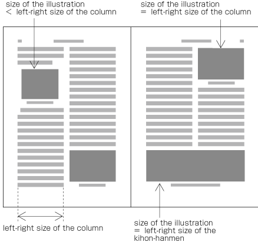
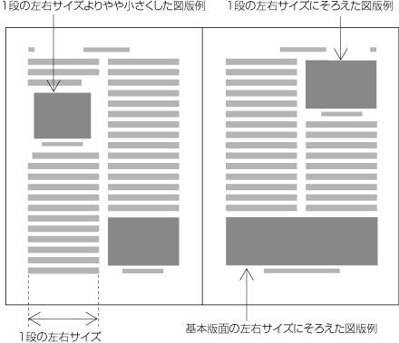
Example of illustrations in two columns, horizontal writing mode.横組の2段組における図版の設計例
Also, in vertical writing mode, for example with three columns, the height of illustrations should, if at all possible, be either the height of one kihon-hanmen column or the height of the kihon-hanmen (see [[[#fig_ad1_19]]]). The illustrations are usually set at the right side or left side of the kihon-hanmen (see [[[#fig_ad1_19]]]).
The hanmen size for the table of contents of books is based on the size of the kihon-hanmen. There are many examples of tables of contents in vertical writing mode where the
left-to-right size
is identical to that of the kihon-hanmen, but the
top-to-bottom size
is a little bit smaller (see [[[#fig_ad1_3]]]).
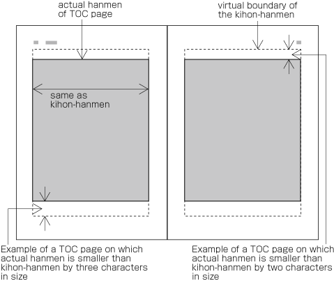
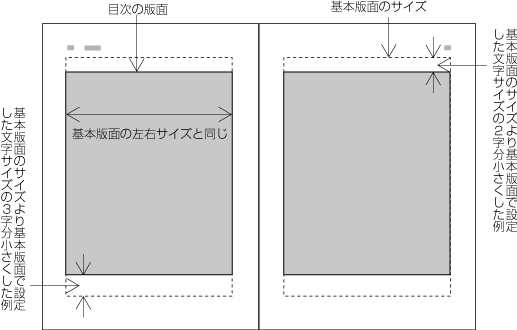
Example of the design of the table of contents (TOC) in vertical writing mode.縦組の目次版面の設計例
There are cases when a different hanmen than the kihon-hanmen is used for positioning of running heads and page numbers. This
will be discussed in [[[#principles_of_arrangement_of_running_heads_and_page_numbers]]] (see [[[#fig_ad1_17]]]).
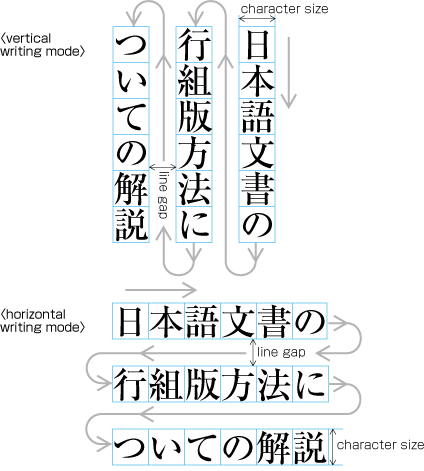
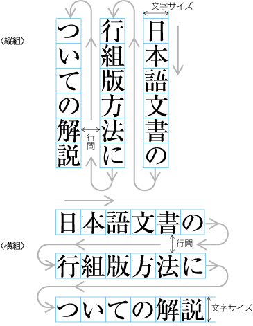
Vertical writing mode and horizontal writing mode. (The arrows show the reading direction.)縦組と横組（矢印は文字を読んでいく順序を示す）
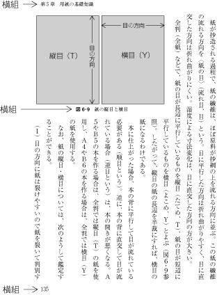
Example of horizontal writing mode in parts of vertically set books.縦組の本における横組の混用例
Major Differences between Vertical Writing Mode and Horizontal Writing Mode縦組と横組の主な相違点
The following are major differences between vertical writing mode and horizontal writing mode.
縦組と横組の主な相違点としては，次がある．
Arrangement of characters, lines, columns and pages; direction of page progression.
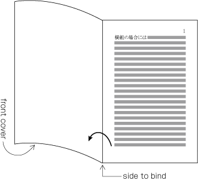
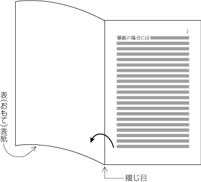
Progression of pages for a horizontally set book.横組における本の開いていく方向
Orientation of Latin alphanumeric characters in a line.
文中に挿入される英数字の向きは，次のようになる．
There are three ways to arrange Latin alphanumerics in vertical writing mode:
縦組の場合は，次の3つの配置方法がある．
One by one with the same normal orientation as that of Japanese characters. This is usually applied to one-letter alphanumerics or capitalized abbreviations (see [[[#fig1_19]]]).
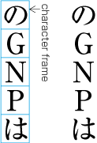
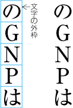
Arrangement of alphanumerics in vertical writing mode - normal orientation.縦組における英数字の配置例1
Rotated 90 degrees clockwise. This is usually applied to English words or sentences (see [[[#fig1_20]]]).
文字を時計回りに90度回転し，配置する．主に英字の単語，文など（[[[#fig1_20]]]）．
Arrangement of alphanumerics in vertical writing mode - rotated 90 degrees clockwise.縦組における英数字の配置例2
Set horizontally without changing orientation (called tate-chu-yoko, which means horizontal-in-vertical composition) (see [[[#fig1_21]]]). This is usually applied to two-digit numbers (see JIS X 4051, sec. 4.8 for the definition).
正常な向きのまま，横組にする（縦中横，[[[#fig1_21]]]）．主に2桁の数字の場合などで利用されている（縦中横の処理は，JIS X 4051の4.8に規定されている）．
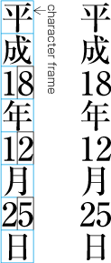
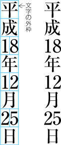
Arrangement of alphanumerics in vertical writing mode - tate-chu-yoko.縦組における英数字の配置例3（縦中横）
In horizontal writing mode there is only one way of arranging alphanumerics, i.e. normal orientation.
横組の場合は，正常な向きで配置する．
Arrangement of tables and/or illustrations rotated 90 degrees clockwise or counter-clockwise for reasons of size. (This processing is defined in JIS X 4051, sec. 7.3.).
表，図版などを，サイズの関係から時計回り又は反時計回りに90度回転して配置する場合，次のようにする（この処理は，JIS X 4051の7.3に規定されている）．
In vertical writing mode, align the top of tables/illustrations to the right of the page (see [[[#fig1_22]]]).
縦組の場合は，表，図版などの上側を右側にする（[[[#fig1_22]]]）．
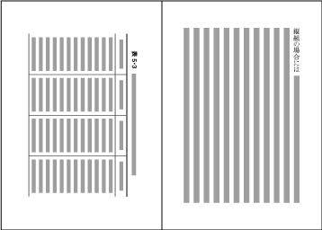
Example of arrangement of a table rotated 90 degrees clockwise in vertical writing mode.縦組において表を時計回りに90度回転して配置した例
In horizontal writing mode, align the top of tables/illustrations to the left of the page (see [[[#fig1_23]]]).
横組の場合は，表，図版などの上側を左側にする（[[[#fig1_23]]]）．
Example of arrangement of a table rotated 90 degrees counterclockwise in horizontal writing mode.横組において表を反時計回りに90度回転して配置した例
Arrangement of an incomplete number of lines on a multi-column format page due to new recto, page break or other reasons. (The processing of new recto and page break is defined in JIS X 4051, sec. 8.1.1.).
改丁・改ページなどの直前ページにおいて，段組の行がページの途中で終わる場合は，次のようにする（改丁・改ページの処理は，JIS X 4051の8.1.1に規定されている）．
In vertical writing mode, just finish the line where it ends ("nariyuki"). The number of lines in each column is not uniform (see [[[#fig1_24]]]).
縦組の場合は，“なりゆき”とし，各段の左右行数は不ぞろいになる（[[[#fig1_24]]]）．
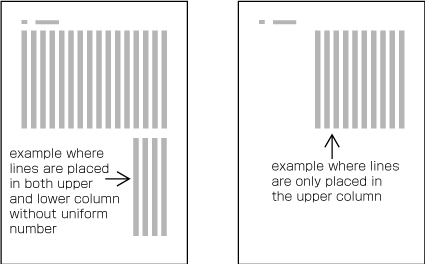
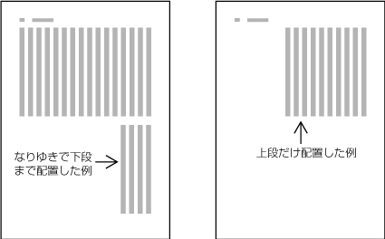
How to process incomplete number of lines on a multi-column format page (vertically set book).縦組の段組における改丁・改ページの直前ページの処理例
In horizontal writing mode, re-arrange columns so that each column has the same number of lines. In case the number
of lines is not divisible by the number of columns, add the smallest number to make it divisible and re-arrange columns using
the quotient as the number of lines so that only the last column shall have the incomplete number of lines (see [[[#fig1_25]]]).
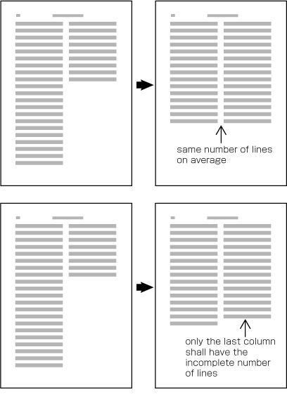
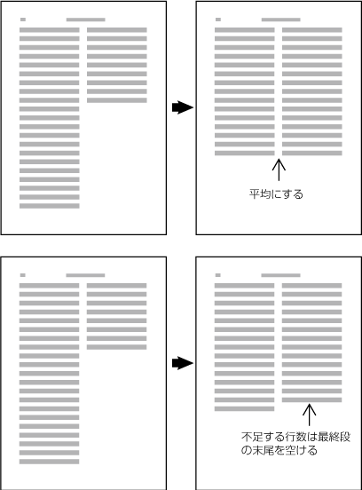
How to process incomplete number of lines on a multi-column format page (horizontally set book).横組の段組における改丁・改ページの直前ページの処理例
Specifying the Kihon-hanmen基本版面の設計
Procedure for Defining the Kihon-hanmen基本版面の設計手順
In Japanese composition, first the size of the kihon-hanmen is defined, using the square character frames of characters in solid setting. Taking this as a base, the position of the kihon-hanmen with regards to the trim size is then specified. The following are procedures for determining the size and position of the kihon-hanmen (see [[[#fig1_26_1]]]).
For a document with multiple columns per page, specify the character size, the line length (the number of characters per line), the number of lines per
column, the line-gap, and the number of columns and the column gap.
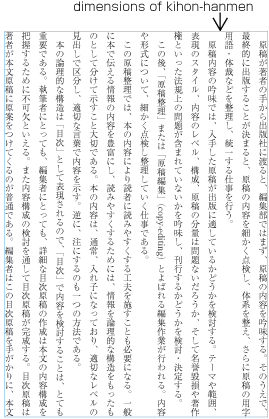
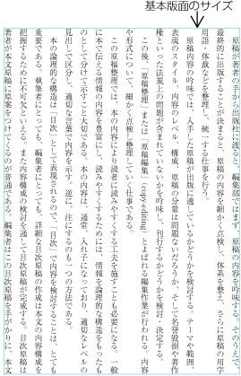
Procedures to determine the size and position of the kihon-hanmen, step 1.基本版面の設定手順の1
Determining the position of the kihon-hanmen relative to the trim size.
仕上りサイズに対する基本版面の配置位置を決める．
There are various alternative methods for specifying the position of the kihon-hanmen relative to the trim size:
基本版面の配置位置の指定方法には，次がある．
Position vertically
by centering the kihon-hanmen. Position horizontally by centering the kihon-hanmen.
天地位置：中央，左右位置：中央
Position
vertically
by specifying the space size at the head (for horizontal writing mode) or the space at the foot (for vertical writing mode). Position horizontally by centering the kihon-hanmen.
Position vertically
by specifying the space at the
head (for horizontal writing mode) or the space at the
foot (for vertical writing mode). Position horizontally by specifying the space size of the gutter.
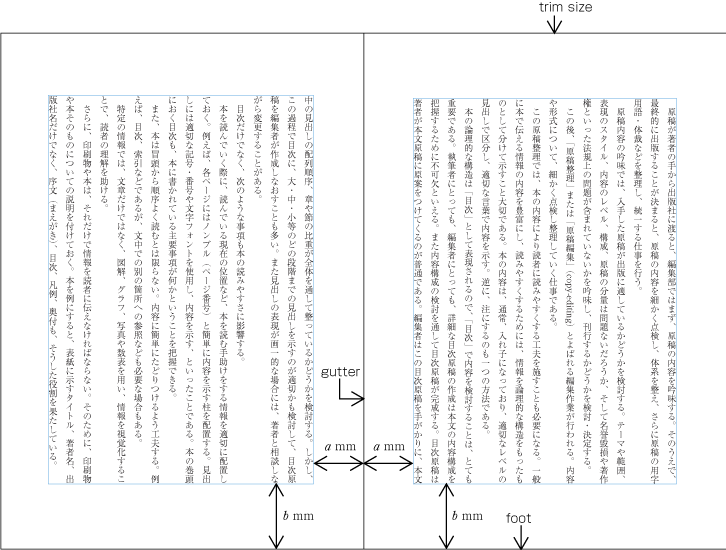
Procedures to determine the size and position of the kihon-hanmen, step 2.基本版面の設定手順の2
Considerations in Designing the Kihon-hanmen基本版面の設計の注意点
The following are considerations to take into account when designing the kihon-hanmen. (This topic is not about processing, but rather an explanation of design preferences. The
definition of kihon-hanmen is given in JIS X 4051, sec. 7.4.1.)
基本版面は，次のような事項を考慮し設計する（以下の説明は処理内容というよりは，どのように設計するかという問題についての解説である．なお，基本版面の指定については，JIS X 4051の7.4.1に規定がある）．
Trim size and margins. It would be best if the shape of the kihon-hanmen could be made similar to
that of
the trim size.
Character size. Generally 9 point (about 3.2mm) type is common. Except for specialized publications such as dictionaries, the minimum size of type is 8 point (about 2.8mm).
Line length should be multiples of the character size (see [[[#fig1_27]]]).
1行の行長は，文字サイズの整数倍に設定する（[[[#fig1_27]]]）．
Line length should be multiples of the character size.1行の行長は文字サイズの整数倍
Use the same amount of line gap
throughout the book, except for special cases. The size of the kihon-hanmen in the block direction
is specified using the number of lines and the size of the
line-gap.
Inserting ruby or other items between lines.行間にルビなどを配置した例Example of inter-line processing with warichu between lines.割注が入った場合の行間の処理例Specifying kihon-hanmen with line feed.基本版面を行送りで指定する方法
The size of the kihon-hanmen in this case can be calculated by following method:
以上のように設定した基本版面のサイズは，次のように計算できる．
Vertical writing mode with one column
縦組の1段の場合
Width of kihon-hanmen = character size × number of lines per page + line gap × (number of lines per page − 1)
左右サイズ＝使用する文字サイズ×1ページの行数＋行間×（1ページの行数－1）
298 point = 9 point × 18 lines + 8 point × (18 lines − 1)
298ポイント＝9ポイント×18行＋8ポイント×（18行－1）
Height of kihon-hanmen = character size × number of characters per line
天地サイズ＝使用する文字サイズ×1行の行長
468 point = 9 point × 52 characters
468ポイント＝9ポイント×52字
Vertical writing mode with multi columns
縦組の多段の場合
Width of kihon-hanmen = character size × number of lines per column + line gap × (number of lines per column − 1)
左右サイズ＝使用する文字サイズ×1段の行数＋行間×（1段の行数－1）
309 point = 9 point × 21 lines + 6 point × (21 lines − 1)
309ポイント＝9ポイント×21行＋6ポイント×（21行－1）
Height of kihon-hanmen = character size × number of characters per line × number of columns + column gap × (number of columns − 1)
天地サイズ＝使用する文字サイズ×1行の行長×段数＋段間×（段数－1）
468 point = 9 point × 25 characters × 2 columns + 18 point × (2 columns − 1)
468ポイント＝9ポイント×25字×2段＋18ポイント×（2段－1）
Horizontal writing mode with one column
横組の1段の場合
Width of kihon-hanmen = character size × number of characters per line
左右サイズ＝使用する文字サイズ×1行の行長
315 point = 9 point × 35 characters
315ポイント＝9ポイント×35字
Height of kihon-hanmen = character size × number of lines per page + line gap × (number of lines per page − 1)
天地サイズ＝使用する文字サイズ×1ページの行数＋行間×（1ページの行数－1）
468 point = 9 point × 28 lines + 8 point × (28 lines − 1)
468ポイント＝9ポイント×28行＋8ポイント×（28行－1）
Horizontal writing mode with multi columns
横組の多段の場合
Width of kihon-hanmen = character size × number of characters per line × number of columns + column gap × (number of columns − 1)
左右サイズ＝使用する文字サイズ×1行の行長×段数＋段間×（段数－1）
320 point = 8 point × 19 characters × 2 columns + 16 point × (2 columns − 1)
320ポイント＝8ポイント×19字×2段＋16ポイント×（2段－1）
Height of kihon-hanmen = character size × number of lines per column + line gap × (number of lines per column − 1)
天地サイズ＝使用する文字サイズ×1段の行数＋行間×（1段の行数－1）
476 point = 8 point × 40 lines + 4 point × (40 lines − 1)
476ポイント＝8ポイント×40行＋4ポイント×（40行－1）
Page wise Arrangement of Kihon-hanmen Elements基本版面の設計要素の各ページに対する適用
Examples of Items Jutting Out of the Kihon-hanmen基本版面からはみ出す例
The various elements of a page should remain inside the
boundaries of the kihon-hanmen.
However, there are exceptions such as the following:
Ruby or emphasis marks (bousen, emphasis dots, etc.) at the before edge of the hanmen, are placed outside the hanmen (see [[[#fig_ad1_6]]]). The same applies in cases where ruby, underline, etc. appear beyond the after edge of the hanmen. Like the handling of exceptions mentioned below, the purpose here is to preserve the line positions established for the kihon-hanmen. This technique can also be used for reference marks associated with lines of text.
Example of ruby annotation placed outside of the kihon-hanmen.版面の外側に配置したルビの例
When there are inline elements whose dimensions extend beyond the before edge and the after edge of a line of characters as determined by the kihon-hanmen, and when those elements appear in the first or last line of the hanmen, the parts that jut out beyond the regular line of characters also jut out of the hanmen area.
For example, this is the case when the width of a sequence of characters which are set to tate-chu-yoko is wider than the characters set for the kihon-hanmen. In addition, warichu (inline cutting note) or subscript and superscript (ornament characters) are handled in the same way. (The processing rules for this item and the previous item are defined in JIS X 4051, sec. 12.1.1.)
版面の先頭又は末尾に配置する行に基本版面で設定した行送り方向の行の幅（基本版面で設定した文字サイズ）よりはみ出して配置する要素がある場合は，基本版面で設定した行送り方向の行の幅よりはみ出して配置する部分を，版面の領域の外側にはみ出して配置する（前項とこの項の処理は，JIS X 4051の12.1.1に規定されている）．例えば，縦中横の設定を行った文字列の横幅が基本版面で設定した文字サイズより大きくなる場合などである．この他に，割注，上付き・下付きの添え字なども同様な扱いとする．
ぶら下げ組とよばれる処理をした場合は，行頭禁則の処理を必要とする句点類（cl-06）及び読点類（cl-07）に限り，行末の版面の領域の外側に接して配置する（[[[#fig_ad1_7]]]）．なお，ぶら下げ組についてはJIS X 4051に規定されていないが，同規格の解説8.1）c）に説明がある．
Example of IDEOGRAPHIC COMMA and IDEOGRAPHIC FULL STOP placed below the kihon-hanmen.ぶら下げ組により版面の外側に配置した句点と読点の例
Illustrations and tables are normally placed inside the area defined by the kihon-hanmen. However, there may also be cases in which a particular illustration or table juts outside the kihon-hanmen.
For the sake of visual effect, the illustration may bleed into the complete paper area. This is not often used in books, but is often used in magazines (see [[[#fig_ad1_8]]]).
Line Positioning based on the Kihon-hanmen Design基本版面で設定した行位置の適用
In principle, pagewise positioning of lines relies on the line positions established for the kihon-hanmen. This holds for lines with ruby or emphasis dots as shown in [[[#fig_ad1_5]]]. Even when lines contain characters that are smaller than the character size used for the kihon-hanmen (as shown in [[[#fig_ad1_9]]]), the line positions used for the kihon-hanmen continue to be used as the basic guide lines. This is so that following lines with normal-sized characters still naturally fall into the line positions established for the kihon-hanmen.
Positioning of lines with a smaller size of text.行中に小さい文字が入った場合の行の位置
The following are exceptions when handling line position:
ただし，行の配置位置については，次のような例外がある．
When inserting more than one illustration or table item in horizontal writing mode, assuming that there is no text to the left or right of the items, the items may either slip off the grid established for the kihon-hanmen (see [[[#fig_ad1_10]]]), or stick to the grid (see [[[#fig_ad1_11]]]). The former approach is used,
whenever possible,
to achieve an equal amount of space before and after illustrations or tables. (This method is often used in books.) (This processing method is defined in JIS X 4051, sec. 10.3.2., d.)
横組で，図版や表の左右にテキストを配置しない方法とした場合，1ページに2つ以上のや表が挿入されたときは，基本版面で設定した行の位置からずれることがある（[[[#fig_ad1_10]]]）．ただし，基本版面で設定した行の位置に配置する方法もある（[[[#fig_ad1_11]]]）．前者の方法は，図版や表の前後の空き量をできるだけ均一にするという考え方による（この方法を採用している書籍が多い）．この処理方法については，JIS X 4051の10.3.2のd）に規定がある．
Positioning of lines with multiple illustrations - 1.Positioning of lines with multiple illustrations - 2.
The size of characters in endnotes inserted between paragraphs or those in footnotes at the bottom of the page (in horizontal writing mode) is smaller than the character size established for the kihon-hanmen. As a result, the
character size and line gap are
also smaller, and so the line positions are no longer identical to those established for the kihon-hanmen. As an example, [[[#fig_ad1_12]]] shows the position of an endnote between paragraphs in vertical writing mode. (The processing of endnotes is defined in JIS X 4051, sec. 9.3, and the processing of footnotes in sec. 9.4.)
段落間に挿入される後注及び横組でページの下端に挿入される脚注は，基本版面で設定した文字サイズよりは小さくする．これに伴い行間も狭くするので，基本版面で設定した行の位置とはそろわない．例えば，縦組において，段落の間に入る後注の配置位置の例を[[[#fig_ad1_12]]]に示す．なお，後注の組版処理については，JIS X 4051の9.3，脚注は9.4に規定されている．
Positioning of an endnote in vertical writing mode.縦組の後注の配置例
As mentioned above, the position of a heading may not be identical to the lines established for the kihon-hanmen. Nevertheless,
in the block direction, headings base their alignment on the line positions established for the kihon-hanmen (see [[[#fig_ad1_1]]]).
Character Positioning based on Kihon-hanmen Design基本版面で設定した文字位置の適用
In principle, the characters in each line follow the solid setting positions of characters established for the kihon-hanmen. However, as already shown in some of the previous figures, there are examples where this is not the case. Such cases are rather common, and here we will show some prototypical examples (details will be given in [[[#line-composition]]]).
When 9pt is the character size used to establish the kihon-hanmen, characters smaller than 9pt may be inserted in part of a line (see [[[#fig_ad1_9]]]). In such cases, the parts set at 9pt and any parts set at a smaller, say, 8pt size both use solid setting, with character frames at the respective sizes for each part.
In cases where proportional Latin letters are rotated 90 degrees clockwise (see [[[#fig1_20]]]), the proportional letters are placed according to their proportional widths. Hence, they do not fit to the character positions established for the kihon-hanmen (see [[[#fig_ad1_13]]]). Japanese letters following the Latin letters consequently slip away from the default positions as well.
Positioning of a mixture of Western and Japanese letters in a line.行中に欧字を配置した例
There are several methods for positioning opening brackets (cl-01) at the
beginning of a line
(details are explained in [[[#positioning_of_opening_brackets_at_line_head]]]). Because an opening bracket is not a full-width character, in cases where the indentation of the first line of a paragraph is a one em space, or if the tentsuki position is used for the bracket (that is, there is no space at the line head), the character following the bracket will be in a position which does not fit to the character positions established for the kihon-hanmen (see [[[#fig_ad1_14]]]). However, the adaptations made during the alignment of line ends will ensure that the character at the end of a line is at a position that fits with the kihon-hanmen.
Example of positioning of characters off the kihon-hanmen position due to opening brackets at the line head.行頭の始め括弧類の配置方法により文字位置がずれた例
[[[#line-composition"]]] explains that full stops (cl-06), commas (cl-07), opening brackets (cl-01) and closing brackets (cl-02) are half-width. If these punctuation marks and brackets are adjacent to ideographic (cl-19), katakana (cl-16) or hiragana (cl-15) characters, in principle there should be a half em space before or after the punctuation mark or brackets, so that
these occupy in effect a full-width size. However, if they are adjacent to other punctuation marks or brackets,
the half em space is not used. This is done to improve the visual appearance. In such cases, the character positions are different than the positions established when defining the kihon-hanmen
(see [[[#fig_ad1_15]]]).
Example of lines with consecutive punctuation marks.句点類と始め括弧類が連続，及び終わり括弧類が連続する例
[[[#line-composition]]] explains the principle that closing brackets (cl-02), full stops (cl-06) and commas (cl-07)should not be placed at the line head. If
by simple sequential placement these characters would
appear at the line head or at the line end, some kind of adjustment becomes necessary. A similar adjustment is required for characters that should not be placed at the end of a line, such as opening brackets (cl-01). As a result of such adjustment, it may happen that
other characters are placed at positions which are different from those established for the kihon-hanmen.
Example of line adjustment to avoid those characters which shall not start and end a line.行頭禁則又は行末禁則を避ける調整をした例
Running Heads and Page Numbers柱とノンブル
Positioning of Running Heads and Page Numbers柱及びノンブルの位置
Typical positions of running heads and page numbers for vertically set books with double running heads (see [[[#ways_of_arranging_running_heads_and_page_numbers]]]) are as shown in [[[#fig1_28]]].
Typical positioning of running heads and page numbers for vertically set books with double running heads.縦組の書籍における両柱方式による柱及びノンブルの代表的な配置位置例
Typical positions of running heads and page numbers for horizontally set books with double running heads (see [[[#ways_of_arranging_running_heads_and_page_numbers]]]) are as shown in [[[#fig1_29]]].
Typical positioning of running heads and page numbers for horizontally set books with double running heads.横組の書籍における両柱方式による柱及びノンブルの代表的な配置位置例
In principle, positions of running heads and page numbers should be specified relative to the kihon-hanmen, not
with absolute coordinates in the trim size. (Positioning of running heads is defined in JIS X 4051, sec. 7.6.4. Positioning of page numbers is defined in JIS X 4051, sec.
7.5.4.)
柱及びノンブルの位置は，一般に仕上りサイズに対する絶対的な位置関係ではなく，基本版面との相対的な位置関係で設定する（柱の配置については，JIS X 4051の7.6.4に，ノンブルの配置については，JIS X 4051の7.5.4に規定がある）．
Positioning a horizontal running head above the top left corner (to head and fore-edge) of the kihon-hanmen in a typical vertically set book (see [[[#fig1_30]]]).
9 points from the left edge of the kihon-hanmen (horizontal space)
基本版面との左右方向の空き量（入りともいう）は9ポイント（9ポアキ）
Positioning of a running head (vertical writing mode).柱の配置指定例（縦組）
The following recommendations should be taken into account when positioning running heads and page numbers with reference to the kihon-hanmen.
柱及びノンブルの基本版面との位置関係では，次のような点に注意する．
When positioning horizontal running heads and page numbers with reference to the kihon-hanmen in vertically set books, the amount
of vertical space between the edge of the kihon-hanmen and the running head is a one em space as established for the kihon-hanmen. If the kihon-hanmen of the book is horizontally set, take more vertical
space than the character size in the kihon-hanmen.
Regardless of the direction of text in the kihon-hanmen of a book, horizontal running heads and page numbers on the left page
should be aligned either at the left edge of the kihon-hanmen or one em space to the right of the
left edge. On the right page, the tail of the running heads or page numbers should be aligned either at the right edge of the kihon-hanmen
or one full-width space to left of the right edge.
Regardless of the writing direction of the text in a book, when arranging running heads and page numbers together on the same horizontal line (such as positioning the running head immediately adjacent to the page number at the left side on left pages), the space between the running head and the page number
should either be double or one and a half times the character size (embox size) of the running head. On left-hand pages, the page number should be set on the left side, and the running head should be set on the right side. On right-hand pages, the page number should be set on the right side and the running head should be set on the left side. The exact positions of the page numbers are given in the instructions above (see b).
When positioning running heads and page numbers vertically to the fore-edge of the kihon-hanmen in a vertically set book (see spread (e) in [[[#fig1_28]]], for example), the minimum horizontal distance from the kihon-hanmen should be the same as that of the line gap of the kihon-hanmen.
The top of the running head should be positioned approximately four kihon-hanmen characters below the head, and the bottom of the page numbers should be positioned approximately five kihon-hanmen characters
above the foot.
Principles of Arrangement of Running Heads and Page Numbers柱及びノンブルの配置の原則
Positioning of all running heads and page numbers in the same book should be consistent.
柱及びノンブルは，1冊の本の中では，同じ位置に配置する．
Positioning of running heads and page numbers on TOC pages for which the hanmen is smaller in size than the kihon-hanmen.基本版面より小さくなった目次の版面と柱及びノンブルとの位置関係Positioning of running heads and page numbers on index pages for which hanmen is smaller in size than the kihon-hanmen.基本版面より小さくなった索引の版面と柱との位置関係
Because the start of a page will be on the recto side, the right-hand page of a spread in a vertically set book is always an even page and the left-hand page is always an odd page (see [[[#fig1_32]]]). Likewise, the left-hand page of a spread in a horizontally set book is always an even page and the right-hand page is always
an odd page (see [[[#fig1_33]]]).
Page numbers on a spread in a vertically set book.縦組の書籍における見開きのノンブルPage numbers on a spread in a horizontally set book.横組の書籍における見開きのノンブル
Ways of Arranging Running Heads and Page Numbers柱及びノンブルの配置方式
There are two ways to arrange running heads. One is the single running head method and the other is the double running head method. (Arrangement of running heads is defined in JIS X 4051, sec. 7.6.2. Page Numbers are defined in sec. 7.5.2.).
柱には，両柱方式（[[[#fig1_34]]]）と片柱方式（[[[#fig1_35]]]）とがある（柱の掲げ方についてはJIS X 4051の7.6.2に，ノンブルの掲げ方については7.5.2に規定がある）．
Double running head method.両柱方式の例Single running head method.片柱方式の例
In the double running head method, a higher-level title, such as that of the chapter or book, is used for the running heads on the even pages, and a lower-level title, such as that for a section, on the odd pages. Where there are no differing levels of titles, such as on the page containing the table of contents, the same running head is used on both even and odd pages.
In the single running head method, one of the headings between the top and third levels is used.
片柱方式では，いずれかのレベルの見出しを掲げる．
In principle, the contents of running heads will be the same as those of headings with the following differences:
柱は，原則として見出しと同じ内容を掲げるが，次のような例外がある．
Numbers and words in Latin alphanumeric characters in vertically set headings in vertically set books should be changed to horizontal notation for horizontally set running heads (see [[[#major_differences_between_vertical_writing_mode_and_horizontal_writing_mode]]]).
If headings are too long, they should be made shorter by paraphrasing them in fewer characters. Running heads with too many characters
will not look good.
For certain publications, such as a collection of monographs, the names of authors may be added in parentheses at the end of the running head.
論文集などでは，著者名を見出しの後ろに括弧類などでくくって示す．
In principle, the text direction of running heads and page numbers should be the same as that of the kihon-hanmen. For vertically set books, however, it is more common to set running heads and page numbers horizontally.
In principle, for the single running head method running heads are printed on all odd pages, and for the double running head method on all even and odd pages. However, for the sake of appearance, running heads may be omitted as follows:
Divisional title and simplified divisional title
pages.
中扉及び半扉
Pages in horizontally set books with a page number placed in the margin at the top of the page, and with a heading at the beginning of a new recto or new page. (In this case, it is also possible to move the page numbers to the center of the margin at the foot of the page.)
There are two types of page numbering. "Continuous pagination" means that page numbers continue throughout the whole book.
"Independent pagination" means that page numbers start from "1" separately at beginning of the front matter and back matter. There is also,
for example in manuals, the method of starting each chapter from page number "1". (In such cases, it is
common that the name of the chapter is added as a prefix before the page number.)
Line Composition Rules for Punctuation Marks約物などの組版処理
Differences in Vertical and Horizontal Composition in Use of Punctuation Marks縦組と横組で異なる約物など
There are some punctuation marks that are used uniquely in either vertical writing mode or horizontal writing mode. In this document, characters and symbols are treated as members of a character class, classified by their behavior for composition. Each class name is followed by class id, such as opening brackets (cl-01). Details are explained in [[[#about_character_classes]]]. The following are some typical examples:
Examples of quoted text using LEFT CORNER BRACKET and RIGHT CORNER BRACKET.始めかぎ括弧及び終わりかぎ括弧を使用した例
In horizontal writing mode, pairs of LEFT DOUBLE QUOTATION MARK "“" and RIGHT DOUBLE QUOTATION MARK "”" or pairs of LEFT SINGLE QUOTATION MARK "‘" and RIGHT SINGLE QUOTATION MARK "’" may be used in place of LEFT CORNER BRACKET "「" and RIGHT CORNER BRACKET "」" (see [[[#fig2_5]]]).
Examples of quoted text using LEFT DOUBLE QUOTATION MARK and RIGHT DOUBLE QUOTATION MARK.左ダブルクォーテーションマーク及び右ダブルクォーテーションマークを使用した例Examples of quoted text using REVERSED DOUBLE PRIME QUOTATION MARK and LOW DOUBLE PRIME QUOTATION MARK.始めダブルミニュート及び終わりダブルミニュートを使用した例
LEFT SQUARE BRACKET "［", RIGHT SQUARE BRACKET "］", LEFT TORTOISE SHELL BRACKET "〔" and RIGHT TORTOISE SHELL BRACKET "〕"
LEFT TORTOISE SHELL BRACKET "〔" and RIGHT TORTOISE SHELL BRACKET "〕" are vertical variants of LEFT SQUARE BRACKET "［" and RIGHT SQUARE BRACKET "］", which are used in horizontal writing mode. Square brackets should be used in horizontal writing mode except for special cases.
Positioning of parentheses and brackets. (The left-hand side shows an example of setting them solid.)始め小括弧及び終わり小括弧並びに始め山括弧及び終わり山括弧の配置例（左がベタ組とした例）
Exceptional Positioning of Ideographic Comma and Katakana Middle Dot読点及び中点の例外的な配置方法
The space usually added after IDEOGRAPHIC COMMA "、" and the space before and after KATAKANA MIDDLE DOT "・" are omitted, in principle,
for cosmetic reasons in the following cases.
In vertical writing mode, ideographic numerals and IDEOGRAPHIC COMMA "、" used as a decimal separator are set solid (as in the right line in [[[#fig2_11]]]).
Example of exceptional positioning of the IDEOGRAPHIC COMMA.読点の例外的な配置例Example of the positioning of IDEOGRAPHIC COMMA with ideographic digits to represent an approximate number.漢数字で概略の数を示す読点の配置例
In vertical writing mode, ideographic digits and KATAKANA MIDDLE DOT "・" representing a decimal point are set solid (as in the right line in [[[#fig2_12]]]).
When commas (cl-07) come immediately after closing brackets (cl-02), remove the default half em space between them and, in principle, add a half em space after the comma. When full stops (cl-06) come immediately after closing brackets (cl-02), remove the default half em space between them and, in middle of a line, add a half em space after the full stop; at the end of a line, in principle, add a half em space after the full stop (see [[[#fig2_13]]] ②).
Examples of line adjustment with multiple opening brackets, closing brackets, commas, full stops or middle dots.始め括弧類，終わり括弧類，読点類，句点類及び中点類が連続する場合の配置例
The line adjustment rules shown above have been established because the default half em space before or after consecutive punctuation marks, or quarter em space before and after them, makes the line look sparse and doesn't make the line appear well-proportioned (see [[[#fig2_14]]]).
Examples of bad line composition with unadjusted spaces between multiple opening brackets, closing brackets, commas, full stops or middle dots.始め括弧類，終わり括弧類，読点類，句点類及び中点類が連続する場合の不適切な配置例
Positioning of Opening Brackets at Line Head行頭の始め括弧類の配置方法
When starting a new line with opening brackets (cl-01) there are some patterns as shown in [[[#fig2_15]]]. Note that the amount of line indent after the line feed (the first line indent of a new paragraph) is assumed to be a one em space across all the patterns.
The first line indent after the line feed is set full-width (one em) and the next line after the first line break starts with no space (so-called tentsuki) (see [[[#fig2_15]]] ①).
The first line indent after the line feed is set one and a half em and the next line indent after the first line
break is set to a half em (see [[[#fig2_15]]] ②).
Basically, add no space before dividing punctuation marks (cl-04) at the end of a sentence and add a one em space after them (see [[[#fig2_17]]]). However when a closing bracket (cl-02) follows right after the dividing punctuation mark, add no space after the dividing punctuation
mark and add a half em space after the closing bracket (see [[[#fig2_17]]]).
Positioning of dividing punctuation marks (Examples in vertical writing mode).区切り約物の配置例（縦組の場合）Examples of positioning of dividing punctuation marks in the middle of a sentence (in vertical writing mode). 文中の区切り約物の配置例（縦組の場合）
When dividing punctuation marks (cl-04) at the end of a sentence reach the end of a line, apply the following rules (see [[[#fig2_20]]]).
If the line length is 13 character widths and a dividing punctuation mark (cl-04) occurs in the 13th character position, no
space should be appended after it. In addition, do not carry over the one em space usually appended after the dividing punctuation
marks to the line head of the next line; the line in this case should be set tentsuki.
Positioning of Closing Brackets, Full Stops, Commas and Middle Dots at Line End行末に配置する終わり括弧類，句点類，読点類及び中点類の配置方法
In principle, closing brackets (cl-02), commas (cl-07) or full stops (cl-06) at the line end have a half em space after them (see [[[#fig2_21]]]). This half em space can be deleted for line adjustment (for more about line adjustment, see [[[#line_adjustment]]]). However, the possibilities are only half em space or solid. Other spaces, such as a quarter em space should not be used. In principle, the middle dot (cl-05) character at the line end also has a quarter em space before and after, and is handled like a full-width character (see [[[#fig2_21]]]). This quarter em space can also be deleted for line adjustment, namely middle dots (cl-05) can be set solid before and after (about line adjustment, see [[[#line_adjustment]]]). However, in this case also, the only possibilities are quarter em space or solid setting. Other intermediate-sized spacing should not be used.
Example of handling closing brackets, full stops, commas and middle dots at the line end like full-width characters.行末に配置する終わり括弧類，句点類，読点類及び中点類を全角扱いとする配置例Example of handling closing brackets, full stops, commas and middle dots at the line end in JIS X 4051.行末に配置する終わり括弧類，句点類，読点類及び中点類の配置例（JIS X 4051）Examples of closing brackets, commas and full stops at the end of a line with either a half em space after or set solid.行末に配置する終わり括弧類，読点類及び句点類の後ろを二分アキ又はベタ組とした配置例Example of always applying solid setting after closing brackets, full stops, and commas at the line end.行末に配置する終わり括弧類，句点類及び読点類の後ろをすべてベタ組とした配置例
Unbreakable Character Sequences分割禁止
If the following characters and symbols appear in sequence there will be no line break between them. The reason is that these characters and symbols are to be handled as one unit.
Between a sequence of EM DASH "—" characters (to be more specific, for a double dash, see [[[#fig2_24]]]). Note that some systems implement HORIZONTAL BAR "―" with very similar behavior to EM DASH "—".
連続する全角ダッシュ[—] (EM DASH)と全角ダッシュ[—] (EM DASH)との間（具体的には2倍ダッシュ[――]）（[[[#fig2_24]]]）．なお，処理系によっては，[―] (HORIZONTAL BAR)にも，同様の振る舞いを実装しているものもある．
Sequence of EM DASH characters is unbreakable.全角ダッシュと全角ダッシュとの間は分割禁止
Between sequences of HORIZONTAL ELLIPSIS "…" or TWO DOT LEADER "‥" (to be more specific, double HORIZONTAL ELLIPSIS "……" or double TWO DOT LEADER "‥‥").
Between prefixed abbreviations (cl-12) (YEN SIGN "¥"，DOLLAR SIGN "$"，CENT SIGN "¢" etc.) and the following arabic or ideographic numeral (see [[[#fig2_26]]]). The reason is that such character sequences are to be handled as one unit.
後置省略記号（cl-13）（パーセント[%] (PERCENT SIGN)，パーミル[‰] (PER MILLE SIGN)など）とその前にくるアラビア数字・漢数字との間（[[[#fig2_27]]]）．それらの文字列を一体として扱いたいためである．
Unbreakable sequences between postfixed abbreviations and the preceding European numeral.アラビア数字と後置省略記号の間は分割禁止
Inter-letter space among Western characters (cl-27) in a word (or, sequence of letters, which it is not possible to hyphenate), or unit indicators (km, kg, mm etc.) in Latin letters (see [[[#fig2_28]]]).
It is not possible to break a line between letters in unit symbols using Latin letters.欧字の単位記号（単位記号中の文字）の字間は分割禁止
Inter-letter space
among ruby characters, when composed as mono-ruby. Note that it is possible to break a line between base characters with mono-ruby (see [[[#fig2_29]]]).
Example of unbreakable sequences of ruby.ルビ文字列の分割禁止の例Example of a line break for jukugo-ruby.熟語ルビを分割した例
Between a subscript or superscript and an adjacent base character (preceding or following) (see [[[#fig2_31]]]), or between base characters with ornament characters, or between ornament characters themselves. The reason is that these character sequences are to be handled as one object.
Unbreakable sequences between a character and its related subscripts.添え字及び親文字の字間は分割禁止
In order to create a correspondence between notes and the related main text, reference marks (aijirushi) are often added. Line breaks are not allowed before the reference mark or between letters of the reference mark itself (see [[[#fig2_32]]]). The application of the no-line-break rule here is a matter of style.
Character Sequences which Do Not Allow Space Insertion as Part of Line Adjustment Processing行の調整処理で字間を空ける処理に使用しない箇所
For line adjustment processing, space must not be added between the following characters.
(This is called the inseparable characters rule.)
The reason is that these characters or symbols should appear as one unit (for more about line adjustment, see [[[#line_adjustment]]]).
Methods of line adjustment processing are discussed in [[[#line_adjustment]]]. However, since layout processing
of punctuation marks is one reason for the need for line adjustment processing, we will here introduce two main examples of cases where
line adjustment processing is necessary, and show adjustment examples (see [[[#fig2_33]]]).
The principal approach in Japanese composition is that with the exception of the last line of a paragraph, the length of all lines
is the same, so all lines are aligned. As explained before, the line length is set to be n-times the character size established for the kihon-hanmen. Hence, as long as only full-width
characters are used, all lines have the same length (see ① at [[[#fig2_33]]]).
In [[[#fig2_33]]] at ②, there is an IDEOGRAPHIC COMMA "、" followed by a LEFT CORNER BRACKET "「", and the total space taken by the two characters is one and a half em. That means that the line overshoots or runs short of the edge of the kihon-hanmen by a half em. To restore a uniform line length, line adjustment is applied as shown at ③ in [[[#fig2_33]]]. The half em space overshoot or shortage is recovered by reducing inter-character space to a quarter em before the LEFT CORNER BRACKET "「" and after the RIGHT CORNER BRACKET "」".
At ④ in [[[#fig2_33]]], the 15th character is an opening bracket (cl-01). This should not appear at the line end. Ideally, a full
width space reduction would be applied, and the character "前" on the second line would be moved onto the first line in the
15th position. In that way, the problem could be avoided. However, in this example a full-width space reduction is not possible,
so line adjustment processing is applied as shown at ⑤ in [[[#fig2_33]]]. The opening bracket (cl-01) is moved to the second line, and line adjustment by inter-character space expansion is applied. That means that space is inserted in the first line at places where it is allowed.
Using one Latin letter as a symbol for something, like "A" and "B".
AとBといったように欧字1字を記号として使用する．
Using a Western word in a Japanese context, like "editor".
editorのように欧字の単語をそのまま使用する．
Using acronyms of things and organization names, like "DTP" and "GDP".
GDPやDTPなどの組織名や事項に関する頭字語として使用する．
Writing Western book titles and authors in lists of referred books with original spelling.
欧文の文献表示などで著者名や書名などを原本通り表記する．
Latin letters are also used in itemized lists and numbering of headings, as well as symbols for units, symbols for chemical elements,
and mathematical symbols. As can be judged from these examples, mixtures of Latin letters among Japanese letters are in daily use
in Japanese composition.
Mixed Text Composition in Horizontal Writing Mode横組の和欧文混植に用いる文字
In horizontal writing mode the basic approach is to use proportional Western fonts ([[[#fig2_2_1]]]). For European numerals, both half-width fonts and proportional fonts are used. Note that Western word space (cl-26) is a one third em space, in principle, except at line head, line head of warichu, line end and line end of warichu. Western word space (cl-26) at line head, line head of warichu, line end and line end of warichu, is set solid.
Example of proportional Western fonts used in Japanese in horizontal writing mode.横組にプロポーショナルな欧字を用いた例Example of Western full-width fonts used in Japanese in horizontal writing mode. (In horizontal writing mode, Western full-width fonts are usually not recommended.) 全角のモノスペースの欧字を用いた例（横組ではこのような文字は使用しない）Example of Japanese and Western mixed text with the same font Ryumin R-KL for both Japanese characters and proportional Western characters.リュウミンR-KLのプロポーショナルな欧字・アラビア数字を用いた例Example of Japanese and Western mixed text with two distinct fonts - Ryumin R-KL for Japanese characters and Times New Roman
for Western characters.リュウミンR-KLと欧字・アラビア数字にTimes New Romanを用いた例
Mixed Text Composition in Vertical Writing Mode縦組の和欧文混植に用いる文字
As explained in [[[#major_differences_between_vertical_writing_mode_and_horizontal_writing_mode]]], there are three different styles for setting Latin letters and European
numerals in vertical writing mode:
Setting Latin letters and/or European numerals one by one in inline direction with Japanese characters (see [[[#fig_2_2_50]]]).
Single Latin letters or Arabic numerals are set with this style. In this case, a full width monospace font is
usually used. Currently,
proportional Western style fonts are also sometimes used with this style.
Example of Latin letters in normal orientation.正常な向きで配置した欧字の例
Setting Latin letters and/or European numerals rotated 90 degrees clockwise in vertical text mode ([[[#fig2_2_6]]]). This style is usually adopted when Latin letters compose a word or sentence. Proportional fonts are specified for
characters in this style, as in horizontal writing mode (or half-width fonts for European numerals).
Example of Latin letters rotated 90 degrees clockwise.文字を時計回りに90度回転し配置した欧字の例
Setting Latin letters and/or European numerals in tate-chu-yoko (horizontal-in-vertical setting, see [[[#fig2_2_7]]]). Tate-chu-yoko layout is usually adopted when dealing with a two-digit number in European numerals, or a combination of
two or three Latin letters, the length of which is equal to the default size of the line in paragraph direction or longer
than that just to an acceptable extent. (A combination of two or three Latin letters may be rotated 90 degrees clockwise rather
than set in tate-chu-yoko layout.) Proportional glyphs (or half-width glyphs for European numerals) are used
for characters in tate-chu-yoko layout.
Example of European numerals in tate-chu-yoko (horizontal-in-vertical setting).縦中横にしたアラビア数字の例Example of acronyms set one by one in normal orientation.正常な向きで配置した頭字語の例Example of acronyms rotated 90 degrees clockwise.文字を時計回りに90度回転し配置した頭字語の例
Method for Setting Full-width Latin Letters and European Numerals全角のモノスペースの欧字及び全角のモノスペースのアラビア数字の配置方法
Setting example of full-width Latin letters and European numerals.全角のモノスペースの欧字及び全角のモノスペースのアラビア数字の配置例Example of setting KATAKANA MIDDLE DOT as a ranking symbol among full-width, fixed-space European numerals.全角のモノスペースのアラビア数字の途中に小数点として入る中点の配置例
Handling of Tate-chu-yoko (Horizontal-in-Vertical Settings)縦中横の処理
To set strings as tate-chu-yoko (horizontal-in-vertical setting), first set from left to right using solid setting, then align the whole string to the center of the vertical line ([[[#fig2_2_9]]]). When hiragana (cl-15), katakana (cl-16) or ideographic characters (cl-19) are set before/after tate-chu-yoko, the inter-character space is set solid. In principle, when tate-chu-yoko is set after a comma (cl-07) or closing bracket (cl-02), or before an opening bracket (cl-01), a half em space is inserted. In addition, when tate-chu-yoko is set after a full stop (cl-06) in the middle of a line, a half em space is inserted. When a full stop (cl-06) is set at the end of a line, a half em space is inserted after it, in principle. When tate-chu-yoko is set before full stops, commas or closing brackets, or after opening brackets, the inter-character space is set solid.
Example of setting tate-chu-yoko (horizontal-in-vertical text setting).縦中横の配置例
Handling of Western Text in Japanese Text using Proportional Western Fontsプロポーショナルな欧字を用いた和欧文混植処理
Composition rules for Western characters, Western text and European numerals, set rotated 90 degrees clockwise in vertical writing mode, and horizontal writing mode, are as follows:
When line adjustment by inter-character space addition is used, inter-character spaces within Western words and European numerals are not used for expansion.
追出し処理の際には，欧文及びアラビア数字の字間は，字間を空ける調整箇所としない．
Inter-character space, between hiragana (cl-15), katakana (cl-16) or ideographic characters (cl-19) and Western characters or European numerals, is a quarter em space (see [[[#fig2_2_10]]]). The issue as to whether the quarter em space can be used for line end adjustment or not is discussed in [[[#reduction_and_addition_of_intercharacter_space]]] and [[[#procedures_for_intercharacter_space_expansion]]].
Example of a quarter em inter-character space between hiragana, katakana and ideographic characters, and Latin characters.平仮名，片仮名又は漢字等と欧字・アラビア数字の字間を四分アキとした例
In the following cases, a quarter em space is not inserted (see [[[#fig2_2_12]]]).
At the start of a line, there is no space before Latin characters or European numerals. At the end of the line,
there is no space after Latin characters or European numerals.
Example of no inter-character space before and after Latin characters and European numerals.欧字・アラビア数字の前後を四分アキとしない箇所Example of solid setting between, katakana and ideographic characters and Latin characters and European numerals. (This method is
not recommended).平仮名，片仮名又は漢字等と欧字・アラビア数字との字間をベタ組とした例（このような配置法にはしない）
Ruby and Emphasis Dotsルビと圏点処理
Usage of Rubyルビの使用
Ruby is a small-sized, supplementary text attached to a character or a group of characters in the main text. A run of ruby text, usually attached to the right of the characters in vertical writing mode or immediately above them in horizontal writing mode, indicates the reading or the meaning of those characters (see [[[#fig2_3_1]]]). The characters in the main text that are annotated by ruby are called "base characters".
Mainly Hiragana (cl-15) characters are often used for ruby to indicate how to read ideographic characters (cl-19); this is known as ruby annotation or as "furigana".
Jukugo-ruby : ruby characters are set not only in connection with each base character but also treated as a group as kanji compound word (see [[[#positioning_of_jukugoruby_with_respect_to_base_characters]]] and [[[#positioning_of_jukugoruby]]]).
Group-ruby : The connection between ruby characters and base characters is treated as group-to-group (see [[[#positioning_of_groupruby_with_respect_to_base_characters]]]).
PURPOSE: Ruby annotation with kana (usually hiragana (cl-15)) to provide readings of ideographic characters (cl-19).
There are two types of ruby for this purpose depending on the type of base character:
Add one or more hiragana (cl-15) ruby characters to indicate the reading (Japanese onyomi or kunyomi) for each base ideographic character (cl-19) (see [[[#fig2_3_2]]]).
This method, attaching one or several hiragana or katakana characters for each base ideographic character, is called mono-ruby.
Example of jukugo-ruby method. Ruby characters are attached to groups of ideographic characters in compound words.熟語に付くルビを熟語ルビで処理した例Examples of ruby attachment for a compound phrase.複合語に付けるルビの例Examples of ruby for jukuji readings.熟字訓のルビの例
PURPOSE: Ruby annotation that annotates a ideographic character (cl-19) or hiragana (cl-15) word with katakana (cl-16) to provide its meaning, together with its reading. In terms of ruby layout, attaching ruby text to a single character in ideographic character (cl-19) is essentially the same as attaching the reading to a ideographic character (cl-19) (e.g. attaching ruby text "バザール", 'Bazaar', in hiragana (cl-15) or katakana (cl-16) to a ideographic character (cl-19) "市" is just like attaching the reading "いち" to that character). When attaching katakana (cl-16) ruby text to a run of base text consisting of two or more characters in ideographic character (cl-19) and/or hiragana (cl-15), the ruby text needs to be positioned as if it corresponds to the annotated text itself, no matter how the ruby characters are distributed across each base character. The most typical example of this is attaching ruby text to a kanji compound word to indicate a corresponding loan word in katakana (see [[[#fig2_3_6_2]]]). The use of ruby text of this kind is on the increase in proportion to the growing need for translations and loan words. This type of ruby, namely ruby characters that are attached to two or more base characters as one object (note that ruby characters are not limited to katakana (cl-16). [[[#fig2_3_6]]] and [[[#fig2_3_7]]]), is called group-ruby. Group-ruby and its base characters are unbreakable, because of their behavior as one object (it is possible to break a line in the middle of the base characters where jukugo-ruby is in use).
Examples of ruby for compound ideographic character words to indicate corresponding words in katakana.漢字等の熟語に片仮名を付けたルビの例
PURPOSE: Ruby annotation, usually with katakana (cl-16) characters, to indicate the reading or the meaning of a Western word used in
base text (see [[[#fig2_3_7]]]).
There are opposite cases where a synonymous Western word in Latin characters is attached as a ruby annotation to a Japanese
word in ideographic character (cl-19) or hiragana (cl-15) and so on (see [[[#fig2_3_7]]]). These cases are less used than a and b, however they are quite common in study guides, translated books and travel guides.
'Para-ruby' is the method of attaching ruby annotations to only those base characters in ideographic character (cl-19) for which readings are difficult.
Note that ruby should be attached to all ideographic characters (cl-19) in a compound word, to reflect the unitary nature of the text. To attach ruby to only some of the ideographic characters (cl-19) in a compound word is not recommended (see [[[#fig2_3_8]]]).
Examples of ruby with half the size of the base characters.ルビの文字サイズを1/2とした例
The 'one-third-ruby' characters are used on rare occasions to attach three ruby characters to one full-widthideographic character (cl-19). One-third-ruby for vertical layout has the dimension of the half of the base character in width and the one third in height. Those
for horizontal writing mode have the dimension of half of the base characters in height and one third in width (see [[[#fig2_3_10]]]).
When ruby is attached to twelve point or larger base characters (usually used for headings), the size of the ruby character is generally smaller than half the size of the base characters, considering the proportion of the sizes
of base characters and ruby. When all is said and done, these cases are very rare.
Examples of ruby at a size smaller than half the size of the base characters.親文字の文字サイズの1/2より小さくしたルビの例
Choice of Sides for Ruby with Respect to Base Characters親文字のどちら側にルビを付けるか
In principle, ruby is attached to the right of base characters in vertical writing mode, and above in horizontal writing mode.
縦組の場合，ルビは親文字の右側，横組の場合，ルビは親文字の上側に付けるのが原則である．
In some special cases, ruby can be seen to the left of base characters in vertical writing mode, and below in horizontal writing mode, but this is very rare.
There are cases where two kinds of ruby are attached, one to either side of the base characters, one for readings and the other for
meanings (see [[[#fig2_3_12]]]). This is also very rare.
An example of ruby attached to both sides of the base characters.親文字の両側にルビを付けた例
In the following sections, the ruby composition methods will be explained on the assumption that the size of ruby is half the size of the
base characters, and they will be attached to the right in vertical writing mode and above in horizontal writing mode. First we look at
the basic composition rules of mono-ruby, group-ruby and jukugo-ruby, then the rules of positioning of ruby with respect to
those characters which come before and after the base characters, and finally the composition rules at the line head and at the line end.
Positioning of Mono-ruby with Respect to Base Charactersモノルビの親文字に対する配置位置
When mono-ruby characters are Japanese, they are set solid. If mono-ruby characters have their own character widths such as
Western characters or European numerals, they are set according to their own widths and then the ruby text is placed so that its center
matches that of its base character. There are more variations depending on the combination of the base character
and ruby text and accordingly various composition rules have been invented, which will be explained with examples.
When attaching two hiragana (cl-15) ruby characters to a single base character, the lengths of the ruby text and the base text are the same and they are positioned as shown
in [[[#fig2_3_13]]].
In vertical writing mode, attach a ruby character so that its vertical center matches that of the base character (see [[[#fig2_3_14]]]).
In horizontal writing mode, attach a ruby character so that its horizontal center matches that of the base character (see [[[#fig2_3_14]]]).
This positioning of a ruby character is called 'nakatsuki' (center-alignment).
Examples of nakatsuki and katatsuki alignment.中付きと肩付きの例
In vertical writing mode, attach a ruby character so that the top of its virtual body is aligned with the top of that of the base
character (see [[[#fig2_3_14]]]). This positioning of a ruby character is called 'katatsuki' (top-alignment).
For horizontal writing mode, 'katatsuki' should not be adopted. If a ruby character is attached so that the left-edge of its virtual
body is aligned with the left-edge of that of the base character, it would result in the loss of the center of balance, which
doesn't look good (see [[[#fig2_3_15]]]).
Example of katatsuki alignment in horizontal layout (this is intentionally wrong and should not be applied).横組で肩付きとした例（このような配置法にはしない）
When attaching three or more hiragana (cl-15) ruby characters to a single base character, the ruby characters are set solid. In this
case, where the length of a ruby text is longer than that of its base character, positioning of the ruby text depends
on which alignment has been adopted for a single ruby character. There is another issue: how to maintain the spatial balance
of the ruby characters hanging over those characters which are not related base characters. The adjustment of inter-character
spacing for those characters which come before and after the base character will be explained in [[[#adjustments_of_ruby_with_length_longer_than_that_of_the_base_characters]]].
When nakatsuki alignment is adopted for a single ruby character, position a ruby text so that its vertical center is aligned
with that of its base character in vertical writing mode (see [[[#fig2_3_16]]]). In horizontal writing mode, position a ruby text so that its horizontal center is aligned with that of its base character
(see [[[#fig2_3_16]]]).
Example 1 of positioning of ruby text with three or more characters.親文字にルビ文字が3字以上付く場合の配置例1
When katatsuki alignment is adopted for a single ruby character, there are two methods, as follows.
縦組においてルビ文字が1字の配置方法を肩付きとした場合は，次の2つの方法がある．
Position the ruby text so that its vertical center is aligned with that of its base character (see [[[#fig2_3_16]]]).
親文字の天地中央とルビ文字列全体の天地中央をそろえて配置する（[[[#fig2_3_16]]]）．
Depending on the type of script of the adjacent characters to the base character, and the number of ruby characters, a decision
is made about whether ruby hangover is allowed on the character before its base character, or on the character after, or
on both adjacent characters. At break-even situation, the hangover is usually on the character after its base character (see [[[#fig2_3_17]]]).
Positioning of Group-ruby with Respect to Base Charactersグループルビの親文字に対する配置位置
When the length of a sequence of base characters (number of characters * advance-width of each character) and that
of the ruby text are the same, each text is set solid and the center of both texts are aligned with each other (see [[[#fig2_3_18]]]).
Examples of group-ruby where the length is the same as that of the base text.親文字と同じ長さの場合のグループルビの配置例
When the length of the ruby text is shorter than that of its base characters, set the base text solid and attached ruby character, so that both texts balance each other. To be more specific, where 2 units of inter-character space are used between ruby characters, add 1 unit of space between the start of the base text and the start of the ruby text, and between the end of the ruby text and the end of the base text. This will give a balanced appearance, and is the method specified in JIS X 4051 (see [[[#fig2_3_19]]]). Another way is to first align the leading characters for both the base text and ruby text and the ends of both trailing characters, and then add the same amount of inter-character space between the rest of the ruby characters (see [[[#fig2_3_20]]]).
親文字の文字列の長さよりルビ文字の文字列の長さが短い場合は，親文字の文字列をベタ組にし，ルビ文字の文字列の字間及びその前後を適当に空け，親文字とのバランスをとる．この場合，JIS X 4051で規定しているように，ルビ文字の文字列の字間の空き量の大きさ2に対して，先頭までの空き量及び親文字の文字列の末尾からルビ文字の文字列の末尾までの空き量を1の比率で空けると体裁がよい（[[[#fig2_3_19]]]）．親文字の文字列及びルビ文字の文字列の先頭及び末尾をそろえ，ルビ文字の文字列の字間だけを空ける方法もある（[[[#fig2_3_20]]]）．
Example 1 of distribution of group-ruby alongside base characters where the length of the ruby is shorter than that of the base characters.親文字よりルビが短い場合のグループルビの配置例1Example 2 of distribution of group-ruby alongside base characters where the length of the ruby is shorter than that of the base characters.親文字よりルビが短い場合のグループルビの配置例2Examples of distribution of group-ruby where the length is much shorter than that of the base text.親文字に比べルビが極端に短い場合のグループルビの配置例
When the length of the ruby text is longer than that of the base characters, balance the base characters with the ruby text by setting the ruby text solid and adding a certain amount of inter-character space between each adjacent base character. To be more specific, for 2 units of inter-character space, add 1 unit of space between the start of the ruby text and the start of the base text, and between the end of the base text and the end of the ruby text, as specified in JIS X 4051 (see [[[#fig2_3_22]]]). Another way is to first align the start of both the leading characters and the end of the trailing characters, and then add a certain amount of inter-character space between each adjacent base character (see [[[#fig2_3_23]]]).
親文字の文字列の長さよりルビ文字の文字列の長さが長い場合は，ルビ文字の文字列をベタ組とし，親文字の文字列の字間及びその前後を適当に空け，ルビ文字とのバランスをとる．この場合，JIS X 4051で規定しているように，親文字の文字列の字間の空き量の大きさ2に対して，ルビ文字の文字列の先頭から親文字の文字列の先頭までの空き量及びルビ文字の文字列の末尾から親文字の文字列の末尾までの空き量の大きさを1の比率で空けると体裁がよい（[[[#fig2_3_22]]]）．親文字の文字列とルビ文字の文字列の先頭及び末尾をそろえ，親文字の文字列の字間だけを空ける方法もある（[[[#fig2_3_23]]]）．
Example 1 of distribution of group-ruby where the length is longer than that of the base characters.親文字よりルビが長い場合のグループルビの配置例1Example 2 of distribution of group-ruby where the length is longer than that of the base characters.親文字よりルビが長い場合のグループルビの配置例2
For group-ruby, base characters and attached ruby characters are handled as one object, and internal line-breaks are prohibited. Also, for an object constructed with base characters and attached ruby characters it is prohibited to insert additional spaces between each character for line adjustment.
Positioning of Jukugo-ruby with Respect to Base Characters熟語ルビの親文字に対する配置位置
If the number of ruby characters are two or less for each ideographic characters (cl-19) which participates in a kanji compound word (or jukugo), then for each run of ruby text associated with each base character, compose ruby characters as described in [[[#positioning_of_monoruby_with_respect_to_base_characters]]] (see [[[#fig2_3_24]]]).
Example 1 of distribution of jukugo-ruby.熟語ルビの配置例1
If there is any ideographic character (cl-19) in a given kanji compound word
which needs three or more ruby characters, the jukugo-ruby layout cannot be used. In this case, attach the ruby text
to the kanji compound word as a whole. The available methods include the layout as specified in JIS X 4051, which is similar to the group-ruby method described in [[[#positioning_of_groupruby_with_respect_to_base_characters]]] (see [[[#fig2_3_25]]]), and layout decided by the phonetic structure of the kanji compound word
and the type of script of the adjacent characters (see [[[#fig2_3_26]]]). The latter method can be used unless a run of ruby text for the base character hangs over another base character more than a full character width (or one and a half times the full-width) of a ruby character.
(The detail of this method is described in [[[#positioning_of_jukugoruby]]].)
熟語を構成するそれぞれの漢字等（cl-19）の中で，1字でもそれに対応するルビ文字が3字以上のものがある場合，熟語全体とルビ文字の文字列を対応させて配置する．熟語全体とルビ文字の文字列を対応させる方法としては，JIS X 4051で規定しているように[[[#positioning_of_groupruby_with_respect_to_base_characters]]]項のグループルビと同様な方法で配置する方法（[[[#fig2_3_25]]]）と，熟語の構成，さらにその熟語の前後にくる文字の種類を考慮して配置する方法とがある（[[[#fig2_3_26]]]）．後者の方法では，熟語を構成するそれぞれの漢字等（cl-19）に対応するルビ文字が，熟語内の他の漢字等（cl-19）に最大でルビ文字サイズで全角（又は1.5倍）まで掛かってよい，としている（この処理方法の詳細は，[[[#positioning_of_jukugoruby]]]で解説する）．
Example 2 distribution of jukugo-ruby.熟語ルビの配置例2Example 3 distribution of jukugo-ruby.熟語ルビの配置例3Example of distribution as mono-ruby for jukugo.熟語に付くルビをモノルビとして配置した例
Jukugo-ruby can be split into two lines at the boundary of each unit of ruby text attached to one ideographic character (cl-19). When a kanji compound word consists of two characters, each unit will be processed using the mono-ruby method. When dividing a compound word that consists of three ideographic characters (cl-19), use the mono-ruby method for the first ideographic character (cl-19) and use the jukugo-ruby method for the remaining
two ideographic characters (cl-19), and vice versa. In order to maintain the correspondence of each ideographic character (cl-19) to its ruby annotation, the layout
of the ruby may be different after the division (see [[[#fig2_3_28]]]).
Note that jukugo-ruby and its base characters cannot be the subject of inter-character space expansion for line adjustment.
Examples of distribution of jukugo-ruby split across two lines.熟語ルビを2行に分割して配置した例
Adjustments of Ruby with Length Longer than that of the Base Charactersルビが親文字よりはみ出した場合の処理
When the length of any ruby text is shorter than that of the base characters, the main text can be just set solid because
there is no need for any adjustment of the inter-character spacing between base characters and
their adjacent characters in the main text.
Set solid when the length of ruby text is shorter than that of base characters.ルビ文字の文字列が親文字の文字列より短い場合は前後の文字との間はベタ組
When the length of the ruby text is longer than that of the base characters, the method of composing the main text depends on how
much the ruby text hangs over the ideographic character (cl-19), hiragana (cl-15) or punctuation marks, which are attached to the base
characters. The following are the general rules (see [[[#fig2_3_30]]] and [[[#fig2_3_31]]]). They were established especially in order to avoid misreading the base text, as well as to maintain the beauty of the layout.
Note that the detailed values for inter-character spacing for cases of ruby characters hanging over the base characters is described in [[[#spacing_between_characters]]] as Table 1 in accordance with [[[#about_character_classes]]].
ルビ文字の文字列が親文字の文字列より長い場合は，親文字の前後に配置する他の漢字等（cl-19），平仮名（cl-15）や約物などにどこまで親文字よりはみ出したルビ文字が掛かってよいかが問題となる．一般に次のように処理している（[[[#fig2_3_30]]]，[[[#fig2_3_31]]]）．これはもっぱら誤読を避けること，及び体裁を考慮しての処理である．なお，ルビ文字の文字列が親文字の文字列よりはみ出した場合についての詳細は，[[[#about_character_classes]]]で説明する文字クラスに従い，表の形式にして附属書 B 文字間の空き量で示す．
Example 1 of distribution of ruby characters overhanging adjacent characters.ルビ文字のはみ出しがある場合の配置例1Example 2 of distribution of ruby characters overhanging adjacent characters.ルビ文字のはみ出しがある場合の配置例2
An example of not recommended case that two different group of ruby characters are consecutive without spaceルビ文字のはみ出しがつながってしまう望ましくない例An example of two different group of ruby characters are consecutive with spaceルビ文字のはみ出しがつながらないようにした例
The ruby character may overhang the base characters and overhang the half em spaces which are inserted after closing brackets (cl-02), full stops (cl-06) or commas (cl-07), set before the target ruby object, up to the full-width size of a ruby character. Also, the ruby character may overhang the base characters and hang over the half em spaces which are inserted before opening brackets (cl-01), set after the target ruby object, up to the full -width size of a ruby character. Note that when the half em spaces are reduced for line adjustment, the room for ruby character overhang is also compressed to the reduced space size. (For example, if the space is a quarter em in the base character size, the ruby character can overhang by a half em in ruby character size.)
When the adjacent character is an inseparable character (cl-08), the ruby text may overhang the character up to the full-width size
of a ruby character.
When the adjacent character is one of the middle dots (cl-05), the ruby text may overhang the middle dots, in principle, up to the full-width
size of a ruby character. But if there is any reduction of space size before and after the middle dots as a result of the line
adjustment, the amount of the extension shall be up to the amount of space size after the middle dots plus 1/2 a ruby character size when the middle dots are set before the ruby object, or the space size before the middle dots plus 1/2 a ruby character size when the middle dots are set after the ruby object.
Example 3 of distribution of ruby characters overhanging adjacent characters.ルビ文字のはみ出しがある場合の配置例3Example 4 of distribution of ruby characters overhanging adjacent characters.ルビ文字のはみ出しがある場合の配置例4
When the line head starts with ruby annotated text where the ruby text length is shorter than that of the base characters,
compose the text so that the first base character is aligned with the line head. Similarly, when ruby annotated
text ends at the line end and the ruby length is shorter than that of the basic characters, compose the text so that the
last basic character is aligned with the line end.
When the line head starts with ruby annotated text where the ruby text length is longer than that of the base characters, compose the text so that the first ruby character
which overhangs the base text is aligned with the line head, and vice versa (see [[[#fig2_3_34]]]). Alternatively, there is a variation by which the text is composed so that the first base character is aligned with the line head,
and vice versa (see [[[#fig2_3_35]]]).
Example 1 of positioning of ruby characters at the line head and at the line end.ルビ文字の行頭・行末の配置例1Example 2 of positioning of ruby characters at the line head and at the line end.ルビ文字の行頭・行末の配置例2
When aligning the first base character to the line head and the last base character to the line end, ruby text
is not allowed to extend beyond the hanmen or the area of the column. If it does, the following adjustments should be considered
in positioning base characters and ruby characters.
Mono-ruby at the line end: Make adjustments so that the bottom of the ruby text is aligned with that of the last base
character (see [[[#fig2_3_35]]]).
Group-ruby at the line head: Make adjustments so that the top of the ruby text is aligned with that of the first base character, and add the same amount of inter-character space between the base characters and between the end of the last base character and the end of the last ruby character after the last base character (the method specified in JIS X 4051) (see [[[#fig2_3_36]]]).
グループルビの行頭：ルビ文字の文字列の先頭と親文字の文字列の先頭をそろえ，親文の文字列の字間の空き量と，親文字の文字列の末尾からルビ文字の文字列の末尾までの空き量とを1対1の比率に変更する（JIS X 4051で規定している方法，[[[#fig2_3_36]]]）．
Example 3 of positioning of ruby characters at the line head and at the line end.ルビ文字の行頭・行末の配置例3
Group-ruby at the line end: Make adjustments so that the end of the ruby text is aligned with that of the last base character and add the same amount of inter-character space between the base characters and the space between the start of the base text and the start of the ruby text (the method specified in JIS X 4051) (see [[[#fig2_3_36]]]).
グループルビの行末：ルビ文字の文字列の末尾と親文字の文字列の末尾をそろえ，親文字の文字列の字間の空き量と，親文字の文字列の先頭からルビ文字の文字列の先頭までの空き量とを1対1の比率に変更する（JIS X 4051で規定している方法，[[[#fig2_3_36]]]）．
Jukugo-ruby at the line head or at the line end: Make the same adjustments as described in (c) or (d) for the group-ruby.
Jukugo-ruby at the line head: Make adjustments so that the top of the ruby text is aligned with that of the first base
character. A run of ruby characters for a base character may overhang the adjacent base characters of the same kanji compound word, up to the full-width size (or one and a half of it) of a ruby character. If the extension should go
beyond the limit, just force the ruby text out of the base characters, or make a further adjustment by adding inter-character
space between the base characters.
Jukugo-ruby at the line end: Make adjustments so that the end of the ruby text is aligned with that of the last
base character. A run of ruby characters for a base character may overhang the adjacent base characters of
the same kanji compound word, up to the full-width size (or one and a half of it) of the ruby characters. If the extension should
go beyond the limit, just force the ruby text out of the base characters, or make a further adjustment by adding
inter-character space between the base characters.
Emphasis dots are attached to the right of the base characters in vertical writing mode, or above them in horizontal writing mode. The center of emphasis dots is aligned with that of the base characters.
Where the Inline Cutting Note (Warichu) is used割注の利用
Warichu (inline cutting note) is a type of inline notation, where two lines of small characters are inserted into the text. Warichu divides a line into two sub lines. The frequency of use of the inline cutting note is not so high. However,
the inline cutting note is very important for study guides, travel guides, reference books, encyclopedias and manuals, because it is very effective for inserting notes at the point in the text where they are needed (see [[[#fig2_4_1]]]). Inline cutting note is usually used in vertical writing mode. It is very infrequently used in horizontal writing mode.
Character Size for Inline Cutting Notes and Line Gaps割注の文字サイズと行間など
Character size for an inline cutting note depends on the character size established for the kihon-hanmen. Usually, around six point size is used (see [[[#fig2_4_1]]]).
As shown in [[[#fig2_4_2]]], an inline cutting note usually has two lines, and is surrounded by LEFT PARENTHESIS "(" and RIGHT PARENTHESIS ")" characters that are double the size of the characters in the inline cutting note itself. There is no space between the surrounding text and parentheses for the inline cutting note.
In vertical text, the horizontal width of the inline cutting note area is wider than the width of a kihon-hanmen line. The horizontal centers of the kihon-hanmen line and inline cutting note area are aligned. The line gap used to establish the kihon-hanmen should not be affected by the horizontal
width of the inline cutting note area.
In other words, the line gap for the kihon-hanmen needs to be designed wider than usual in preparation for the use of the inline cutting note. (see [[[#fig_ad1_18]]] and [[[#fig2_4_1]]]) Warichu is used also in horizontal text, however it is not so common, and usually occurs only in study guides and encyclopedias.
The length of the two lines of the inline cutting note should be as near as possible the same. When the inline cutting note can be set in one kihon-hanmen line, the whole inline note text should be broken at a position where line breaking is permitted, and where the two resulting lines are as close as possible to the same length. The length of the second line should not be longer than the length of the first line. Note that the same line breaking rules are used as for basic text (see [[[#fig2_4_3]]]).
Examples showing how the inline cutting note can be set in one line of base text.1行の中に割注がすべて配置できる場合の例
Handling an Inline Cutting Note when it Straddles Two Kihon-hanmen Lines割注を本文の2行以上にわたって配置する処理
When an inline cutting note will not fit on a single kihon-hanmen line, it will wrap onto the following line, and will be set as shown in [[[#fig2_4_4]]] or [[[#fig2_4_5]]].
Example of an inline cutting note straddling two base text lines.2行にわたって割注を配置する例Example of an inline cutting note straddling three base text lines.3行にわたって割注を配置する例
Paragraph Adjustment Rules段落整形，そろえ及び段落末尾処理
Line Head Indent at the Beginning of Paragraphs段落先頭行の字下げ
A paragraph, a section of a document which consists of one or more sentences to indicate a distinct idea, usually begins on
a new line. For the related line head indent at the beginning of paragraphs (in JIS 4051, this is called the "paragraph line head
indent") the following methods are available. The amount of space used for the indentation is, in principle, one em space using the character size in the paragraph.
ある意味のまとまりを持った複数の文で構成されている段落（意味上の段落）を示す場合に，通常，新しい段落で改行にしている．この際，段落先頭行の字下げ（JIS X 4051では“段落字下げ”という用語を使用している）については，次のような方法がある．なお，字下げする場合は，その段落で使用している文字サイズの全角アキが原則である．
Line head indent at the beginning of paragraphs is applied to all paragraphs. Nearly all books and magazines make use of
this method (see [[[#fig2_5_1]]]).
Example of line head indent at the beginning of paragraphs.段落の先頭行の字下げを行った例Layout example 1 of a line immediately following a written conversation.会話の直後の行の配置例1Layout example 2 of a line immediately following a written conversation.会話の直後の行の配置例2
Line head indent at the beginning of paragraphs is not applied for any paragraph at all, and the tentsuki position is used
(see [[[#fig2_5_4]]]). There are examples of this method being used in certain books and magazines for the sake of styling, but this is rather hard
to read.
Example of no line head indent at the beginning of paragraphs.段落の先頭行の字下げを行わない例
In principle, line head indent is applied at the beginning of a paragraph. However, a paragraph immediately following a tentsuki-set heading is also set tentsuki, so that the beginning of the heading and the paragraph are aligned (see [[[#fig2_5_5]]]). In some books and magazines this method is applied to text in horizontal writing mode.
Example of no line head indent at the beginning of paragraphs immediately following headings.見出しの直後の段落に限り字下げを行わない例
On the other hand, for example with itemization, there is also the method that indents the second and following lines of the paragraph (see [[[#fig2_5_6]]]). This is the so-called "questions and answer" (Q&A) form. It has the effect that numbers (if used) stand out.
The line head indent is the indentation of the line head by a fixed amount, starting from the line head side of the hanmen (in the case of one column) or of the column area (in the case of several columns). In contrast, the indentation of the line end position by a fixed amount, starting from the line head, is called line end indent.
There are examples of line head indent for quotations in separate lines (see [[[#fig2_5_7]]]) or for headings in separate lines. Line end indent is used, for example, for headings or for quotations in separate lines.
Example of line head indent for a quotation in a separate line.別行の引用文を字下げした例
Single Line Alignment Processingそろえの処理
The Japanese "single line alignment method" is a process for setting alignment for a run of text that is shorter than a given line length. This method is frequently used for headings and poems. The following methods are available (see [[[#fig2_5_8]]]).
Centering: The space between adjacent characters is, in principle, set solid. (If space is needed between Japanese text and western text, before opening brackets (cl-01) and after closing brackets (cl-02), that space is inserted based on the table in [[[#spacing_between_characters]]].) Also, if there is an explicit instruction to insert spaces, such spaces are inserted. If there is not solid setting but a fixed space between characters, this is used; the amount of space at the line head and line end is made equal, and the center of the character sequence is unified with the center of the line.
Line head alignment: The space between adjacent characters is, in principle, set solid. (If space is needed between Japanese text and western text, before opening brackets (cl-01) and after closing brackets (cl-02), that space is inserted based on the table in [[[#spacing_between_characters]]].) Also, if there is an explicit instruction to insert spaces, such spaces are inserted. If there is not solid setting but a fixed space between characters, this is used; the start of the character sequence is unified with the line head, and if the line is not full, the line end is kept empty.
Line end alignment: The space between adjacent characters is, in principle, set solid. (If space is needed between Japanese text and western text, before opening brackets (cl-01) and after closing brackets (cl-02), that space is inserted based on the table in [[[#spacing_between_characters]]].) Also, if there is an explicit instruction to insert spaces, such spaces are inserted. If there is not solid setting but a fixed space between characters, this is used; the end of the character sequence is unified with the line end, and if the line is not full, the line head is kept empty.
Even inter-character spacing: The space between adjacent characters is, in principle, set solid. (If space is needed between Japanese text and western text, before opening brackets (cl-01) and after closing brackets (cl-02), that space is inserted based on the table in [[[#spacing_between_characters]]].) Also, if there is an explicit instruction to insert spaces, such spaces are inserted. In addition, using the space made available during line adjustment processing, equal character spacing is applied where possible. The start of the character sequence is aligned to the position of the line head, and the end of the character sequence to the position of the line end.
Example of Haiku positioning with even inter-character spacing.均等割りにした俳句の配置例
Widow Adjustment of Paragraphs段落末尾処理
The intent of widow adjustment of paragraphs is to avoid that the last line of a paragraph contains less than a
given number of characters. This is also called "widow" processing.
Example of just one character on a page just before a page break (to be avoided).改ページで始まる直前のページに1字だけ配置された例（これは避ける）
Tab Settingタブ処理
Usage of Tab Settingタブ処理の利用
Tab setting is useful for alignment of table data, itemized lists, etc. where a series of characters need to be set at specific alignment positions within a line (see [[[#fig2_6_1]]]).
For tab setting, it is necessary to identify tab positions, tab types (how to align the characters in the tab position), and
the characters to be set. For this purpose, it is necessary to insert a tab sign before the tabbed character. The series of
characters just after the tab sign are the target characters (see [[[#fig2_6_2]]]). If there is more than one tab sign, it is necessary to set the same numbers of tab positions and tab types as the
number of tab signs.
Examples of center alignment tab settings.中央そろえタブの例
Alignment with a specified character
tab setting: the start position of a specified character or sign (for example, a period) in the text is aligned to the tab position (see [[[#fig2_6_6]]]).
Examples of specified character alignment tab settings.指定文字そろえタブの例
The Method of Setting the Target Textタブ処理を行う対象の文字列の配置方法
Set the text from the line head to the position before the tab sign in the first tab position, set the text from the
first tab sign to the next tab sign in the second tab position, and so on. The behavior of opening brackets (cl-01) and closing brackets (cl-02), etc. is
same as for the main text.
Following are some examples. The behavior of text before and after the tab positions are very difficult to anticipate, so it is necessary to design using trial and error.
If the target string is the first series of the line, the characters should be set in the first tab position from the start
of the line, and so on, one after another (see [[[#fig2_6_7]]]).
If the target string of text is too long to be set before the next tab position and overflows, the next string of text is aligned
to the tag position after the end of the preceding string (see [[[#fig2_6_8]]]).
If the beginning of the string overlaps with the end of the preceding string as the result of the tab setting indication,
the following string is set just after the preceding string (see [[[#fig2_6_9]]]).
If there is no tab position corresponding to the target string, the string should be set from the tab position of the next
line, and so forth (see [[[#fig2_6_10]]]).
Superscripts and subscripts are small letters associated with base characters, and typically used to indicate SI unit symbols, or
used for mathematical or chemical formulae.
Superscripts and subscripts are usually set after the base character, with some exceptions for chemical formulae (which appear before the base character). They should be set solid.
For examples of superscripts and subscripts see [[[#fig2_7_1]]]. In this document, superscripts and subscripts and their base characters are handled as ornamented character complex (cl-21) characters.
JIS X 4051 specifies the character size and the block direction positioning of superscripts and subscripts alongside the base character to be implementation definable parameters. However it is recommended that the size of superscripts
and subscripts are around 60% of the base character, depending on the size of the base character.
添え字の文字サイズ及び親文字に対する添え字の行送り方向の配置位置については，JIS X 4051では，“処理系定義とする”となっている．添え字の文字サイズは，親文字のサイズにもよるが，一般に親文字の60％くらいがよいであろう．
Furiwake is a typesetting style for setting multiple phrases or sentences in the middle of a line. Furiwake is also used to indicate
options (see [[[#fig2_7_2]]]). Study guides, manuals and reference books sometimes use furiwake. In many furiwake styles, multiple lines are indicated with opening brackets (cl-01) and closing brackets (cl-02), etc.
The character size of the furiwake-gyou is usually the same as that of the base paragraph. Sometimes, the furiwake-gyou
is a little bit smaller than the size of the base paragraph. Sometimes, the font style of the furiwake-gyou is different typeface the
style of the base paragraph.
In the same furiwake block, the top positions of all the furiwake-gyou lines are aligned.
同一の振分け処理の中のすべての振分け行の先頭は，そろえる．
The line length of the furiwake block is the line length of the longest furiwake-gyou. However, it is permitted to indicate
the length of the furiwake block, and break the furiwake-gyou lines. In this style, the start positions of the broken lines should be
explicitly indicated. When there are line break marks in the furiwake-gyou, the line is broken in the indicated places. In this style,
the start positions of the wrapped lines are aligned to the first line. The space between wrapped lines should be set solid.
One furiwake block should be set per base text line. One furiwake block should not be extended across multiple base text lines.
同一の振分けは，一体として扱い，本文の複数の行にわたって配置してはならない．
Setting method of furiwake.振分けの配置方法
The size of the line-feed space of the paragraph which contains the furiwake block, should be explicitly indicated.
The space should be decided by considering the content of the furiwake block, and may therefore differ from the size of the line-feed space of kihon-hanmen.
振分けを含む段落の行間は，指定による．そこに配置される振分けの内容を考慮して指定する必要がある．
In general, the width of the furiwake block is larger than the width of an inline cutting note block. However, unlike in the case of the inline cutting block, the whole furiwake block should
be set inside of the kihon-hanmen, or a column of the kihon-hanmen Setting a furiwake block that extends beyond the border of the kihon-hanmen
is prohibited.
In cases such as lists of names of Japanese people, the length of some part of the text may be explicitly defined. In such cases, different numbers of characters are set, using adjustment of the inter-character spacing, so that they are all aligned to the same length. This is called jidori processing
(see [[[#fig2_7_4]]]).
Sometimes, in horizontal writing mode, text in running heads (with the exception of chapter and section numbers) are set using jidori processing. For example, three to six characters are set in a 7 character space (based on the size of the characters in the running head (see [[[#fig2_7_5]]]). Two characters are set in a 6 character space to avoid too much space. Seven characters are set solid in a seven character space, and eight or more characters are set solid in a space of eight or more characters. This rule can be applied to other numbers of characters, such as five, six and eight.
The length for the jidori processing should be defined as a whole number of full-width characters at the size defined for the surrounding text.
字取りの全長の指定は，そこに使用されている文字サイズの整数倍とする．
The jidori text should be adjusted using spacing between characters so that the sides of the text are aligned at the defined length. The following, however, should be set solid:
Positions where line breaks are prohibited: inter-character spaces between European numerals; between two EM DASH "—" characters; between two TWO DOT LEADER "‥" characters; between two HORIZONTAL ELLIPSIS "…" characters; and so on. These sequences should be treated as a single block.
If there is only one character, it should be aligned to the left of the jidori block.
指定された文字列が1字の場合など，字間を空ける箇所がないときは，文字列の後ろを空けておく．
Processing of Math Symbols and Math Operators等号類と演算記号の処理
Math symbols and math operators, such as EQUALS SIGN "=", APPROXIMATELY EQUAL TO OR THE IMAGE OF "≒", PLUS SIGN "+" and MINUS SIGN "−" are commonly used not only for scientific and technical documents but also for ordinary books. In the Japanese composition system, there are two different groups of math symbols, which are each treated differently. So in this document math symbols are classified into two different classes; math symbols (cl-17) and math operators (cl-18).
理工学書だけでなく，一般の本でも，等号[=] (EQUALS SIGN)，ほとんど等しい[≒] (APPROXIMATELY EQUAL TO OR THE IMAGE OF)，正符号[+] (PLUS SIGN)，負符号[−] (MINUS SIGN)などの数学記号が使用されている．日本語組版では，等号，ほとんど等しいなどと，正符号，負符号などでは組版処理方法が異なる．そこで，この文書では，等号の類似記号を等号類（cl-17）に，正符号などの類似記号を演算記号（cl-18）に分けて，それらに限り，処理方法を解説する．
Example of math symbols and math operators set within an ordinary line.行の途中に配置する等号類及び演算記号の配置例Example of math symbols and math operators set within an ordinary line.漢字等，平仮名及び片仮名の前後に等号類又は演算記号を配置した例
Example of math symbols and math operators in one independent line.別行式に配置する等号類及び演算記号の配置例1Another example of setting math symbols and math operators in one independent formula line.別行式に配置する等号類及び演算記号の配置例2
Line adjustment processing is applied where inter-character adjustments are needed to bring the line end into the correct alignment, e.g. because of line wrap or other reasons. Within a paragraph, lines are created by separating character sequences at places where line breaking is not prohibited. Except for the end
of the last line of a paragraph, it is necessary to set the head
and end
of each line at predicable,
aligned positions. For the last line of the paragraph, it is still necessary to set the head at the aligned position, however the line end need not aligned to the other alignment position. To achieve this, only inter-character spacing indicated in the table of [[[#spacing_between_characters]]], or explicitly chosen space sizes, are inserted, and other inter-character spaces are set solid.
Example of grouped numerals and Western characters.連数字中の文字，欧文用文字を使用した例
Sequences of punctuation marks. For example, a sequence of a closing bracket (cl-02) and a full stop (cl-06) takes one and a half em spaces together (see [[[#fig2_52]]]). However, if an opening bracket (cl-01) follows immediately after the full stop, these punctuation marks will need two em size spaces together. Hence, no adjustment is needed to correctly align the line end (see [[[#fig2_52]]]).
Line adjustment by inter-character space expansion. Line adjustment by inter-character space expansion means expanding inter-character space for line adjustment, where inter-character space is allowed to be extended up to a defined limit, such as for Western word space (cl-26) or other places where it is not prohibited to extend inter-character space.
Normally line adjustment by inter-character space reduction is preferred. Only when there are no spaces that can be reduced is line adjustment by inter-character
space expansion applied. The reason for the preference of line adjustment by inter-character space reduction comes from
the thinking that characters in solid setting should not have more inter character space, if at all possible.
Examples of line adjustment by hanging punctuation.ぶら下げ組の例
Procedures for Inter-Character Space Reduction詰める処理の優先順位
For line adjustment by inter-character space reduction decisions must first be made about
the preferred order in which reduction processing options
are applied, and the maximum amount of space reduction needed. Inter-character space reduction is processed with following priorities.
Western word space (cl-26), which is usually one third em,
is reduced by equal amounts, to leave a minimum of a quarter em space between words. The same space reduction is applied to all spaces on the target line at the same time.
The quarter em space before or after middle dots (cl-05), in the middle of a line, is reduced equally with proportional character size as far as solid setting.
Procedures for Inter-Character Space Expansion空ける処理の優先順位
As with line adjustment by inter-character space reduction, for line adjustment by inter-character space expansion at first
the order of processing and the maximum amount of space to be added are defined. In JIS X 4051, the following processing order
is defined.
空ける処理（追出し処理）を行う場合も詰める処理（追込み処理）と同様，優先順位と空ける限界を決めて行う．JIS X 4051では，次の順序で処理するように規定している．
Western word space (cl-26), which is usually one third em, is added equally with proportional character size up to a maximum of a half em size for each space.
For places which do not fall under (a) or (b) and which do not have
the inseparable character rule (bunrikinshi), space is added equally with proportional character size up to a quarter em space.
In addition to the adaptation in the manner of (a), (b) and (c), in cases where such processing is not possible, space is added
equally with proportional character size, with the exception of places which require the inseparable character rule (bunrikinshi).
a，b，cで調整できない場合は，a，b，cに加え，分割禁止とされていない文字間を均等に空ける．
About Character Classes文字クラスについて
Differences in Positioning of Characters and Symbols文字・記号により振る舞い方は異なる
The positioning of characters and symbols may vary depending on the following.
Is it allowed to have a line break within a sequence of characters? For example, there must not be a line break in a sequence
of grouped numerals (cl-24).
Is it allowed to use the space between characters in a sequence during line adjustment processing? For example, is inter-character
space reduction or addition possible between the characters appearing in sequence? Another issue to be decided is the preferred
order for adjustment processing, and the amount of the allowed adjustment.
Grouping of Characters and Symbols depending on their Positioning文字・記号を振る舞い方により分ける
During layout processing, the issues mentioned in the previous section are addressed by grouping characters and symbols according
to their characteristics, and handling them as character classes.
JIS X 4051 also provides similar character classes but that are slightly different from this document. Furthermore JIS X 4051 states that it is implementation-defined how to handle characters that are not explicitly mentioned, e.g. whether they should belong to either class or not.
JIS X 4051でも，“6.1.1 文字クラス”に文字クラスが示されている．なお，JIS X 4051では，“ここに挙げた文字以外を，それぞれの文字クラスに追加するか否かは，処理系定義とする”と備考に書かれている．
A few character classes of this document are modified from JIS X 4051. In [[[#character_classes]]], there is a whole mapping table to ISO/IEC 10646 Annex A collection 285 (BASIC JAPANESE) and collection 286 (JAPANESE NON IDEOGRAPHIC EXTENSION). All character classes of this document are as follows:
この文書における文字クラスは，JIS X 4051における文字クラス分けを一部修正し，次のようにする．なお，[[[#character_classes]]]に，各文字クラスに含まれている文字・記号とISO/IEC 10646（UCS）のAnnex Aで規定されている“基本日本語文字集合”（UCSのコレクション285）及び“拡張非漢字集合”（UCSのコレクション286）に含まれる非漢字との対応を示す．
Opening brackets (cl-01)
始め括弧類（cl-01）
‘“（〔［｛〈《「『【 etc.など
Closing brackets (cl-02)
終わり括弧類（cl-02）
’”）〕］｝〉》」』】 etc.など
Hyphens (cl-03)
ハイフン類（cl-03）
‐〜 etc.など
Dividing punctuation marks (cl-04)
区切り約物（cl-04）
？！ etc.など
Middle dots (cl-05)
中点類（cl-05）
・：；
Full stops (cl-06)
句点類（cl-06）
。．
Commas (cl-07)
読点類（cl-07）
、，
Inseparable characters (cl-08)
分離禁止文字（cl-08）
—…‥ etc.など
Iteration marks (cl-09)
繰返し記号（cl-09）
ヽヾゝゞ々 etc.など
Prolonged sound marks (cl-10)
長音記号（cl-10）
ー
Small kana (cl-11)
小書きの仮名（cl-11）
ぁぃぅぇぉァィゥェォっゃゅょッャュョ etc.など
Prefixed abbreviations (cl-12)
前置省略記号（cl-12）
￥＄￡＃ etc.など
Postfixed abbreviations (cl-13)
後置省略記号（cl-13）
°′″℃￠％‰ etc.など
Full-width ideographic space (cl-14)
和字間隔（cl-14）
U+3000 IDEOGRAPHIC SPACE
Hiragana (cl-15)
平仮名（cl-15）
あいうえおかがきぎ etc.など
Katakana (cl-16)
片仮名（cl-16）
アイウエオカガキギ etc.など
Math symbols (cl-17)
等号類（cl-17）
＝≠＜＞≦≧⊆⊇∪∩ etc.など
Math operators (cl-18)
演算記号（cl-18）
＋－÷× etc.など
Ideographic characters (cl-19)
漢字等（cl-19）
亜唖娃阿哀愛挨〃仝〆♂♀ etc.など
Characters as reference marks (cl-20)
合印中の文字（cl-20）
Characters which are inside verification seal (those are characters inside a verification seal that appear in the line just after the item applicable for reference marks of notes). See [[[#note_numbers]]].
Sequences of European numerals which are not full-width and are handled as Japanese text, the decimal point or the comma and space used as grade indicator in number.
Example of a unit which encompasses a full-width unit character (upper part) and characters for Latin script text (lower part).全角単位字（上側）と欧文用文字（下側）を用いた単位記号の例
Western word space (cl-26)
欧文間隔（cl-26）
Western characters (cl-27)
欧文用文字（cl-27）
Warichu opening brackets (cl-28)
割注始め括弧類（cl-28）
（〔［ etc.など
Warichu closing brackets (cl-29)
割注終わり括弧類（cl-29）
）〕］ etc.など
Characters in tate-chu-yoko (cl-30)
縦中横中の文字（cl-30）
Positioning Methods for each Character Class各文字クラスの配置方法
For each character class it is possible to describe whether the characters may appear at the line head or line end or not,
the positioning method for the line head or line end positions (if available), the amount of space between sequences of several
characters, and the combination with character classes before or after the characters (in a 2 dimensional table). In JIS X
4051 this is shown in table 5 "Amount of space (between characters)".
文字クラスごとに，行頭・行末に配置してよいか，禁止するか，さらに行頭・行末にきた場合の配置法や，それぞれが並んだ場合の文字間の空き量は，前に配置される文字クラスと後ろに配置される文字クラスの組合せ（2次元の表）で示すことができる．JIS X 4051では，表5に“（文字間の）空き量”として示されている．
Also, it can be defined for each combination of the character classes (in a two dimensional table) whether the characters
of classes appearing in sequence allow for a line break between them, or whether it is possible during line
adjustment processing to add inter character space between them. In JIS X 4051 these items are also shown in a two dimensional table.
Table 6 shows whether a line break is possible, and table 7 shows if it is possible to add inter character space.
また，文字クラスの文字・記号が並んだ場合，その字間で2行に分割が可能か，行の調整処理の際に字間を空けてよいかどうかも，各文字クラスの組合せ（2次元の表）で規定できる．このような事項についても，JIS X 4051では2次元の表で示している．2行に分割が可能かどうかは表6，行の調整処理の際に字間を空けてよいかどうかは表7に示されている．
The width, in principle, of the space between each character or symbol in character classes used in this document is described in the table of [[[#spacing_between_characters]]].
The combinations of adjacent characters and symbols in character classes used in this document, and where text is breakable or not, is described in the table of [[[#possibilities_for_linebreaking_between_characters]]].
The width of spaces between each character or symbol in character classes used in this document, and which can be reduced, is described in the table of [[[#opportunities_for_intercharacter_space_reduction_during_line_adjustment]]]. Also, expandable spaces are described in the table of [[[#opportunities_for_intercharacter_space_expansion_during_line_adjustment]]].
Positioning of Headings, Notes, Illustrations, Tables and Paragraphs見出し・注・図版・表・段落の配置処理
Handling of Headings (including Page Breaks)見出し処理（改ページ処理も含む）
Types of Headings見出しの種類
In terms of text composition, there are four types of headings.
見出しは，組版処理の方法で分けると，次の4つになる．
Naka-tobira or han-tobira
中扉又は半扉
Block headings
別行見出し
Run-in headings
同行見出し
Cut-in headings
窓見出し
Naka-tobira is used to separate sections of books. One whole odd page is used for the section title and the following even page is left blank. Naka-tobira sometimes includes author's names and illustrations, in addition to the section title (see [[[#fig3_1_1]]]) (see [[[#fig3_1_1]]]). Some kinds of book, such as encyclopedias, dictionaries and annual reports, use a different kind of paper from that in the main text.
Han-tobira is a simplified naka-tobira. The following even page is not blank, and is used for the main text.
半扉は，中扉を簡略にしたもので，裏面を白ページとしないで，裏面から本文を開始する．
Most books are usually set using naka-tobira or han-tobira, even when sections need not be separated with naka-tobira. In such cases, at the very top of the main text, namely just after the front matter, one naka-tobira is commonly set to show the book title itself.
A block heading is the heading occupying a whole, independent line. The main text is set from the very next line. Top level headings and medium level headings are of this type (see [[[#fig3_1_2]]]).
An example of block heading別行見出しの例An example with Spanning block heading段抜きの別行見出しの例
A run-in heading is a heading immediately followed by main text without a line break, and is usually used as a low level heading (see [[[#fig3_1_4]]]). Note that a low level heading can also appear as a block heading.
A drop heading is a somewhat modified run-in heading style. The footprint of the heading is followed by two or three main text lines without line breaks, like drop caps (see [[[#fig3_1_5]]]). Drop headings are usually used for low level headings.
JIS X 4051 describes the elements of a block heading as follows: top level heading, medium level heading and low level heading have to have a label name, number, heading title and heading sub-title (see [[[#fig3_1_6]]]). Note that the label name, number and heading sub-title are not mandatory.
別行見出しの構成については，JIS X 4051では大見出し，中見出し及び小見出しについて，それぞれラベル名，番号，見出し文字列及び副題で構成するとしている（[[[#fig3_1_6]]]）．ただし，ラベル名，番号及び副題は，必須要素ではなく，省略してもよいとなっている．
Elements of block heading別行見出しの構成
There are several different styles of heading as follows: the heading is enclosed with symbols at the top and the bottom, rules (or thin lines) are inserted before and after the heading line, or the heading is enclosed with rectangular rules (or thin lines).
The character size of headings should be selected as appropriate in accordance with the level of headings. For example, when the character size of main text is 9 point, the small-headings are usually set with 10 points, medium-headings are usually set with 12 points and large-headings are usually set with 14 points. The character size of headings is usually larger than main text, and the character size of higher level headings are larger than the size of smaller size headings. [[[#fig3_1_7]]] is an example of this principle.
An example of same mincho but different weight for headings見出しの明朝体のウェイトに変化を付けた例
Alignment of headings (inline direction)
そろえ（字送り方向の配置位置）
In the case of horizontal writing mode, large-headings and medium-headings are in most cases centre-aligned. In the case of vertical writing mode, headings are usually aligned to the line head with some indent.
Generally, the block direction footprint of any element of layout, including figures, notes and headings, should be aligned to the line positions of the kihon-hanmen. Accordingly, the block direction space is set based on a number of lines in the kihon-hanmen. This method is usually called "gyou-dori". "Gyou-dori" is a very complicated issue, and provokes much discussion, so the detail will be discussed in another section with examples. Details will be discussed in [[[#processing_of_gyoudori]]] and [[[#processing_of_gyoudori_heading_set_in_the_bottom_of_the_page]]].
The beginning position of headings around page breaks etc.
見出しの配置される部分の開始方法（改ページなど）
The handling of headings around page breaks and other places will be discussed in [[[#how_to_handle_headings_with_new_recto_page_break_and_bew_column]]].
At any level, when the number of characters for a heading is two or three, the heading is sometimes set with fixed inter-character spacing. Examples are shown below (see [[[#fig3_1_10]]]).
An example of a heading with fixed inter-character spacing見出しをアキ組にした例
Whether to decorate with solid lines, or give a symbol on the top of the heading.
その他，罫線で飾りを付ける，記号を付けるなど
How to Handle Headings with New Recto, Page Break and New Column改丁・改ページ・改段処理
A large heading sometimes starts with a new page following a page break, to clarify the separation between sections. The processing below should be followed:
Always begin with even pages. Used for magazines articles beginning a spread page. Begin with right pages when in vertical writing mode and bound on the right-hand side. Begin with left pages when in horizontal writing mode and bound on the left-hand side.
Following previous text (see [[[#fig3_1_12]]]), i.e. "nariyuki". Medium-headings and small-headings are usually processed with "nariyuki". Note that medium-headings are sometimes processed with a page break. Even when "nariyuki" mode is adopted, small-headings sometimes happen to be set at the top of new pages, also the headings at the very end of pages or columns are sometimes moved to the top of next page or column, for aesthetic reasons. (Details are described at [[[#processing_of_gyoudori_heading_set_in_the_bottom_of_the_page]]].)
An example of processing of the page just before a page break (one column setting)改ページの直前ページの処理例（1段組）
In the case of multiple columns, the remaining space of preceding columns is left as it is.
改段の場合，その指定直前に配置した行などの末尾の後ろは空けておけばよい．
In the case of vertical writing mode, columns are filled with text lines from upper right to lower left. There is no need to align line numbers of the upper column and lower column, and remaining spaces are left as they are (see [[[#fig3_1_13]]]).
An example of text handling for vertical writing mode and multi-column format just before the page break.縦組の段組の場合における改ページ等の直前ページの処理例
In horizontal writing mode and multi-column format, the number of lines for each column is set to be the same, but where the result of the total number of lines divided by the column number chosen for the kihon-hanmen results in an odd number, the last column may have a smaller number of lines and may be followed by blank space (see [[[#fig3_1_14]]]).
An example of handling of spaces just before page breaks, in the case of horizontal writing mode and multi-column format横組の段組の場合における改ページ等の直前ページの処理例
Processing of Gyou-dori行取りの処理例
"Gyou-dori" is the process of specifying the footprint of headings in the block direction by using the line positions provided by the kihon-hanmen as a basis and by deciding how many times they need to be used. The length of the footprint in the block direction is calculated as follows: (line width in the block direction) × (line number) + (line gap) * (line number − 1). However, when the heading footprint happens to appear in middle of the page or the column, the footprint has adjacent line gaps before and after, and when the heading footprint happens to appear at the top of the page or the column, the footprint has an adjacent line gap after.
The following procedures are some of the ways "betsugyou" headings are processed based on the "gyou-dori" method:
別行見出しの配置を行取りの考え方で設定する方法には，次のようなものがある．
Set the heading text at the center of the space specified with multiple lines of the kihon-hanmen. For example, when the heading is set at the center of a three line space, it is called "center of three lines space". Following are some examples (see [[[#fig3_1_15]]] et al). In these figures, gray rectangles indicate the main text, and dotted rectangles in the heading area indicate the space specified with kihon-hanmen text lines. Also, running headings and page numbers are indicated with gray rectangles.
Set the heading text at the center of the footprint specified with a multiple number of lines of the kihon-hanmen, and add space size before and/or after also specified using numbers of lines of the kihon-hanmen. For example, when adding space corresponding to the size of one line of the kihon-hanmen, it is called a one line blank space. Following are some examples (see [[[#fig3_1_20]]] et al).
Set the heading text in the space specified with multiple number of lines from the kihon-hanmen, with specific specifications regarding size. In this case, the size of the heading block in the block direction is the total of the previous space, the character size and the after space, and the size should be the same as the space occupied by multiple lines of the kihon-hanmen. Following are some examples (see [[[#fig3_1_23]]] et al).
Set one line heading at the place decided by the kihon-hanmen design and set one blank line before the heading line. Blank lines may be more than one line, but such cases are very rare. This style is commonly used for small-headings. Following are some examples (see [[[#fig3_1_25]]] et al).
When headings are on multiple levels, set "gyou-dori" headings with different line spaces per heading level. There are two cases. One is the single heading case, the other is adjacent multiple headings. In these cases, spaces in the block direction should look the same in both the single heading case and in the case of adjacent different level headings. To implement this design, in some cases, same level headings have different spaces depending on whether the heading is single or whether headings are adjacent. There are some examples in [[[#fig3_1_28]]].
The heading is set in a block of multiple lines, which is specified by using the line positions provided by the kihon-hanmen as a basis, but is not set in the center of the block but rather specified by specification of line numbers and spaces before and after. See an example in [[[#fig3_1_28_2]]] et al.
Example one of a heading set in the center of indicated multiple lines (the heading is set around the center of the page).指定した複数行の中央に配置した例1（見出しがページの中ほどにきた場合）Example two of a heading set in the center of indicated lines (The heading is set in the top of the page).指定した複数行の中央に配置した例2（見出しがページの先頭にきた場合）Example three of a heading set in the center of indicated multiple lines (the heading, which is permitted to be set in one column of the hanmen, is set at the bottom of an even page).指定した複数行の中央に配置した例3（縦組の1段組にのみ許される見出しが偶数ページの末尾にきた場合）Example four of a heading set in the center of indicated multiple lines (a heading with sub-title is set around the center of the page).指定した複数行の中央に配置した例4（副題が付いた見出しがページの中ほどにきた場合）Example five of a heading set in the center of indicated multiple lines (the heading has two lines and set in around the center of the page).指定した複数行の中央に配置した例5（2行になった見出しがページの中ほどにきた場合）Example one of a heading set in the center of indicated multiple lines with a blank line before (the heading is set around the center of the page).指定した行の中央に配置し，前を空けた例1（見出しがページの中ほどにきた場合）Example two of a heading set in the center of indicated multiple lines with a blank line before (the heading is set in the top of the page).指定した行の中央に配置し，前を空けた例2（見出しがページの先頭にきた場合）Example of a heading set in the center of indicated multiple lines with one blank line after (the heading is set in the top of the page).指定した行の中央に配置し，後ろを空けた例（見出しがページの先頭にきた場合Example one of a heading set in the specified position relative to multiple lines (the heading is set in around the center of the page).指定した複数行の指定位置に配置した例1（見出しがページの中ほどにきた場合）Example two of a heading set the specified position relative to multiple lines (the heading is set in the top of the page).指定した複数行の指定位置に配置した例2（見出しがページの先頭にきた場合）Example one of a heading with one blank line before (the heading is set in around the center of the page).見出しの前を1行アキにして配置した例1（見出しがページの中ほどにきた場合）Example two of a heading set with one blank line before (the heading is set in the top of the page).見出しの前を1行アキにして配置した例2（見出しがページの先頭にきた場合）Example three of a heading set with one blank line before (the heading is set in the bottom of even page (This case is limited to vertical writing mode and one column style)).見出しの前を1行アキにして配置した例3（見出しが偶数ページの末尾にきた場合（縦組の1段組の場合に限る））Examples of top level, medium level and low level heading in gyou-dori style.大・中・小見出しの行取りの設定例Example one of a heading set with specification of line numbers in kihon-hanmen and blank lines before and after (the heading is set in around the center of the page).配置する行数とその前又は後ろの空き量を指示した設定例1（見出しがページの中ほどにきた場合）Example one of instruction of line numbers in block direction for headings and blank lines before and after (The heading is set in the top of the page).配置する行数とその前又は後ろの空き量を指示した設定例1（見出しがページの先頭にきた場合）
Processing of Gyou-dori Heading Set at the bottom of the Page行取り処理した見出しがページ末にきた場合の処理
When the gyou-dori heading is set at the bottom of the page (or the top of the page), the processing is done as follows in consideration of the visual effect:
Except for (d) of the previous section, when it is not possible to set the heading block at the bottom of the page, the block is set at the top of the next page and the remaining space at the bottom of the former page may be left blank (see [[[#processing_when_one_line_space_before_low_level_heading_is_set]]] for the case of the previous section).
When there is space for the heading block at the bottom of the page but no space for following main text, in cases involving vertical writing style on an odd page, horizontal writing style on an odd page and horizontal writing style on an even page, the heading block is set at the top of the next page and remaining space at the bottom of the previous page may be left blank (see [[[#fig3_1_29]]]). In the case of vertical writing style on an even page, the heading block is set at the bottom of the page.
An example of heading blocks set at the top of even page, when the heading block is come to the bottom of odd page of vertical writing style.縦組の奇数ページ末の見出しを次ページに配置した例An example of heading set at the bottom of vertical writing style even page縦組の偶数ページ末に見出しを配置した例
When the heading block of gyou-dori comes at the bottom of the column, the block is moved to the top of the next for reasons of visual aesthetics. The blank space of the bottom of a previous column needs some processing, however it may be left blank if there is no solution.
When the low level heading with a one line space before comes at the top of the page, the one line space is always set before the heading. The reason is that the heading and the one line space before are regarded as one unified object.
Example one of a low level heading where one blank line comes at the top of the page見出しの前を1行アキに設定した小見出しがページ先頭にきた場合の配置例1
When a heading with one blank line comes at the top of the page, the blank line before should be deleted. At the top of the page there is already space before the line, so there is no need for an additional blank line.
Example two of a heading with one blank line that comes at the top of the page見出しの前を1行アキに設定した小見出しがページ先頭にきた場合の配置例2
When a heading with one blank line before comes at the top of the page, if the previous page is filled with lines of text, set the blank line before the heading, and if the bottom of the previous page has one or two blank lines, set no blank line before the heading ([[[#fig3_1_33]]]).
Example three of a heading with one blank line before that comes at the top of the page見出しの前を1行アキに設定した小見出しがページ先頭にきた場合の配置例3
Processing of Run-in Headings同行見出しの処理
Run-in headings are usually used for low level headings. The following are some examples of run-in headings. Inter-character space between the run-in heading and following main text is usually a one em space of the base character size decided for the kihon-hanmen. Note that the run-in heading may be set at the last line of the page, or of the column in multi column style.
Set the run-in heading with the same character size and type-face as the main text. Note that the heading number or Western characters (cl-27) at the top of the heading are set with Japanese gothic face or bold face, for emphasis (see [[[#fig3_1_36]]]).
Drop headings are also used for low level headings. A drop heading has no label name or heading number. Processing is as follows (see [[[#fig3_1_37]]]):
Set the cut-in heading with one rank smaller character size than the main text or the same character size as the main text, and with Japanese gothic face.
窓見出しの文字は，本文より1段階小さくするか同じ文字サイズで，書体をゴシック体にする．
It is better that the cut-in heading occupies a maximum of three lines and ten characters per line. JIS X 4051 determines that cut-in headings with up to six characters should be one line, up to twenty characters should be two lines and more than twenty-one characters should be three lines. When the cut-in heading has two lines, each line has half the number of characters of the heading text. When the cut-in heading has three lines, each line has a third of the number of characters of the heading text. If lines have a different number of characters, the last line may have less characters, and the remainder may be blank space. The line gap of two or three lines of cut-in heading is usually a fourth of an em of the heading character size.
窓見出しの行数は，最大3行とし，1行の字数は最大で10字くらいとすることが望ましい．JIS X 4051では，“窓見出しの文字数が6字までは1行，20字までは2行，21字以上は3行とすることを既定値とする”と規定している．窓見出しの行数を2行にする場合は，窓見出しの字数の1/2の位置で折り返し，窓見出しの行数を3行にする場合は，窓見出しの字数の1/3及び2/3の位置で折り返す．不足分は，最終行の末尾を空ける．窓見出しを2行又は3行にする場合の行間は，窓見出しの文字サイズの四分アキくらいが望ましい．
The line indent of a cut-in heading is usually a half em of the base character size for the kihon-hanmen. The in-line direction length of a cut-in heading is usually multiples of the character size for the kihon-hanmen. The space between the cut-in heading and the main text is usually more than one em and less than two em of the character size for the kihon-hanmen.
When a cut-in heading has one line, the heading is set in the center of a two line space of the kihon-hanmen and two lines of main text are set following the cut-in heading. When the cut-in heading has two lines or three lines, the heading is set in the center of a three line space of the kihon-hanmen and three lines of main text follow the cut-in heading.
An example of a one line cut-in heading窓見出しが1行の配置例An example of two lines or three lines cut-in headings窓見出しが2行又は3行の配置例
A cut-in heading may be set at the end of a page or column. Note that if the space is less than the block direction width of the cut-in heading, the heading should be set on a new page or new column and the blank before the heading may be left as is. One cut-in heading is not set across two pages or two columns.
In multi-column pages, headings spanning multiple columns are processed as follows:
段組における複数の段の領域にわたって配置する段抜きの別行見出しは，次のように処理する．
A spanning heading spanning all columns in the kihon-hanmen is usually set at the top of the page after the page break or new recto. However, there are cases where full spanning headings are set around the middle of the page. In such cases, main text lines are turned back before the heading block, including before headings that are not full spanning headings (see [[[#fig3_1_38]]]).
Example one of spanning block heading turned back before the heading block段抜きの別行見出しの前で本文は折り返す例1
When turning back main text before a spanning block, if the divided text lines are not same, the last column has less lines and remaining blank lines may be left as is (see [[[#fig3_1_39]]]). In vertical writing mode, the column with the least number of lines is the column nearest the bottom, and in horizontal writing mode, the column with the least number of lines is the right-most column.
Example two of turning back of main text lines before spanning block heading段抜きの別行見出しの前で本文は折り返す例2
The less spanning block headings are usually set in the middle of the page. In these cases, the way in which multi column heading blocks are set is decided as follows:
When setting main text lines in multiple columns, if the spanning block heading appears in the first column, the spanning heading block is set to start from the first column ([[[#fig3_1_40]]]).
Example one of spanning block heading started from the first column段抜きの別行見出しを開始する段の例1
When main text lines are set following the multi column region, if a spanning block heading does not appear in the top column, the heading is set in that column or in the previous column. If the heading block appears before the block direction center of the column, the heading is set from the previous column (see [[[#fig3_1_41]]]). If the heading block appears after the block direction center of the column, the heading is set from that column itself (see [[[#fig3_1_42]]]). Note that if the line direction bottom of the heading block runs out of the hanmen, the heading block is set from previous columns (see [[[#fig3_1_43]]]).
Example two of spanning block heading started from the first column段抜きの別行見出しを開始する段の例2Example three of which column the spanning block heading is set from段抜きの別行見出しを開始する段の例3Example four of which column the spanning block heading is set from段抜きの別行見出しを開始する段の例4
Spanning block headings are not set at the bottom of columns. Full spanning block headings are moved to the top of the next page. The bottom of the previous page is processed in the same way as for new recto and page break cases. Less column spanning block headings are moved to other positions, usually one column down.
Endnotes: Notes used both in horizontal writing mode and vertical writing mode, set after a paragraph, a clause, a chapter or the whole base text. In vertical writing mode this type is most frequently used (see [[[#fig3_2_1]]]). In horizontal writing mode, the frequency of this type is second after footnotes (see [[[#fig3_2_1_2]]]).
An example of an endnote in vertical writing mode縦組における後注の例An example of an endnote in horizontal writing mode横組における後注の例
Headnotes (in vertical writing mode) : Notes set above the kihon-hanmen in vertical writing mode. The area for the headnote is reserved at the upper part of the kihon-hanmen when the kihon-hanmen is designed, and notes related to a page or spread are set in the same page or spread (see [[[#fig3_2_2]]]). Headnotes are frequently used as explanations for words and idioms of Japanese classic texts. Japanese classic texts are sometimes set with three vertical areas, the top area is used for head notes, the middle area is used for the original text and the bottom area is used for a modern Japanese translation.
An example of headnotes in vertical writing mode縦組における頭注の例
Footnotes (in horizontal writing mode) : Notes set beneath the kihon-hanmen (see [[[#fig3_2_3]]]). In horizontal writing mode, footnotes are the most frequently used note style.
An example of a footnote in horizontal writing mode横組における脚注の例
Footnotes (in vertical writing mode) : The area for the footnote for vertical writing mode is reserved at the bottom of the kihon-hanmen beforehand, when the kihon-hanmen is designed, and notes are set in this area. This is similar to a headnote, but the location is beneath the base text. It is used in Japanese classic texts and keimousho (enlightening books), as explanations for technical terms. When illustrations are included in the footnote, basically the illustrations should be set within the footnote area (see [[[#fig3_2_4]]]).
An example of a footnote in vertical writing mode縦組における脚注の例
Sidenotes (in vertical writing mode) : In vertical writing mode, related notes in a spread are set in the fore-edge of the left (recto) page (see [[[#fig3_2_5]]]). In vertical writing mode, sidenotes are not frequently used. However, this style may be used more frequently, because for the reader this style causes minimal disturbance when following the flow of the base text, and the notes can be set very near to the related base text.
An example of a sidenote in vertical writing style縦組における傍注の例
Sidenotes (in horizontal writing mode) : In horizontal writing mode an area for a sidenote is reserved at the fore-edge side when the kihon-hanmen is designed, and the notes related to the page are set in the sidenote area of the same page ([[[#fig3_2_6]]]). Related illustrations are also set in the area. There are cases where sidenotes in horizontal writing style are set not in the fore-edge but right side of both recto and verso pages ([[[#fig3_2_7]]]). There are not so many cases of sidenotes in horizontal writing style. This style is sometimes used for keimousho (enlightening books) with many illustrations.
Example one of a sidenote in horizontal writing mode横組における傍注の例1（傍注を小口側に配置）Example two of a sidenote in horizontal writing mode (sidenotes are set in the right side of the pages)横組における傍注の例2（傍注をページの右側に配置）
An example of a note in inter lines行間に配置した注の例
Note Numbers注の番号
Some notes have no explicit relationship to the specific position of the base text, and describe issues only vaguely related to the issues on the same page. However, in most cases, notes are explicitly related to specific positions within the base text using note numbers.
An example of western numerals as note numbers in tate-chu-yoko style.アラビア数字の注の番号を縦中横にした例An example of ideographic numerals as note numbers with hiraji shape注の番号に平字の漢数字を使用した例
Note numbers in corresponding positions in the base text are called reference marks. The character class of reference mark is characters as reference marks (cl-20).
There are several principles related to how to reset the series of note numbers. Endnotes are usually reset every chapter or section. Sidenotes in vertical writing mode are usually reset in every spread. Footnotes in horizontal writing mode are usually reset in every page.
Headnotes (in vertical writing mode), footnotes (vertical writing mode) and sidenotes (in horizontal writing mode) sometimes have no note numbers and are set with corresponding heading text with Japanese gothic typeface at the top of the note text (see [[[#fig3_2_11]]]).
An example of a footnote (in vertical writing mode), with corresponding heading text with Japanese gothic face脚注（縦組）で冒頭の項目名をゴシック体にした例
The Processing of the Reference Mark合印の処理
There are two styles for setting reference marks (characters as reference marks (cl-20)). One is to set the reference mark adjacent to the target word and on the interlinear right side (in vertical writing mode) or interlinear upper side (in horizontal writing mode). The other is to set the reference mark in the line just after the target word.
The method where the reference mark is set on the right side (vertical writing mode) or above (horizontal writing mode) is as follows (see [[[#fig3_2_12]]], [[[#fig3_2_13]]]).
An example where reference marks are set in the right inter-line space in vertical writing mode縦組の合印中の文字を右側の行間に配置する例An example where reference marks are set in inter-line space above in horizontal writing mode横組の合印を上側の行間に配置する例
Character size of reference marks is around 6 points.
Reference marks, attached to the word set in the first line of the page or column, are set touching the outside of the hanmen or column area (see ([[[#fig3_2_12]]], [[[#fig3_2_13]]]).
An example of endnotes set at the end of paragraphs in vertical writing mode段落の後ろに配置した縦組の後注の配置例
Specific issues related to setting endnotes in vertical writing mode or horizontal writing mode include the following:
縦組又は横組において後注を配置する際に，特に問題となる事項を解説する．
The character size of endnotes should be one or two levels smaller than the character size of the base text in the kihon-hanmen.
後注の文字サイズは，基本版面の文字サイズより1段階又は2段階小さくする．
The indent length should be around two characters sizes of the base text in the kihon-hanmen. The line length of endnotes should be an integer-based number of times the endnote character size. The bottom of the endnote line should be set aligned with the bottom edge of the kihon-hanmen or column area. Accordingly, the indent length of endnotes needs to be adjusted and the length may sometimes differ by an integer-based number of units based on the base character size of the kihon-hanmen.
Line gaps of endnotes are narrower than the line gap of the kihon-hanmen because of the smaller character size of endnotes.
後注の行間は，文字サイズを小さくしているので，それに応じて狭くする．
When new chapters are begun after a page break or new recto, endnotes are set just before the page or page break or new recto, and the space after the endnote may be left as is. Only the line gap between the base text and the endnote should be specified. However, when the endnotes are set between paragraphs, the line gap before and after the endnote becomes an issue. Basically, the minimum size of line gaps between the endnote and the base text, before and after, is the line gap decided for the kihon-hanmen, and usually, the line at the end of the hanmen or a column is aligned with the bottom of the hanmen or the column. In these cases, the fraction of line gap is basically adjusted by the increase of the line gap after the endnote, but when the endnote comes to the end of the hanmen or the column, the line gap before the endnote is increased ([[[#fig3_2_17]]]).
An example of the handling of line gaps before and after endnotes後注前後の行間の処理例
Processing of Footnotes in Horizontal Writing Mode横組の脚注処理
Setting positions of footnotes in horizontal writing mode are at the bottom of the hanmen in the page where the target words and the reference marks appear in one column, and at the bottom of the column space where the target words and the reference marks appear in two or more columns. When footnotes overflow from the hanmen or the column, the overflowed part of the footnotes is inserted before the footnotes of the next page or next column.
Example one of footnotes in multiple columns多段組の脚注の配置例1Example two of footnotes in multiple columns多段組の脚注の配置例2Example one of footnotes before page break or new recto脚注の改ページ，改丁などの直前ページへの配置例1Example two of footnotes before page break or new recto脚注の改ページ，改丁などの直前ページへの配置例2
Following figure is an common example of footnotes in horizontal writing mode (see [[[#fig3_2_22]]]).
1段組の横組における脚注の一般的な配置例を図解して示す（[[[#fig3_2_22]]]）．
An example of footnotes in single column horizontal writing mode1段組の横組の脚注の配置例
The following items are outstanding issues when setting footnotes in horizontal writing mode:
横組の脚注を配置する際に，特に問題となる事項を解説する．
The character size of footnotes is one or two levels smaller than the character size of the base text in the kihon-hanmen.
脚注の文字サイズは，基本版面の文字サイズより1段階又は2段階小さくする．
Usually footnotes are accompanied by lines to separate the base text and footnotes (i.e. rules), indentation is not needed. However because the line length of footnotes should be multiples of the character size of footnotes, the difference in line length of the base text and line length of footnotes is adjusted with the insertion of left side spaces and the bottom of footnote is aligned with the kihon-hanmen or column area.
The inter-character space between footnote numbers at the top of the line and footnote text is usually a full-width of footnote text character in size.
脚注の行頭側に付く注の番号の後ろは，一般に脚注の文字サイズの全角アキとする．
When a footnote has two or more lines, the second line or below is indented by one em space, or the first line is indented by one em space of footnote character size ([[[#fig3_2_23]]]).
Examples of indents of footnotes, first line indentation and second line and below indentation脚注の2行目以下又は1行目の字下げの例
Line gaps of footnotes are narrower according to the smaller size of footnote characters. The line gap of footnotes is recommended to be a half em of a footnote character size or slightly narrower, depending on the base text line gap.
A line called a rule is inserted between the base text and footnotes to distinguish the footprint of the footnotes. For this purpose, a thin border is used. The length of the line is usually one third of the line length of the kihon-hanmen, depending on the kihon-hanmen design. The left side of the line is aligned to the left side of the hanmen or column. The line gap between the line and the footnote is slightly wider than the usual line gap among footnotes.
The minimum size of line gaps among base text, the rule, and footnotes is a line gap size of the base text in the kihon-hanmen. The bottom line of footnotes is aligned to the edge of the kihon-hanmen or column area. Accordingly, fractions will appear. This fraction is inserted between the base text area and the rule. Accordingly, the fraction between the rule and the base text area will change between the line gap of the kihon-hanmen and the character size plus line gap of the kihon-hanmen.
Processing of Sidenotes in Vertical Writing Mode縦組の傍注処理
The following figure is a common example of sidenotes in vertical writing mode (see [[[#fig3_2_24]]]).
縦組における傍注の一般的な配置例を図解して示す（[[[#fig3_2_24]]]）．
An example of sidenotes in vertical writing mode縦組の傍注の配置例
Side notes in vertical writing mode are similar to footnotes in horizontal writing mode. Accordingly, general methods for footnotes in horizontal writing mode can be applied to sidenotes in vertical writing mode. The following items are outstanding issues only applied to sidenotes in vertical writing mode:
Side notes in vertical writing mode are set at the left side of the odd page of the spread to which corresponding reference marks appear. In multiple columns, sidenotes are aligned to the left side of the lowest column.
When the volume of sidenotes is too great, the sidenotes may overflow to the even page. In multiple columns, the sidenotes may overflow to the column above.
注の分量が多い場合は，偶数ページにはみ出してよい．多段組の場合は，上の段にはみ出してよい．
When it is not possible to set any sidenotes or some of the sidenotes in a spread, the overflowed part may be inserted before the sidenotes corresponding to the next reference mark in an odd page or the lowest column in an odd page of the next spread.
In pages just before a page break or a new recto, the sidenotes are set in the last page of the section following the base text, even if the last page is even. If it is not possible to set the side notes in the page, the part of the notes that juts out is set from the top of the next page or the top of the first column, then the page is followed by page break or new recto.
In the above cases, the remaining space is usually inserted after the sidenote, unlike the case where footnotes are inserted between the base text and the footnotes in horizontal writing mode.
A thin line is inserted between the base text and sidenotes to distinguish them. The line is a thin border. The length of the line depends on the line length of the kihon-hanmen, but is usually one third of the line length, and the top end of the line is aligned to the top edge of the kihon-hanmen. It is recommended that the gap between the line and the sidenotes is a little bit wider than for footnote cases.
The minimum value of the line gap between the line to distinguish the base text and sidenotes is the value of line gap decided in the kihon-hanmen. The left side of the last line of the sidenotes is aligned to the left edge of the kihon-hanmen or the column. Accordingly, a fraction space in the block direction is inserted between the base text area and the rule, and the fraction between the rule and the base text area will change between the line gap of the kihon-hanmen and the character size plus line gap of the kihon-hanmen.
Processing of Headnotes (in Vertical Writing Mode), Footnotes (in Vertical Writing Mode) and Sidenotes (in Horizontal Writing Mode)頭注（縦組）・脚注（縦組）・傍注（横組）の処理
Processing of headnotes in vertical writing mode, footnotes in vertical writing mode and sidenotes in horizontal writing mode is very similar, so these processing methods will be described together in this section. These types of notes will be called parallel-notes, hereafter.
There are the following relationships between the parallel-note and the main text:
並列注と本文との対応には，次のような方法がある．
Setting the note number as a reference mark: Set a number as a reference mark (characters as reference marks (cl-20) at the corresponding main text position, and set the same number at the very top of the parallel-note.
Setting symbols as a reference mark: Set a symbol (ex. ASTERISK "*") beside the corresponding main text position or change the font style or corresponding main text position to another font style (ex. Japanese Gothic) ([[[#fig3_2_25_2]]], [[[#fig3_2_25_3]]]).
Examples of numbers and a symbol to indicate corresponding reference marks記号を付けて並列注の項目を示した例Examples of changed font style to indicate corresponding reference marks書体を変更して並列注の項目を示した例
Set parallel-notes in the same spread where the corresponding main text positions appear without reference marks. Only the key words are emphasized with a difference of font style (ex. Japanese Gothic).
There are some issues specific to setting parallel-notes as follows:
並列注を配置する際に，特に問題となる事項を解説する．
The character size of parallel-notes is one or two ranks smaller than the character size of main text in the kihon-hanmen.
並列注の文字サイズは，基本版面の本文部分の文字サイズより1段階又は2段階小さくする．
The line length of parallel-notes is an integer based multiple of the character size of notes. It depends on the book size; around fifteen characters to twenty characters in a line is recommended. In some cases around twenty five characters is acceptable.
The line gap of parallel-notes is basically a half em of the character size of the parallel-notes. When the volume of parallel-notes is high, there are cases of one third em.
The size of the parallel-note area in the block direction is the same as the size of the main text in the kihon-hanmen.
並列注の領域の行送り方向のサイズは，基本版面の本文部分の行送り方向のサイズとそろえる．
It is recommended to set the space between parallel-notes and the main text in inline direction at around double the em character size of the main text in the kihon-hanmen.
並列注と本文との字詰め方向の空き量は，基本版面の本文部分の文字サイズの2倍くらいとする．
Usually, indentation of the second line and after, like end notes, is not applied to parallel-notes. In the majority of cases, the first line of a parallel-note is set as tentsuki. There are cases where the first line is indented by one a em character size of the parallel-notes, like common paragraphs.
The inter-letter space between the note number and the following parallel-note text is around one em of a parallel-note character size. There are cases where the note number and target word are changed to a different font style (ex. Japanese Gothic) and the note number and the target word are set solid. The inter-letter space between the target word and parallel-note text is one em of the parallel-note text size (see [[[#fig3_2_25]]]).
Examples of headnotes in vertical writing mode頭注（縦組）の注の番号などの配置例
The setting of parallel-notes and the main text area is as follows:
並列注を配置する際の本文との位置関係は，次のようにする．
The position of target text and the position of a parallel-note in block direction are aligned as near as possible.
In vertical writing mode, the right edge of the target word and the right edge of the parallel-note are aligned. In horizontal writing mode, the upper edge of the target word and the upper edge of the parallel-note are aligned (see [[[#fig3_2_26]]]).
Example one of headnotes in vertical writing mode頭注（縦組）の配置位置例1
After these methods are applied, if the parallel-note text overflows, there needs to be some arrangement to handle that within the page. In vertical writing mode, the parallel-note positions are shifted to the right, and in horizontal writing mode, the parallel-note positions are shift above (see [[[#fig3_2_27]]]). This arrangement is done until the first parallel-note reaches the right edge in vertical writing mode or the top edge in horizontal writing mode. If there is more overflow, the overflowed part of the parallel-notes is set at the top of the next page. In vertical writing mode, arrangements may be applied not within the page but within the spread.
The line gap between the two different parallel-notes is explicitly specified, or the value for the line gap within the parallel-note itself is applied if there is no explicit instruction.
The arrangement of positioning is done as follows. First, the parallel-note positions are settled from first parallel-note, and second parallel-note and after is set with the instructed line gap or corresponding position to the target word in the main text. Second, if the parallel-note will overflow, the parallel-notes are set from the bottom of parallel-note area. Third, if the parallel-notes still overflow, parallel-notes are set from the top of the parallel-note area with appropriate line gap, and the overflowed part of the parallel-notes is set at the top of the next page or next spread.
When the parallel-notes will overflow to the next page or next spread, the instructed line gap is inserted between the overflowed part of the parallel-notes and the original parallel-note part. The realm after the overflowed part is the area for the original parallel-notes.
With this method, first, the in slip for the body of the book is created. Then, for each page, layout processing is executed, and the positioning of illustrations on a specific page and its position in that page are specified.
With this method, the relation between the main text and the illustration is specified, and the position of the illustration
within the page is specified only in principle.
Common example of illustration positioning縦組の図版配置の一般的な例Common example of figure positioning in horizontal layout横組の図版配置の一般的な例Example for layout of captionsキャプションの組方例
The explanation below is restricted to method (b). Illustration, captions and notes will be regarded as one piece of data. The
positioning method for this single piece of data is explained.
Basic Concepts about Illustration Positioning図版配置の基本的な考え方
When the position of an illustration within a page is specified only by the relation between illustration and
main text, it is desirable that the explanation of the illustration in the main text and the illustration are as close as
possible to each other.
In books, the spread is the basis for the design, and the illustration position is specified towards the head and fore-edge.
Hence it is necessary to use the spread as the basis for the specification of the position. Concretely it means that the position
has to correspond to "towards the fore-edge" or towards the gutter.
In vertical layout, often the upper part of an illustration touches the head of the hanmen, or the left or right part touches
the fore-edge. This makes it necessary to position the illustration relying on the hanmen (or the final size). Furthermore, even
if the complete hanmen is occupied by the illustration, depending on the illustration content, in some cases it is better style
to position the illustration about 1mm inside the hanmen.
As said in "b", normally, it is appropriate to specify a position starting from the hanmen. However, in the case of a bleed, it is necessary to jut out of the final size to position the illustration (see [[[#fig_ad1_8]]]). Furthermore, in such cases it is possible to specify an intuitive position, if the specification of the position uses the edge of
the trim size as the origin (see [[[#fig3_4]]]).
If base text is placed around illustrations, normally the smallest space size between them is specified. The smallest space size is
the character size used for the main text (which is specified for the kihon-hanmen), or the line gap (also specified for the kihon-hanmen). It is also necessary to specify the line length of surrounding text as an integral multiple of the character size in use.
An example of space size around illustration図版の周囲の空き量の例
If the number of characters of main text to be placed around illustrations in inline direction is very small (for example 1/4 of the line length
of the kihon-hanmen or less than 9 characters), it is better to not place the characters and leave the space free (see [[[#fig3_5]]]). Also, as shown in the left part of [[[#fig3_6]]], for the arrangement of illustrations in the block direction, it is bad style and should be avoided to have only one line
of main text (in [[[#fig3_6]]], the right side shows the appropriate way).
A case where the number of characters of main text in inline direction is very short縦組で配置領域の字詰め方向の長さが極端に短い場合Example of only one full length line of vertical text after illustrations in the block direction (the left case should be changed to the right case)縦組で行送り方向の図版の後ろに1行だけ配置した例（左側を右側の配置に変更する）
Requirements for Illustration Positioning in Horizontal Layout横組における図版配置の条件
In the case of horizontal layout as in [[[#fig3_2]]], the following requirements for illustration positioning apply.
Placing the illustration at the foot or head of the hanmen図版を地又は天に配置した例
As shown in [[[#fig3_2]]], often characters are not put to the right or left of an illustration, and the space is left blank. However, there is also
the possibility of placing the illustration at the side of the fore-edge (see [[[#fig3_9]]]) or the right side (see [[[#fig3_10]]]). Also in these cases, the illustrations are not placed - like in vertical layout - at the side of the head, but often in linkage
with the main text. That is, the illustrations are placed on the page with their explanations, beside the mid paragraph anchor point or on
the head or foot (see [[[#fig3_9]]] and [[[#fig3_10]]]).
Example of placing an illustration at the fore-edge of the hanmen版面の小口側に図版を配置した例Example of placing an illustration at the right side of the hanmen版面の右側に図版を配置した例
As shown in the left part of [[[#fig3_11]]], like in vertical layout, it is bad style and must be avoided to have just one line of the main text around an illustration
in the block direction. In the example in [[[#fig3_11]]], the problem is solved by transferring the single line below the illustration above it and placing the illustration at the bottom
fore-edge of the hanmen.
Example for horizontal layout of having just only one line after the illustration in the block direction (should change the left case to the right case)横組で行送り方向の図版の後ろに1行だけ配置した例（左側を右側の配置に変更する）
Illustrations which stretch across several columns in a print space are normally placed at the head or foot (see [[[#fig3_12]]]).
Example of illustration stretching across several columns
Basic Ideas about Illustration Positioning in JIS X 4051JIS X 4051における図版配置の基本的な考え方
To provide some background for the preceding discussion, the main definitions of JIS X 4051 will be introduced below.
これまでの説明を前提にして，JIS X 4051の図版をページに配置する処理の主な規定内容を紹介する．
JIS X 4051 defines two methods for illustration positioning: "relative position specification" and "absolute position specification".
Below the definitions from this standard are described.
JIS X 4051では，図版配置については“相対位置指定”と“絶対位置指定”の2つの方法を規定している．次に同規格の用語の定義を掲げる．
Relative position specification: the specification of block units appears together with the flow of, say, paragraphs of the
main text within lines. The lines are the basis for positioning, and segmentation of the line feed is not possible. ("block
unit": a general term for blocks of figures, images etc. and tables)
Absolute position specification: the specification of block units appears within the hanmen or spread. An absolute position based
on these is the basis for illustration placement.
In the case of [[[#fig3_1]]], where the position is specified from two directions (from the head or the fore-edge), the absolute position specification
method is used.
As shown in [[[#fig3_2]]], [[[#fig3_9]]] or [[[#fig3_10]]], when the position in the inline direction is given as specified, and the position in the block direction is determined depending
on the position of the main text which refers to the block unit, the adopted method is relative positioning (of course
absolute positioning is possible too for placement at the head or foot ).
Furthermore, JIS X 4051 defines the placement of the specification method for gutter and fore-edge with absolute positioning
method, but not with relative positioning. It is desirable to allow for a positioning based upon a specification method of gutter and fore-edge, also for relative
positioning.
なお，JIS X 4051では，絶対位置指定の方法では，のど・小口の指定方法の配置を規定している．しかし，相対位置指定では，のど・小口の指定方法の配置を規定していない．相対位置指定であっても，のど・小口の指定方法による配置ができることが望ましい．
When both the main text (or the main paragraph in JIS X 4051 terminology) and the illustration are on the same page, either
method does not raise any problem unless there is only a single line of the main text to be laid out before the illustration
in the block direction on the top of the content page area or after the illustration at the bottom as shown in [[[#fig3_6]]] or in [[[#fig3_11]]]. The problematic cases are where, via the relation to the corresponding text or the size of the illustration, the illustration
juts out of the the hanmen or the area of the column, or the page of the main text and the page of the illustration are different.
About these issues JIS X 4051 makes the following definitions.
いずれの方法もリンクした本文のテキスト（JIS X 4051の用語では本文段落）と配置する図版が同一ページにある場合は，[[[#fig3_6]]] 又は[[[#fig3_11]]] のように図版の行送り方向の前又は後ろに1行だけ配置する場合を除き問題はない．対応する本文のテキストの位置又は図版のサイズの関係から，図版が版面又は段の領域からはみ出した場合，また，本文のテキストと図版を配置するページが異なる場合が問題となる．JIS X 4051では，この点につき，以下のように規定している．
With the relative positioning method, the illustration is placed directly after the line in which the anchor in the main text
is defined. If, as a result of the positioning, the illustration juts out of the hanmen or the column, the length of the part of
the illustration inside the hanmen or the column (a), and the part outside the area (b) will be compared (see [[[#fig3_13]]]). Since it should be avoided (if possible) that an illustration appears before its explanation in the main text, the comparison
uses not a simple 1/2, but a relative weight. If concretely like in [[[#fig3_13]]] the relation between a and b is a ≧ 2b, the illustration is placed on that page (in the final stage), and the lines which overlap with the area of the illustration
(including the line with the anchor) are put on the following page, they are put out (see [[[#fig3_14]]]).
Example of positioning on the same page with relative positioning specification (before the adaptation in case of a ≧ 2b)相対位置指定で同一ページに配置する例（a≧2bの場合の位置調整前）Example of positioning on the same page with relative positioning specification (after the adaptation in case of a ≧ 2b)相対位置指定で同一のページに配置する例（a≧2bの場合の位置調整後）
Also, in the case of a < 2b (see [[[#fig3_15]]]), the illustration is placed on the following page, and the free area is filled with main text taken from the following page.
Example of positioning on the following page with relative positioning specification (before the adaptation in case of a < 2b)相対位置指定で次のページに配置する例（a<2bの場合の位置調整前）Example of positioning on the following page with relative positioning specification (after the adaptation in case of a < 2b)相対位置指定で次のページに配置する例（a<2bの場合の位置調整後）
The same basic ideas apply also for absolute positioning. However, the portions to be compared are different than with relative
positioning.
絶対位置指定の方法でも，同様の考え方である．しかし，比較する量は相対位置指定の方法とは異なる．
With the absolute positioning method, first the distance between the specification of the position via the anchor in the main
text, and the distance to the end of the area of the hanmen or the column are calculated (see a in the left part of [[[#fig3_17]]]). Next, as a result of the positioning of the illustration, the anchor will be moved. If the moved anchor is on the same
page, the illustration will be placed on that page.
If the anchor has moved to the following page, the distance between that anchor and the beginning of the area of the hanmen or
the column will be calculated (see b in the right part of [[[#fig3_17]]]).
Example of positioning with absolute positioning specification (in case of a < 2b)絶対位置指定における配置例1（左は図版配置前，右は配置後）（a<2bの場合）
In addition, a and b are compared. If a ≧ 2b, the illustration is placed on the page where the anchor appeared first. In the case of a < 2b, the illustration is placed after the page where the anchor appeared first. In the example in [[[#fig3_17]]], a < 2b, the illustration is moved to the left page (page 13), see [[[#fig3_18]]].
Illustration positioning example 1, final position図版の配置例1の最終的な配置位置
[[[#fig3_19]]] shows an example where an anchor firstly appears in the 5th line of a page (page 12), and as a result of illustration placement, the
anchor is moved to the second line of the left page (page 13). In this case a ≧ 2b, and the illustration is left on the right page (page 12).
Absolute positioning example 2 (left is before illustration positioning, right is after)絶対位置指定における配置例2（左は図版配置前，右は配置後）
In addition some more definitions related to illustration positioning are introduced below.
その他の図版配置についての規定をいくつか紹介しておくことにする．
With the absolute positioning method, a stranded line before or after the illustration in the block direction can be predicted
and hence avoided. In contrast, with the relative positioning method, it happens that a stranded line in the block direction
is left out as a result. This is bad style, and JIS X 4051 defines a processing method for avoiding it.
絶対位置指定の方法では，行送り方向の前後に1行だけテキストを配置するケースは予想できるので避けることができる．これに対して相対位置指定の方法では，結果として行送り方向の前後に1行だけテキストを配置するケースが発生する．これは体裁がよくないので，避けるための処理法をJIS X 4051では規定している．
Several elements come in between e.g. paragraphs, and it is necessary to adapt the area of the hanmen size
in the block direction. For this case, there are several approaches about style designed via the kihon-hanmen (character size, line
spacing etc.) and different style elements: the approach of unifying the space around such elements, or the approach of maintaining
(if at all possible) the position of lines specified during the design of the hanmen. JIS X 4051 defines two methods for this topic
(see section [[[#block_direction_setting_process_of_lines_paragraphs]]]).
段落の間などに様々な要素が入り，行送り方向の版面サイズの領域調整が必要になる．この場合に，基本版面で設定した体裁（文字サイズや行間など）と異なる体裁となる要素について，その要素の前後の空き量を均一にする考え方と，できるだけ基本版面で設定した行の配置位置を維持する考え方とがある．JIS X 4051では，これら2つの方法を規定している（詳細は[[[#block_direction_setting_process_of_lines_paragraphs]]]で解説する）．
When the space around an illustration is maintained and main text
is inserted in the free area, it is necessary to adapt the line length to integral multiple of the characters used. Such aspects are
defined in JIS X 4051 as well (see [[[#fig3_1]]]).
Also, if the number of surrounding characters is extremely low, it is better to keep the surroundings free. If the number of
surrounding characters is 1/4 of the line length of the kihon-hanmen or 9 characters below, JIS X 4051 specifies that no main text should surround
an illustration. In [[[#fig3_9]]] or [[[#fig3_10]]] the illustration is placed midway down the page using the relative positioning method, so it is necessary to unify the space above
and below the illustration. JIS X 4051 also provides definitions for this aspect (see [[[#fig3_20]]]).
Space between an illustration placed midway a page and the characters above and below itページの途中に配置した図版と文字との上下の空き量
For positioning of illustrations relying on the spread, JIS X 4051 defines a method using the absolute positioning method (see [[[#processing_of_tables_allocated_in_a_spread]]])..
In JIS X 4015, there is a figure of an example of the structure of table in horizontal writing mode as follows (see [[[#fig3_4_1]]]). The following descriptions will use the terminology in this figure.
表の構成については，JIS X 4051では，横組の例として次のような図を掲げている（[[[#fig3_4_1]]]）．以下では，ここで用いている用語を使用する．
Structure of a table (from JIS X 4051)表の構成（JIS X 4051による）
Tables are used for various purposes, and there is a lot to consider with regards to the processing of tables, so, only Japanese language related issues are discussed here.
The order of cells in a line is from left to right.
行内でのこまの順序は，左のこまから右のこまへとする．
The order of lines in a table is from top to bottom.
表内での行の順序は，上の行から下の行へとする．
In the first line of [[[#fig3_4_4]]], cells from cell ① to
cell ③ are filled with cell contents, consequently, in the second
line, cells from cell ④ to cell ⑦ are filled with cell contents, and
in the third line, cell ④ is skipped and cells from cell ⑧ to cell ⑩
are filled with cell contents.
An example of the position of the origin and setting order of cell contents in vertical table縦組の表における原点の位置及びこま内容の配列順序
The origin is the right upper top of the table.
原点は，表の全体の右上とする．
The order of cells in a line is from top to bottom.
行内でのこまの順序は，上のこまから下のこまへとする．
The order of lines in a table is from right to left.
表内での行の順序は，右の行から左の行へとする．
In the first line of [[[#fig3_4_5]]] cells from cell ① to
cell ③ are filled with cell contents, consequently, in the second
line, cells from cell ④ to cell ⑦ are filled with cell contents, and
in the third line, cell ④ is skipped and cells from cell ⑧ to cell ⑩
are filled with cell contents.
The text direction in a cell content is vertical or horizontal only, and cannot be mixed. When different text directions are needed in a cell, the cell is divided into two cells.
An example of a vertical writing mode book with a table.基本版面の組方向が縦組の書籍に表を配置した例
The direction of the kihon-hanmen is vertical, and the table itself is predominantly in horizontal writing mode. However, some cells of the header row are cell merged and vertically set.
The character size of the table text is smaller than the character size of the kihon-hanmen (kihon-hanmen: nine point, table: seven point or eight point). The caption of the table is also seven point with the number emphasized with Japanese Gothic (there are cases where all the caption text is emphasized with Japanese Gothic). The note attached to the table is six point, smaller than the table text.
The usage of visible lines to distinguish cells is limited. In this case, the top horizontal line is emphasized with a width of 0.25 mm., other horizontal lines are 0.12 mm. width. There are cases where the top horizontal line is 0.4 mm. or 0.12 mm.
Physical OMOTEKEI and URAKEI in letterpress printing活字組版における表罫と裏罫
The top column of the table is used for row header names. and the first two rows from left are used for column header names, partially merged to one row.
The width of each row is calculated as follows: firstly, calculate the width of the widest cell content in the column, and add space the size of a half em of the character size of the cell to both edges of the text. Secondly, adjust for the multiples of the character size used for the table. Thirdly, if the cell contents among different rows are similar, the width of the rows are set the same (in the fourth and fifth rows from the left).
Column header names and row header names are set with evenly distributed-character spacing, except for vertically set KANJI cells and "total" cells. "Total" cells shall be distinguished from other ordinary cells.
The horizontal position of names of header rows and the header column are horizontally centered.
ヘッダー列及びヘッダー行の左右の位置は，こまの左右中央に配置している．
For cells except header rows and header columns, all numeric data is set aligned by the decimal point, or line end aligned for currency. Numeric data is centered according to the longest numeric cell, but the space size after shall not be longer than the space size before.
The block direction spaces between KEISEN and cell contents are as follows: the spaces between visible KEISEN and cell content are a half em space of the basic table character size. The spaces between invisible KEISEN and cell content are a fourth em space of the basic table character size. Namely, it can be said that the visible line gaps are one half em except for the header row. In this example, there are two line cells as a header, the block direction spaces between KEISEN and cell contents are set with a minimum gap of one fourth em (see [[[#fig3_4_6]]] a and b). The reason is not to make a space between KEISEN and cell contents for other one line cells.
Kinds of Tables from Allocation to Page Positionページへの配置からみた表の種類
There are several kinds of tables as follows:
表のページへの配置という面から表を分類すると，次のように分けることができる．
Tables treated as one object with captions and notes together with the table itself, where it is prohibited to divide across two or more pages or columns.
Linked with an anchor of the base text, and moved with the anchor. The position of the table is relative (see [[[#fig3_4_8]]] and [[[#basic_ideas_about_illustration_positioning_in_JISX4051]]]).
An example of a table allocated in a spread with absolute position見開きを単位として配置した表の例
Tables anchored to base text and moving with the position of the anchor, can also be divided across two or more pages or columns. In JIS X 4051, this type of table is called "continuously allocated tables" (see [[[#fig3_4_11]]]).
表と対応がある行（リンクの指定）の出現位置を基準に配置する表であるが，複数のページ又は複数の段にわたって行送り方向への分割を可として配置する表．JIS X 4051では，このような表の配置を“連続位置指定による配置”とよんでいる（[[[#fig3_4_11]]]）．
An example of a table continuously allocated through two pages分割を可として配置する表の例
Processing of Tables Allocated in a Spread見開きに配置する表の処理
When a table is allocated in a spread, it is desirable to allocate within the spread. However, sometimes it is impossible to allocate in the same spread where the table is linked to. In such cases, the spread where the table is allocated is decided as follows (see [[[#basic_ideas_about_illustration_positioning_in_JISX4051]]]): Firstly, calculate the distance between the anchor position of the base text and the last position of the spread (see [[[#fig3_4_12]]]). Secondly, calculate the distance between the original position of the anchor and the position of the anchor when the table is allocated at the spread where the anchor was originally positioned, and consequently the position of the anchor is overflowed to the next spread (see [[[#fig3_4_12_2]]]). Finally, compare these two distances, and decide whether to allocate the table to the original spread or next spread (see [[[#fig3_4_12_3]]]).
First step of the calculation of the distance of the allocation method to a spread.見開きの領域を単位として配置する場合の距離の計算1（配置前）Second step of the calculation of the distance of the allocation method to a spread.見開きの領域を単位として配置する場合の距離の計算2（仮配置後）Last step of the calculation of the distance of the allocation method to a spread.見開きの領域を単位として配置する場合の距離の計算3（最終配置後）
The next problem is where to divide a table. In some senses, illustrations can be divided wherever specified or at the kihon-hanmen border. On the other hand, there are some limitations and issues to consider when dividing tables as follows:
Tables are divided at the border of rows or columns, with condition that the border between the header and adjoining cells shall not be divided, also it is prohibited to divide just after captions.
When there is a visible KEISEN at the expected dividing position, the common approach is as follows:
分割する位置に罫線がある（可視とする罫線がある）場合の処理は，一般に次のようにしている．
When the outer frame KEISENs of inline direction are visible, the top side KEISEN at the dividing position shall be invisible and the bottom side KEISEN at the dividing position shall be visible (see [[[#fig3_4_13]]]).
Example one of KEISEN of a table set in a spread見開きに配置する表の罫線の処理例1
When the outer frame KEISENs of inline direction are invisible, the top side KEISEN at the dividing position shall be visible and the bottom side KEISEN at the dividing position shall be invisible (see [[[#fig3_4_14]]]).
Example two of KEISEN of a table set in a spread見開きに配置する表の罫線の処理例2
When the tables are divided by column units, the KEISEN at the dividing position of the top part shall be invisible, and the bottom part KEISEN shall be visible.
Dividable tables are divided at the bottom of the kihon-hanmen or the column and between lines of the table. When there are other tables or illustrations are set in the page, the space for the other tables or illustrations should be kept beforehand.
Captions and header line shall not be divided in following cases:
キャプション及びヘッダー行は，次の箇所で分割してはならない．
Between header with two lines.
複数行となったキャプションの行間
Between caption and header column.
キャプションとヘッダー行との間
Between header column.
ヘッダー行の中
Between header column and the first column of the content.
ヘッダー行とそれにつづくヘッダーでない行との間
The same header column shall also be set at the top of the divided tables. Noted that when the kihon-hanmen is in vertical writing mode, if the following page is odd, there is usually no header column, i.e. the divided tables on even pages have a header column (see [[[#fig3_4_15]]]).
An example of divided tables with same header columns in vertical writing mode.分割を可とする表のヘッダー行の掲げ方例（縦組）
When the table is divided by columns, the top KEISEN of the divided position shall be invisible, and the bottom KEISEN of the divided position shall be visible. However, there are methods where both top and bottom KEISENs are visible.
The strings some of character positions are moved to block direction.
行送り方向の配置位置を文字単位で変更した文字列
Strings where the character size is larger than the size specified in the kihon-hanmen (see [[[#fig3_5_1]]]).
段落で指定された文字サイズより大きいサイズの文字列（[[[#fig3_5_1]]]）
An example of strings some of characters' size is larger than the kihon-hanmen character size段落で指定された文字サイズより大きいサイズの文字列の配置例
On the other hand when characters are inserted that are smaller than the basic character size of the paragraph, to keep the line gap of the paragraph visible the interlinear space looks wider as shown below (see [[[#fig3_5_2]]]).
An example of inserted smaller characters than basic paragraph character size段落で指定された文字サイズより小さいサイズの文字列の配置例
When the following interlinear objects are set at the very top of the page or the column, these objects are set out of the hanmen or the column area (see [[[#fig3_5_3]]]):
In vertical writing mode, ruby, emphasis dots and sidelines at the right side of the character.
縦組における親文字の右側に付けるルビ，圏点及び傍線
In horizontal writing mode, ruby and emphasis dots above the character.
横組における親文字の上側に付けるルビ及び圏点
In horizontal writing mode and vertical writing mode, reference marks between lines.
縦組及び横組みにおける行間に配置する合印
An example of objects set out of the kihon-hanmen版面の外側に配置する例
When the following objects which jut into the interlinear area are set on the very top line of the hanmen or column area, the part of the object that juts out is set outside of the hanmen or column area:
in vertical writing mode, ruby and sideline set left side of the base character
縦組における親文字の左側に付けるルビ及び傍線
in horizontal writing mode, underline under main text
横組における親文字の下側に付ける下線
When the following objects which jut into the interlinear area are set for the very end line of the hanmen or column area, the part of the objects that juts out is set outside of the hanmen or column area (see [[[#fig3_5_4]]]):
Sometimes the space between paragraphs is specified. JIS X 4051 determines the space before the paragraph as "space before paragraph" and the space after the paragraph as "space after paragraph". When the "space before paragraph" or the "space after paragraph" is specified, the space will be kept between paragraphs. Thus "space before paragraph" or "space after paragraph" in the JIS X 4051 context is usually specified with absolute space sizes (see [[[#fig3_5_5]]]) or a number of lines (see [[[#fig3_5_5_2]]]).
段落の間の空き量が指定されている場合は，その空き量にする．JIS X 4051では，段落の前の空き量を“段落前アキ”，段落の後ろの空き量を“段落後アキ”とよんでいる．“段落前アキ”又は“段落後アキ”が指定されている場合は，その空き量を段落の間にとる．このJIS X 4051でいう“段落前アキ”又は“段落後アキ”は，絶対的な空き量で指定する方法（[[[#fig3_5_5]]]）と，行数で指定する方法がある（[[[#fig3_5_5_2]]]）．
Example one where the "space before paragraph" or the "space after paragraph" is specified“段落前アキ”及び“段落後アキ”の指定がある場合の処理1（序文の末尾ページの例）Example one where the "space before paragraph" or the "space after paragraph" is specified (quotations are inserted)“段落前アキ”及び“段落後アキ”の指定がある場合の処理例2（引用文を挿入した例）
When the "space before paragraph" or the "space after paragraph" is specified with a number of lines, the space is calculated with the basic character size and line gap of the paragraph. The space accompanying the header is calculated with the character size and the line gap of the kihon-hanmen. When the spaces among paragraphs are specified as a size of one line space, the results are as follows:
Example one of the space size between paragraphs with number of lines (at the middle of the hanmen)段落の間の空き量を行数で指定した場合の処理例1（版面の中ほど）Example two of the space sibe between paragraphs with number of lines (at the top of the hanmen)段落の間の空き量を行数で指定した場合の処理例2（版面の先頭）Example two of the space size between paragraphs with number of lines (at the bottom of the hanmen)段落の間の空き量を行数で指定した場合の処理例3（版面の末尾）
Adjustment of Processing of Realm in Block Direction行送り方向の領域の調整処理
Except for the last line before the page break or new recto, the very last line set at the bottom of a page or a column is set to be aligned to the border of the kihon-hanmen or the column area. However, sometimes exceptions arise as follows:
Paragraphs and other objects set using a different character size or line gap from the kihon-hanmen. If there is no adjustment, the bottom of the last line will not be aligned to the bottom of the kihon-hanmen or column area in the block direction. Examples are block headings and end notes inserted after a paragraph.
When setting objects which are prohibited at the bottom of a kihon-hanmen or the bottom of a column, such as block headings, some blanks may appear on the previous page or in the previous column.
Set the bottom of the line aligned to the bottom of the kihon-hanmen or the bottom of the column in the block direction, and move blanks to appropriate positions within the kihon-hanmen or the column.
Let the blanks appearing at the bottom of the hanmen or the column in block direction remain as they are.
版面又は段の末尾に発生する空白の領域は，そのままとしておく．
There are some issues related to the adjustment procedure in the block direction as follows:
以下では，行送り方向の領域の調整処理に関連した事項をまとめておく．
First, make best efforts to reduce such cases.
Some examples of how not to let objects affect the alignment to the kihon-hanmen lines of following objects are:
When there is a following object and the properties of the object are different from the properties of the kihon-hanmen, set the object to align with the bottom edge of hanmen or column and adjust the space between the object and the text before. Examples are as follows:
When there is following text and objects and there is a blank as the result of setting text and objects with specified spaces, adjustment is done with the block direction space among text lines and objects. Examples are as follows:
Cases where an illustration or a table is inserted with "relative positioning and no turn around mode" in terms of JIS X 4051 (see [[[#basic_ideas_about_illustration_positioning_in_JISX4051]]]). Process should be implemented as follows:
JIS X 4051でいうところの相対位置指定により配置した図版又は表が回り込みがなしで挿入された場合（[[[#basic_ideas_about_illustration_positioning_in_JISX4051]]]）．この場合は，次のように調整する．
When only one illustration or table with "relative positioning and no turn around mode" is allocated at the top or the bottom of the hanmen or the column, the adjustment of the hanmen or the column is done between the illustration or the table and the main text (see [[[#fig3_6_1]]]).
Example one of adjustment of allocation of a illustration with"relative positioning mode" (at the top of a hanmen)相対位置指定により配置した図版の領域の調整例1（版面の先頭）
When only one illustration or table with "relative positioning and no turn around mode" is allocated in the middle of a hanmen or a column the adjustment of the hanmen or the column is done evenly in the space before and after the illustration or table (see [[[#fig3_6_2]]]).
Example two of adjustment of allocation of a illustration with "relative positioning mode" (at the middle of a hanmen)相対位置指定により配置した図版の領域の調整例2（版面の中ほど）
When two or more illustrations or tables are inserted, a fractional blank is distributed to multiple spaces between main text and illustrations or tables (see [[[#fig_ad1_10]]]).
Cases where an endnote is inserted (see [[[#processing_of_endnotes_in_vertical_writing_mode_or_horizontal_writing_mode]]]). In these cases, basically the adjustment is done between the endnote and the main text just after the endnote. However, when endnotes are only set at the very end of the hanmen or the column, the adjustment is done between the endnote and the main text before the endnote.
Cases where an inserted quotation block has a smaller character size and narrower line gap than the kihon-hanmen. In these cases, the adjustment processing in block direction is basically the same as for endnotes inserted between paragraphs (see [[[#fig3_6_3]]], [[[#fig3_6_3_2]]]).
First example of a case quoted text block has smaller character size than kihon-hanmen別行にした引用文の文字サイズを小さくした場合の配置例1Second example of a case quoted text block has smaller character size than kihon-hanmen別行にした引用文の文字サイズを小さくした場合の配置例2
When there is no place for the adjustment even if it is necessary, the blank at the very bottom of the hanmen or the column area in block direction is left as it is. One example is the blank after endnotes occupying one full page.
There are cases that there is not enough blank to set the following object and there happen to remain blank at the bottom of the realm of the hanmen or the column. The examples to let the rest blanck as is are as follows:
Cases where the heading is set at the bottom of the hanmen or column and the heading is moved to the next page or next column (see [[[#processing_of_gyoudori_heading_set_in_the_bottom_of_the_page]]]).
Cases where the size of the space before or after the paragraph is specified and the paragraph is set at the top or bottom of a hanmen or a column (see [[[#processing_of_spaces_between_paragraphs]]]).
Cases where there are no dividable positions in the first part of a dividable table and the table is set at the top of the next page or the next column and there remains some blank space at the bottom of the previous hanmen or the previous column. Also cases where a dividable table is divided and there remains some blank space at the bottom of the previous hanmen or the previous column.
The following are lists of (non-ideographic) characters from a subset of ISO/IEC 10646 (collection number 285 "BASIC JAPANESE" and 286 "JAPANESE NON IDEOGRAPHICS EXTENSION") grouped by character class according to the classification explained in [[[#grouping_of_characters_and_symbols_depending_on_their_positioning]]].
Some systems implement U+2015 HORIZONTAL BAR very similar behavior to U+2014 EM DASH処理系によっては，U+2015 (HORIZONTAL BAR)にも，同様の振る舞いを実装しているものもある
…
2026
HORIZONTAL ELLIPSIS
三点リーダ
‥
2025
TWO DOT LEADER
二点リーダ
〳
3033
VERTICAL KANA REPEAT MARK UPPER HALF
くの字点上
used in vertical composition U+3035 follows this縦組で使用 この文字の後ろにU+3035が配置される
〴
3034
VERTICAL KANA REPEAT WITH VOICED SOUND MARK UPPER HALF
くの字点上（濁点）
used in vertical composition U+3035 follows this縦組で使用 この文字の後ろにU+3035が配置される
〵
3035
VERTICAL KANA REPEAT MARK LOWER HALF
くの字点下
used in vertical composition縦組で使用
Iteration marks (cl-09)繰返し記号（cl-09）
Character字形
UCSUCS
NameUCS名称
Common name通用名称
Remarks備考
ヽ
30FD
KATAKANA ITERATION MARK
片仮名繰返し記号
ヾ
30FE
KATAKANA VOICED ITERATION MARK
片仮名繰返し記号（濁点）
ゝ
309D
HIRAGANA ITERATION MARK
平仮名繰返し記号
ゞ
309E
HIRAGANA VOICED ITERATION MARK
平仮名繰返し記号（濁点）
々
3005
IDEOGRAPHIC ITERATION MARK
繰返し記号
〻
303B
VERTICAL IDEOGRAPHIC ITERATION MARK
二の字点，ゆすり点
Prolonged sound mark (cl-10)長音記号（cl-10）
Character字形
UCSUCS
NameUCS名称
Common name通用名称
Remarks備考
ー
30FC
KATAKANA-HIRAGANA PROLONGED SOUND MARK
長音記号
Small kana (cl-11)小書きの仮名（cl-11）
Character字形
UCSUCS
NameUCS名称
Common name通用名称
Remarks備考
ぁ
3041
HIRAGANA LETTER SMALL A
小書き平仮名あ
ぃ
3043
HIRAGANA LETTER SMALL I
小書き平仮名い
ぅ
3045
HIRAGANA LETTER SMALL U
小書き平仮名う
ぇ
3047
HIRAGANA LETTER SMALL E
小書き平仮名え
ぉ
3049
HIRAGANA LETTER SMALL O
小書き平仮名お
ァ
30A1
KATAKANA LETTER SMALL A
小書き片仮名ア
ィ
30A3
KATAKANA LETTER SMALL I
小書き片仮名イ
ゥ
30A5
KATAKANA LETTER SMALL U
小書き片仮名ウ
ェ
30A7
KATAKANA LETTER SMALL E
小書き片仮名エ
ォ
30A9
KATAKANA LETTER SMALL O
小書き片仮名オ
っ
3063
HIRAGANA LETTER SMALL TU
小書き平仮名つ
ゃ
3083
HIRAGANA LETTER SMALL YA
小書き平仮名や
ゅ
3085
HIRAGANA LETTER SMALL YU
小書き平仮名ゆ
ょ
3087
HIRAGANA LETTER SMALL YO
小書き平仮名よ
ゎ
308E
HIRAGANA LETTER SMALL WA
小書き平仮名わ
ゕ
3095
HIRAGANA LETTER SMALL KA
小書き平仮名か
ゖ
3096
HIRAGANA LETTER SMALL KE
小書き平仮名け
ッ
30C3
KATAKANA LETTER SMALL TU
小書き片仮名ツ
ャ
30E3
KATAKANA LETTER SMALL YA
小書き片仮名ヤ
ュ
30E5
KATAKANA LETTER SMALL YU
小書き片仮名ユ
ョ
30E7
KATAKANA LETTER SMALL YO
小書き片仮名ヨ
ヮ
30EE
KATAKANA LETTER SMALL WA
小書き片仮名ワ
ヵ
30F5
KATAKANA LETTER SMALL KA
小書き片仮名カ
ヶ
30F6
KATAKANA LETTER SMALL KE
小書き片仮名ケ
ㇰ
31F0
KATAKANA LETTER SMALL KU
小書き片仮名ク
ㇱ
31F1
KATAKANA LETTER SMALL SI
小書き片仮名シ
ㇲ
31F2
KATAKANA LETTER SMALL SU
小書き片仮名ス
ㇳ
31F3
KATAKANA LETTER SMALL TO
小書き片仮名ト
ㇴ
31F4
KATAKANA LETTER SMALL NU
小書き片仮名ヌ
ㇵ
31F5
KATAKANA LETTER SMALL HA
小書き片仮名ハ
ㇶ
31F6
KATAKANA LETTER SMALL HI
小書き片仮名ヒ
ㇷ
31F7
KATAKANA LETTER SMALL HU
小書き片仮名フ
ㇸ
31F8
KATAKANA LETTER SMALL HE
小書き片仮名ヘ
ㇹ
31F9
KATAKANA LETTER SMALL HO
小書き片仮名ホ
ㇺ
31FA
KATAKANA LETTER SMALL MU
小書き片仮名ム
ㇻ
31FB
KATAKANA LETTER SMALL RA
小書き片仮名ラ
ㇼ
31FC
KATAKANA LETTER SMALL RI
小書き片仮名リ
ㇽ
31FD
KATAKANA LETTER SMALL RU
小書き片仮名ル
ㇾ
31FE
KATAKANA LETTER SMALL RE
小書き片仮名レ
ㇿ
31FF
KATAKANA LETTER SMALL RO
小書き片仮名ロ
ㇷ゚
<31F7, 309A>
<KATAKANA LETTER SMALL HU, COMBINING KATAKANA-HIRAGANA SEMI-VOICED SOUND MARK>
小書き半濁点付き片仮名フ
Prefixed abbreviations (cl-12)前置省略記号（cl-12）
Character字形
UCSUCS
NameUCS名称
Common name通用名称
Remarks備考
￥
00A5
YEN SIGN
円記号
＄
0024
DOLLAR SIGN
ドル記号
￡
00A3
POUND SIGN
ポンド記号
＃
0023
NUMBER SIGN
番号記号，井げた
€
20AC
EURO SIGN
ユーロ記号
№
2116
NUMERO SIGN
全角NO
Postfixed abbreviations (cl-13)後置省略記号（cl-13）
Character字形
UCSUCS
NameUCS名称
Common name通用名称
Remarks備考
°
00B0
DEGREE SIGN
度
proportionally-spacedプロポーショナル
′
2032
PRIME
分
proportionally-spacedプロポーショナル
″
2033
DOUBLE PRIME
秒
proportionally-spacedプロポーショナル
℃
2103
DEGREE CELSIUS
セ氏度記号
￠
00A2
CENT SIGN
セント記号
％
0025
PERCENT SIGN
パーセント
‰
2030
PER MILLE SIGN
パーミル
㏋
33CB
SQUARE HP
HP， ホースパワー（馬力）
ℓ
2113
SCRIPT SMALL L
リットル
㌃
3303
SQUARE AARU
全角アール
㌍
330D
SQUARE KARORII
全角カロリー
㌔
3314
SQUARE KIRO
全角キロ
㌘
3318
SQUARE GURAMU
全角グラム
㌢
3322
SQUARE SENTI
全角センチ
㌣
3323
SQUARE SENTO
全角セント
㌦
3326
SQUARE DORU
全角ドル
㌧
3327
SQUARE TON
全角トン
㌫
332B
SQUARE PAASENTO
全角パーセント
㌶
3336
SQUARE HEKUTAARU
全角ヘクタール
㌻
333B
SQUARE PEEZI
全角ページ
㍉
3349
SQUARE MIRI
全角ミリ
㍊
334A
SQUARE MIRIBAARU
全角ミリバール
㍍
334D
SQUARE MEETORU
全角メートル
㍑
3351
SQUARE RITTORU
全角リットル
㍗
3357
SQUARE WATTO
全角ワット
㎎
338E
SQUARE MG
全角MG
㎏
338F
SQUARE KG
全角KG
㎜
339C
SQUARE MM
全角MM
㎝
339D
SQUARE CM
全角CM
㎞
339E
SQUARE KM
全角KM
㎡
33A1
SQUARE M SQUARED
全角M2
㏄
33C4
SQUARE CC
全角CC
Full-width ideographic space (cl-14)和字間隔（cl-14）
Character字形
UCSUCS
NameUCS名称
Common name通用名称
Remarks備考
3000
IDEOGRAPHIC SPACE
Hiragana (cl-15)平仮名（cl-15）
Character字形
UCSUCS
NameUCS名称
Common name通用名称
Remarks備考
あ
3042
HIRAGANA LETTER A
平仮名あ
い
3044
HIRAGANA LETTER I
平仮名い
う
3046
HIRAGANA LETTER U
平仮名う
え
3048
HIRAGANA LETTER E
平仮名え
お
304A
HIRAGANA LETTER O
平仮名お
か
304B
HIRAGANA LETTER KA
平仮名か
が
304C
HIRAGANA LETTER GA
濁点付き平仮名か
き
304D
HIRAGANA LETTER KI
平仮名き
ぎ
304E
HIRAGANA LETTER GI
濁点付き平仮名き
く
304F
HIRAGANA LETTER KU
平仮名く
ぐ
3050
HIRAGANA LETTER GU
濁点付き平仮名く
け
3051
HIRAGANA LETTER KE
平仮名け
げ
3052
HIRAGANA LETTER GE
濁点付き平仮名け
こ
3053
HIRAGANA LETTER KO
平仮名こ
ご
3054
HIRAGANA LETTER GO
濁点付き平仮名こ
さ
3055
HIRAGANA LETTER SA
平仮名さ
ざ
3056
HIRAGANA LETTER ZA
濁点付き平仮名さ
し
3057
HIRAGANA LETTER SI
平仮名し
じ
3058
HIRAGANA LETTER ZI
濁点付き平仮名し
す
3059
HIRAGANA LETTER SU
平仮名す
ず
305A
HIRAGANA LETTER ZU
濁点付き平仮名す
せ
305B
HIRAGANA LETTER SE
平仮名せ
ぜ
305C
HIRAGANA LETTER ZE
濁点付き平仮名せ
そ
305D
HIRAGANA LETTER SO
平仮名そ
ぞ
305E
HIRAGANA LETTER ZO
濁点付き平仮名そ
た
305F
HIRAGANA LETTER TA
平仮名た
だ
3060
HIRAGANA LETTER DA
濁点付き平仮名た
ち
3061
HIRAGANA LETTER TI
平仮名ち
ぢ
3062
HIRAGANA LETTER DI
濁点付き平仮名ち
つ
3064
HIRAGANA LETTER TU
平仮名つ
づ
3065
HIRAGANA LETTER DU
濁点付き平仮名つ
て
3066
HIRAGANA LETTER TE
平仮名て
で
3067
HIRAGANA LETTER DE
濁点付き平仮名て
と
3068
HIRAGANA LETTER TO
平仮名と
ど
3069
HIRAGANA LETTER DO
濁点付き平仮名と
な
306A
HIRAGANA LETTER NA
平仮名な
に
306B
HIRAGANA LETTER NI
平仮名に
ぬ
306C
HIRAGANA LETTER NU
平仮名ぬ
ね
306D
HIRAGANA LETTER NE
平仮名ね
の
306E
HIRAGANA LETTER NO
平仮名の
は
306F
HIRAGANA LETTER HA
平仮名は
ば
3070
HIRAGANA LETTER BA
濁点付き平仮名は
ぱ
3071
HIRAGANA LETTER PA
半濁点付き平仮名は
ひ
3072
HIRAGANA LETTER HI
平仮名ひ
び
3073
HIRAGANA LETTER BI
濁点付き平仮名ひ
ぴ
3074
HIRAGANA LETTER PI
半濁点付き平仮名ひ
ふ
3075
HIRAGANA LETTER HU
平仮名ふ
ぶ
3076
HIRAGANA LETTER BU
濁点付き平仮名ふ
ぷ
3077
HIRAGANA LETTER PU
半濁点付き平仮名ふ
へ
3078
HIRAGANA LETTER HE
平仮名へ
べ
3079
HIRAGANA LETTER BE
濁点付き平仮名へ
ぺ
307A
HIRAGANA LETTER PE
半濁点付き平仮名へ
ほ
307B
HIRAGANA LETTER HO
平仮名ほ
ぼ
307C
HIRAGANA LETTER BO
濁点付き平仮名ほ
ぽ
307D
HIRAGANA LETTER PO
半濁点付き平仮名ほ
ま
307E
HIRAGANA LETTER MA
平仮名ま
み
307F
HIRAGANA LETTER MI
平仮名み
む
3080
HIRAGANA LETTER MU
平仮名む
め
3081
HIRAGANA LETTER ME
平仮名め
も
3082
HIRAGANA LETTER MO
平仮名も
や
3084
HIRAGANA LETTER YA
平仮名や
ゆ
3086
HIRAGANA LETTER YU
平仮名ゆ
よ
3088
HIRAGANA LETTER YO
平仮名よ
ら
3089
HIRAGANA LETTER RA
平仮名ら
り
308A
HIRAGANA LETTER RI
平仮名り
る
308B
HIRAGANA LETTER RU
平仮名る
れ
308C
HIRAGANA LETTER RE
平仮名れ
ろ
308D
HIRAGANA LETTER RO
平仮名ろ
わ
308F
HIRAGANA LETTER WA
平仮名わ
ゐ
3090
HIRAGANA LETTER WI
平仮名ゐ
ゑ
3091
HIRAGANA LETTER WE
平仮名ゑ
を
3092
HIRAGANA LETTER WO
平仮名を
ん
3093
HIRAGANA LETTER N
平仮名ん
ゔ
3094
HIRAGANA LETTER VU
濁点付き平仮名う
か゚
<304B, 309A>
<HIRAGANA LETTER KA, COMBINING KATAKANA-HIRAGANA SEMI-VOICED SOUND MARK>
半濁点付き平仮名か
き゚
<304D, 309A>
<HIRAGANA LETTER KI, COMBINING KATAKANA-HIRAGANA SEMI-VOICED SOUND MARK>
半濁点付き平仮名き
く゚
<304F, 309A>
<HIRAGANA LETTER KU, COMBINING KATAKANA-HIRAGANA SEMI-VOICED SOUND MARK>
半濁点付き平仮名く
け゚
<3051, 309A>
<HIRAGANA LETTER KE, COMBINING KATAKANA-HIRAGANA SEMI-VOICED SOUND MARK>
半濁点付き平仮名け
こ゚
<3053, 309A>
<HIRAGANA LETTER KO, COMBINING KATAKANA-HIRAGANA SEMI-VOICED SOUND MARK>
半濁点付き平仮名こ
Katakana (cl-16)片仮名（cl-16）
Character字形
UCSUCS
NameUCS名称
Common name通用名称
Remarks備考
ア
30A2
KATAKANA LETTER A
片仮名ア
イ
30A4
KATAKANA LETTER I
片仮名イ
ウ
30A6
KATAKANA LETTER U
片仮名ウ
エ
30A8
KATAKANA LETTER E
片仮名エ
オ
30AA
KATAKANA LETTER O
片仮名オ
カ
30AB
KATAKANA LETTER KA
片仮名カ
ガ
30AC
KATAKANA LETTER GA
濁点付き片仮名カ
キ
30AD
KATAKANA LETTER KI
片仮名キ
ギ
30AE
KATAKANA LETTER GI
濁点付き片仮名キ
ク
30AF
KATAKANA LETTER KU
片仮名ク
グ
30B0
KATAKANA LETTER GU
濁点付き片仮名ク
ケ
30B1
KATAKANA LETTER KE
片仮名ケ
ゲ
30B2
KATAKANA LETTER GE
濁点付き片仮名ケ
コ
30B3
KATAKANA LETTER KO
片仮名コ
ゴ
30B4
KATAKANA LETTER GO
濁点付き片仮名コ
サ
30B5
KATAKANA LETTER SA
片仮名サ
ザ
30B6
KATAKANA LETTER ZA
濁点付き片仮名サ
シ
30B7
KATAKANA LETTER SI
片仮名シ
ジ
30B8
KATAKANA LETTER ZI
濁点付き片仮名シ
ス
30B9
KATAKANA LETTER SU
片仮名ス
ズ
30BA
KATAKANA LETTER ZU
濁点付き片仮名ス
セ
30BB
KATAKANA LETTER SE
片仮名セ
ゼ
30BC
KATAKANA LETTER ZE
濁点付き片仮名セ
ソ
30BD
KATAKANA LETTER SO
片仮名ソ
ゾ
30BE
KATAKANA LETTER ZO
濁点付き片仮名ソ
タ
30BF
KATAKANA LETTER TA
片仮名タ
ダ
30C0
KATAKANA LETTER DA
濁点付き片仮名タ
チ
30C1
KATAKANA LETTER TI
片仮名チ
ヂ
30C2
KATAKANA LETTER DI
濁点付き片仮名チ
ツ
30C4
KATAKANA LETTER TU
片仮名ツ
ヅ
30C5
KATAKANA LETTER DU
濁点付き片仮名ツ
テ
30C6
KATAKANA LETTER TE
片仮名テ
デ
30C7
KATAKANA LETTER DE
濁点付き片仮名テ
ト
30C8
KATAKANA LETTER TO
片仮名ト
ド
30C9
KATAKANA LETTER DO
濁点付き片仮名ト
ナ
30CA
KATAKANA LETTER NA
片仮名ナ
ニ
30CB
KATAKANA LETTER NI
片仮名ニ
ヌ
30CC
KATAKANA LETTER NU
片仮名ヌ
ネ
30CD
KATAKANA LETTER NE
片仮名ネ
ノ
30CE
KATAKANA LETTER NO
片仮名ノ
ハ
30CF
KATAKANA LETTER HA
片仮名ハ
バ
30D0
KATAKANA LETTER BA
濁点付き片仮名ハ
パ
30D1
KATAKANA LETTER PA
半濁点付き片仮名ハ
ヒ
30D2
KATAKANA LETTER HI
片仮名ヒ
ビ
30D3
KATAKANA LETTER BI
濁点付き片仮名ヒ
ピ
30D4
KATAKANA LETTER PI
半濁点付き片仮名ヒ
フ
30D5
KATAKANA LETTER HU
片仮名フ
ブ
30D6
KATAKANA LETTER BU
濁点付き片仮名フ
プ
30D7
KATAKANA LETTER PU
半濁点付き片仮名フ
ヘ
30D8
KATAKANA LETTER HE
片仮名ヘ
ベ
30D9
KATAKANA LETTER BE
濁点付き片仮名ヘ
ペ
30DA
KATAKANA LETTER PE
半濁点付き片仮名ヘ
ホ
30DB
KATAKANA LETTER HO
片仮名ホ
ボ
30DC
KATAKANA LETTER BO
濁点付き片仮名ホ
ポ
30DD
KATAKANA LETTER PO
半濁点付き片仮名ホ
マ
30DE
KATAKANA LETTER MA
片仮名マ
ミ
30DF
KATAKANA LETTER MI
片仮名ミ
ム
30E0
KATAKANA LETTER MU
片仮名ム
メ
30E1
KATAKANA LETTER ME
片仮名メ
モ
30E2
KATAKANA LETTER MO
片仮名モ
ヤ
30E4
KATAKANA LETTER YA
片仮名ヤ
ユ
30E6
KATAKANA LETTER YU
片仮名ユ
ヨ
30E8
KATAKANA LETTER YO
片仮名ヨ
ラ
30E9
KATAKANA LETTER RA
片仮名ラ
リ
30EA
KATAKANA LETTER RI
片仮名リ
ル
30EB
KATAKANA LETTER RU
片仮名ル
レ
30EC
KATAKANA LETTER RE
片仮名レ
ロ
30ED
KATAKANA LETTER RO
片仮名ロ
ワ
30EF
KATAKANA LETTER WA
片仮名ワ
ヰ
30F0
KATAKANA LETTER WI
片仮名ヰ
ヱ
30F1
KATAKANA LETTER WE
片仮名ヱ
ヲ
30F2
KATAKANA LETTER WO
片仮名ヲ
ン
30F3
KATAKANA LETTER N
片仮名ン
ヴ
30F4
KATAKANA LETTER VU
濁点付き片仮名ウ
カ゚
<30AB, 309A>
<KATAKANA LETTER KA, COMBINING KATAKANA-HIRAGANA SEMI-VOICED SOUND MARK>
半濁点付き片仮名カ
キ゚
<30AD, 309A>
<KATAKANA LETTER KI, COMBINING KATAKANA-HIRAGANA SEMI-VOICED SOUND MARK>
半濁点付き片仮名キ
ク゚
<30AF, 309A>
<KATAKANA LETTER KU, COMBINING KATAKANA-HIRAGANA SEMI-VOICED SOUND MARK>
半濁点付き片仮名ク
ケ゚
<30B1, 309A>
<KATAKANA LETTER KE, COMBINING KATAKANA-HIRAGANA SEMI-VOICED SOUND MARK>
半濁点付き片仮名ケ
コ゚
<30B3, 309A>
<KATAKANA LETTER KO, COMBINING KATAKANA-HIRAGANA SEMI-VOICED SOUND MARK>
半濁点付き片仮名コ
セ゚
<30BB, 309A>
<KATAKANA LETTER SE, COMBINING KATAKANA-HIRAGANA SEMI-VOICED SOUND MARK>
半濁点付き片仮名セ
ツ゚
<30C4, 309A>
<KATAKANA LETTER TU, COMBINING KATAKANA-HIRAGANA SEMI-VOICED SOUND MARK>
半濁点付き片仮名ツ
ト゚
<30C8, 309A>
<KATAKANA LETTER TO, COMBINING KATAKANA-HIRAGANA SEMI-VOICED SOUND MARK>
半濁点付き片仮名ト
ヷ
30F7
KATAKANA LETTER VA
濁点付きワ
ヸ
30F8
KATAKANA LETTER VI
濁点付きヰ
ヹ
30F9
KATAKANA LETTER VE
濁点付きヱ
ヺ
30FA
KATAKANA LETTER VO
濁点付きヲ
Math symbols (cl-17)等号類（cl-17）
Character字形
UCSUCS
NameUCS名称
Common name通用名称
Remarks備考
＝
003D
EQUALS SIGN
等号
≠
2260
NOT EQUAL TO
等号否定
≒
2252
APPROXIMATELY EQUAL TO OR THE IMAGE OF
ほとんど等しい
≃
2243
ASYMPTOTICALLY EQUAL TO
漸進的に等しい，ホモトープ
≅
2245
APPROXIMATELY EQUAL TO
同形
≈
2248
ALMOST EQUAL TO
近似的に等しい，同相
≡
2261
IDENTICAL TO
常に等しい，合同
≢
2262
NOT IDENTICAL TO
合同否定
＜
003C
LESS-THAN SIGN
不等号（より小）
＞
003E
GREATER-THAN SIGN
不等号（より大）
≦
2266
LESS-THAN OVER EQUAL TO
より小さいか又は等しい
≧
2267
GREATER-THAN OVER EQUAL TO
より大きいか又は等しい
≪
226A
MUCH LESS-THAN
非常に小さい
≫
226B
MUCH GREATER-THAN
非常に大きい
≶
2276
LESS-THAN OR GREATER-THAN
小さいか大きい
≷
2277
GREATER-THAN OR LESS-THAN
大きいか小さい
⋚
22DA
LESS-THAN EQUAL TO OR GREATER-THAN
小さいか等しいか大きい
⋛
22DB
GREATER-THAN EQUAL TO OR LESS-THAN
大きいか等しいか小さい
∧
2227
LOGICAL AND
及び（合接）
∨
2228
LOGICAL OR
又は（離接）
⌅
2305
PROJECTIVE
射影的関係
⌆
2306
PERSPECTIVE
背景的関係
⊂
2282
SUBSET OF
真部分集合
⊃
2283
SUPERSET OF
真部分集合（逆方向）
⊄
2284
NOT A SUBSET OF
部分集合の否定
⊅
2285
NOT A SUPERSET OF
部分集合の否定（逆方向）
⊆
2286
SUBSET OF OR EQUAL TO
部分集合
⊇
2287
SUPERSET OF OR EQUAL TO
部分集合（逆方向）
⊊
228A
SUBSET OF WITH NOT EQUAL TO
真部分集合2
⊋
228B
SUPERSET OF WITH NOT EQUAL TO
真部分集合2（逆方向）
∈
2208
ELEMENT OF
属する
∋
220B
CONTAINS AS MEMBER
元として含む
∉
2209
NOT AN ELEMENT OF
要素の否定，元の否定
∪
222A
UNION
合併集合
∩
2229
INTERSECTION
共通集合
∥
2225
PARALLEL TO
平行
∦
2226
NOT PARALLEL TO
平行の否定
⇒
21D2
RIGHTWARDS DOUBLE ARROW
ならば（含意）
⇔
21D4
LEFT RIGHT DOUBLE ARROW
同値
↔
2194
LEFT RIGHT ARROW
同等
∽
223D
REVERSED TILDE (lazy S)
相似
∝
221D
PROPORTIONAL TO
比例
⊥
22A5
UP TACK
垂直
⊕
2295
CIRCLED PLUS
直和
⊗
2297
CIRCLED TIMES
テンソル積
Math operators (cl-18)演算記号（cl-18）
Character字形
UCSUCS
NameUCS名称
Common name通用名称
Remarks備考
＋
002B
PLUS SIGN
正符号，加算記号
－
2212
MINUS SIGN
負符号，減算記号
×
00D7
MULTIPLICATION SIGN
乗算記号
÷
00F7
DIVISION SIGN
除算記号
±
00B1
PLUS-MINUS SIGN
正又は負符号
∓
2213
MINUS-OR-PLUS SIGN
負又は正符号
Ideographic characters (cl-19)漢字等（漢字以外の例）（cl-19）
In addition to CJK Ideographs, ideographic characters (cl-19) also includes some handful of other symbols. The following is the list of all non-ideographic characters assigned to this character class.
<LATIN SMALL LETTER OPEN O, COMBINING GRAVE ACCENT>
グレーブアクセント付きオープンO小文字
proportionally-spacedプロポーショナル
ɔ́
<0254, 0301>
<LATIN SMALL LETTER OPEN O, COMBINING ACUTE ACCENT>
アキュートアクセント付きオープンO小文字
proportionally-spacedプロポーショナル
ɕ
0255
LATIN SMALL LETTER C WITH CURL
カール付きC小文字，歯茎・硬口蓋摩擦音
proportionally-spacedプロポーショナル
ɖ
0256
LATIN SMALL LETTER D WITH TAIL
テール付きD小文字，有声そり舌破裂音
proportionally-spacedプロポーショナル
ɗ
0257
LATIN SMALL LETTER D WITH HOOK
フック付きD小文字，有声歯茎内破音
proportionally-spacedプロポーショナル
ɘ
0258
LATIN SMALL LETTER REVERSED E
リバースドE小文字，非円唇中舌狭・中段母音
proportionally-spacedプロポーショナル
ə
0259
LATIN SMALL LETTER SCHWA
SCHWA小文字，非円唇中舌中央母音
proportionally-spacedプロポーショナル
ə̀
<0259, 0300>
<LATIN SMALL LETTER SCHWA, COMBINING GRAVE ACCENT>
グレーブアクセント付きSCHWA小文字
proportionally-spacedプロポーショナル
ə́
<0259, 0301>
<LATIN SMALL LETTER SCHWA, COMBINING ACUTE ACCENT>
アキュートアクセント付きSCHWA小文字
proportionally-spacedプロポーショナル
ɚ
025A
LATIN SMALL LETTER SCHWA WITH HOOK
フック付きSCHWA
proportionally-spacedプロポーショナル
ɚ̀
<025A, 0300>
<LATIN SMALL LETTER SCHWA WITH HOOK, COMBINING GRAVE ACCENT>
グレーブアクセントとフック付きSCHWA小文字
proportionally-spacedプロポーショナル
ɚ́
<025A, 0301>
<LATIN SMALL LETTER SCHWA WITH HOOK, COMBINING ACUTE ACCENT>
アキュートアクセントとフック付きSCHWA小文字
proportionally-spacedプロポーショナル
ɜ
025C
LATIN SMALL LETTER REVERSED OPEN E
リバースドオープンE小文字，非円唇中舌広・中段母音
proportionally-spacedプロポーショナル
ɞ
025E
LATIN SMALL LETTER CLOSED REVERSED OPEN E
クローズドリバースドオープンE小文字，円唇中舌広・中段母音
proportionally-spacedプロポーショナル
ɟ
025F
LATIN SMALL LETTER DOTLESS J WITH STROKE
ストローク付きドットなしJ小文字，有声硬口蓋破裂音
proportionally-spacedプロポーショナル
ɠ
0260
LATIN SMALL LETTER G WITH HOOK
フック付きG小文字，有声軟口蓋内破音
proportionally-spacedプロポーショナル
ɡ
0261
LATIN SMALL LETTER SCRIPT G
スクリプトG小文字，有声軟口蓋破裂音
proportionally-spacedプロポーショナル
ɤ
0264
LATIN SMALL LETTER RAMS HORN
ベビーガンマ，非円唇後舌狭中段母音
proportionally-spacedプロポーショナル
ɥ
0265
LATIN SMALL LETTER TURNED H
ターンドH小文字，有声両唇・硬口蓋接近音
proportionally-spacedプロポーショナル
ɦ
0266
LATIN SMALL LETTER H WITH HOOK
フック付きH小文字，有声声門摩擦音
proportionally-spacedプロポーショナル
ɧ
0267
LATIN SMALL LETTER HENG WITH HOOK
フック付きHENG小文字，無声後部歯茎軟口蓋摩擦音
proportionally-spacedプロポーショナル
ɨ
0268
LATIN SMALL LETTER I WITH STROKE
ストローク付きI小文字，非円唇中舌狭母音
proportionally-spacedプロポーショナル
ɬ
026C
LATIN SMALL LETTER L WITH BELT
ベルト付きL小文字，無声歯茎側面摩擦音
proportionally-spacedプロポーショナル
ɭ
026D
LATIN SMALL LETTER L WITH RETROFLEX HOOK
レトロフレックスフック付きL小文字，有声そり舌側面接近音
proportionally-spacedプロポーショナル
ɮ
026E
LATIN SMALL LETTER LEZH
LEZH小文字，有声歯茎側面摩擦音
proportionally-spacedプロポーショナル
ɯ
026F
LATIN SMALL LETTER TURNED M
ターンドM小文字，非円唇後舌狭母音
proportionally-spacedプロポーショナル
ɰ
0270
LATIN SMALL LETTER TURNED M WITH LONG LEG
ロングレッグ付きターンドM小文字，有声軟口蓋接近音
proportionally-spacedプロポーショナル
ɱ
0271
LATIN SMALL LETTER M WITH HOOK
フック付きM小文字，有声唇歯鼻音
proportionally-spacedプロポーショナル
ɲ
0272
LATIN SMALL LETTER N WITH LEFT HOOK
左フック付きN小文字，有声硬口蓋鼻音
proportionally-spacedプロポーショナル
ɳ
0273
LATIN SMALL LETTER N WITH RETROFLEX HOOK
レトロフレックスフック付きN小文字，有声そり舌鼻音
proportionally-spacedプロポーショナル
ɵ
0275
LATIN SMALL LETTER BARRED O
バー付きO小文字，円唇中舌狭・中段母音
proportionally-spacedプロポーショナル
ɹ
0279
LATIN SMALL LETTER TURNED R
ターンドR小文字，無声歯茎接近音
proportionally-spacedプロポーショナル
ɺ
027A
LATIN SMALL LETTER TURNED R WITH LONG LEG
ロングレッグ付きターンドR小文字，歯茎側面弾き音
proportionally-spacedプロポーショナル
ɻ
027B
LATIN SMALL LETTER TURNED R WITH HOOK
フック付きターンドR小文字，有声そり舌接近音
proportionally-spacedプロポーショナル
ɽ
027D
LATIN SMALL LETTER R WITH TAIL
テール付きR小文字，有声そり舌弾き音
proportionally-spacedプロポーショナル
ɾ
027E
LATIN SMALL LETTER R WITH FISHHOOK
フィッシュフック付きR小文字，有声歯茎弾き音
proportionally-spacedプロポーショナル
ʁ
0281
LATIN LETTER SMALL CAPITAL INVERTED R
インバーテッドRスモールキャピタル，有声口蓋垂摩擦音
proportionally-spacedプロポーショナル
ʂ
0282
LATIN SMALL LETTER S WITH HOOK
フック付きS小文字，無声そり舌摩擦音
proportionally-spacedプロポーショナル
ʃ
0283
LATIN SMALL LETTER ESH
ESH小文字，無声後部歯茎摩擦音
proportionally-spacedプロポーショナル
ʄ
0284
LATIN SMALL LETTER DOTLESS J WITH STROKE AND HOOK
フックとストローク付きドットなしJ小文字，有声硬口蓋内破音
proportionally-spacedプロポーショナル
ʈ
0288
LATIN SMALL LETTER T WITH RETROFLEX HOOK
レトロフレックスフック付きT小文字，無声そり舌破裂音
proportionally-spacedプロポーショナル
ʉ
0289
LATIN SMALL LETTER U BAR
バー付きU小文字，円唇中舌狭母音
proportionally-spacedプロポーショナル
ʊ
028A
LATIN SMALL LETTER UPSILON
UPSILON小文字，円唇後舌広めの狭母音
proportionally-spacedプロポーショナル
ʋ
028B
LATIN SMALL LETTER V WITH HOOK
フック付きV小文字，有声唇歯接近音
proportionally-spacedプロポーショナル
ʌ
028C
LATIN SMALL LETTER TURNED V
ターンドV小文字，非円唇後舌広・中段母音
proportionally-spacedプロポーショナル
ʌ̀
<028C, 0300>
<LATIN SMALL LETTER TURNED V, COMBINING GRAVE ACCENT>
グレーブアクセント付きターンドV小文字
proportionally-spacedプロポーショナル
ʌ́
<028C, 0301>
<LATIN SMALL LETTER TURNED V, COMBINING ACUTE ACCENT>
アキュートアクセント付きターンドV小文字
proportionally-spacedプロポーショナル
ʍ
028D
LATIN SMALL LETTER TURNED W
ターンドW小文字，無声両唇・軟口蓋摩擦音
proportionally-spacedプロポーショナル
ʎ
028E
LATIN SMALL LETTER TURNED Y
ターンドY小文字，有声硬口蓋側面接近音
proportionally-spacedプロポーショナル
ʐ
0290
LATIN SMALL LETTER Z WITH RETROFLEX HOOK
レトロフレックスフック付きZ小文字，有声そり舌摩擦音
proportionally-spacedプロポーショナル
ʑ
0291
LATIN SMALL LETTER Z WITH CURL
カール付きZ小文字，歯茎・硬口蓋摩擦音
proportionally-spacedプロポーショナル
ʒ
0292
LATIN SMALL LETTER EZH
EZH小文字，有声後部歯茎摩擦音
proportionally-spacedプロポーショナル
ʔ
0294
LATIN LETTER GLOTTAL STOP
グロッタルストップ，無声声門破裂音
proportionally-spacedプロポーショナル
ʕ
0295
LATIN LETTER PHARYNGEAL VOICED FRICATIVE
リバースドグロッタルストップ，有声咽頭摩擦音
proportionally-spacedプロポーショナル
ʘ
0298
LATIN LETTER BILABIAL CLICK
両唇吸着音
proportionally-spacedプロポーショナル
ʝ
029D
LATIN SMALL LETTER J WITH CROSSED-TAIL
クロスドテール付きJ小文字，有声硬口蓋摩擦音
proportionally-spacedプロポーショナル
ʡ
02A1
LATIN LETTER GLOTTAL STOP WITH STROKE
ストローク付きグロッタルストップ，咽頭蓋破裂音
proportionally-spacedプロポーショナル
ʢ
02A2
LATIN LETTER REVERSED GLOTTAL STOP WITH STROKE
ストローク付きリバースドグロッタルストップ，有声咽頭蓋摩擦音
proportionally-spacedプロポーショナル
ˇ
02C7
CARON (Mandarin Chinese third tone)
キャロン
proportionally-spacedプロポーショナル
ˈ
02C8
MODIFIER LETTER VERTICAL LINE
小縦線，第一強勢
proportionally-spacedプロポーショナル
ˌ
02CC
MODIFIER LETTER LOW VERTICAL LINE
下小縦線，第二強勢
proportionally-spacedプロポーショナル
ː
02D0
MODIFIER LETTER TRIANGULAR COLON
長
proportionally-spacedプロポーショナル
ˑ
02D1
MODIFIER LETTER HALF TRIANGULAR COLON
半長
proportionally-spacedプロポーショナル
˘
02D8
BREVE
ブリーブ
proportionally-spacedプロポーショナル
˙
02D9
DOT ABOVE (Mandarin Chinese light tone)
上ドット
proportionally-spacedプロポーショナル
˛
02DB
OGONEK
オゴネク
proportionally-spacedプロポーショナル
˝
02DD
DOUBLE ACUTE ACCENT
ダブルアキュートアクセント
proportionally-spacedプロポーショナル
˞
02DE
MODIFIER LETTER RHOTIC HOOK
rの音色
proportionally-spacedプロポーショナル
˥
02E5
MODIFIER LETTER EXTRA-HIGH TONE BAR
声調記号超高
proportionally-spacedプロポーショナル
˥˩
<02E5, 02E9>
<MODIFIER LETTER EXTRA-HIGH TONE BAR, MODIFIER LETTER EXTRA-LOW TONE BAR>
声調記号下降調
proportionally-spacedプロポーショナル
˦
02E6
MODIFIER LETTER HIGH TONE BAR
声調記号高
proportionally-spacedプロポーショナル
˧
02E7
MODIFIER LETTER MID TONE BAR
声調記号中
proportionally-spacedプロポーショナル
˨
02E8
MODIFIER LETTER LOW TONE BAR
声調記号低
proportionally-spacedプロポーショナル
˩
02E9
MODIFIER LETTER EXTRA-LOW TONE BAR
声調記号超低
proportionally-spacedプロポーショナル
˩˥
<02E9, 02E5>
<MODIFIER LETTER EXTRA-LOW TONE BAR, MODIFIER LETTER EXTRA-HIGH TONE BAR>
声調記号上昇調
proportionally-spacedプロポーショナル
̀
0300
COMBINING GRAVE ACCENT (Varia)
グレーブアクセント（合成可能），声調低
proportionally-spacedプロポーショナル
́
0301
COMBINING ACUTE ACCENT (Oxia, Tonos)
アキュートアクセント（合成可能），声調高
proportionally-spacedプロポーショナル
̂
0302
COMBINING CIRCUMFLEX ACCENT
サーカムフレックスアクセント（合成可能），声調下降調
proportionally-spacedプロポーショナル
̃
0303
COMBINING TILDE
チルド（合成可能），鼻音化
proportionally-spacedプロポーショナル
̄
0304
COMBINING MACRON
マクロン（合成可能），声調中
proportionally-spacedプロポーショナル
̆
0306
COMBINING BREVE (Vrachy)
ブリーブ（合成可能），超短
proportionally-spacedプロポーショナル
̈
0308
COMBINING DIAERESIS (Dialytika)
ダイエレシス（合成可能），中舌母音化
proportionally-spacedプロポーショナル
̋
030B
COMBINING DOUBLE ACUTE ACCENT
ダブルアキュートアクセント（合成可能），声調超高
proportionally-spacedプロポーショナル
̌
030C
COMBINING CARON
キャロン（合成可能），声調上昇調
proportionally-spacedプロポーショナル
̏
030F
COMBINING DOUBLE GRAVE ACCENT
ダブルグレーブアクセント（合成可能），声調超低
proportionally-spacedプロポーショナル
̘
0318
COMBINING LEFT TACK BELOW
下レフトタック（合成可能），前方舌根性
proportionally-spacedプロポーショナル
̙
0319
COMBINING RIGHT TACK BELOW
下ライトタック（合成可能），後方舌根性
proportionally-spacedプロポーショナル
̚
031A
COMBINING LEFT ANGLE ABOVE
上レフトアングル（合成可能），開放が聞こえない
proportionally-spacedプロポーショナル
̜
031C
COMBINING LEFT HALF RING BELOW
下レフトハーフリング（合成可能），より円唇性の弱い
proportionally-spacedプロポーショナル
̝
031D
COMBINING UP TACK BELOW
下アップタック（合成可能），高舌の
proportionally-spacedプロポーショナル
̞
031E
COMBINING DOWN TACK BELOW
下ダウンタック（合成可能），低舌の
proportionally-spacedプロポーショナル
̟
031F
COMBINING PLUS SIGN BELOW
下プラス（合成可能），前寄りの
proportionally-spacedプロポーショナル
̠
0320
COMBINING MINUS SIGN BELOW
下マイナス（合成可能），後ろ寄りの
proportionally-spacedプロポーショナル
̤
0324
COMBINING DIAERESIS BELOW
下ダイエレシス（合成可能），かすれ音
proportionally-spacedプロポーショナル
̥
0325
COMBINING RING BELOW
下リング（合成可能），無声
proportionally-spacedプロポーショナル
̩
0329
COMBINING VERTICAL LINE BELOW
下縦線（合成可能），音節主音的
proportionally-spacedプロポーショナル
̪
032A
COMBINING BRIDGE BELOW
下ブリッジ（合成可能），歯
proportionally-spacedプロポーショナル
̬
032C
COMBINING CARON BELOW
下キャロン（合成可能），有声
proportionally-spacedプロポーショナル
̯
032F
COMBINING INVERTED BREVE BELOW
下インバーテッドブリーブ（合成可能），音節副音的
proportionally-spacedプロポーショナル
̰
0330
COMBINING TILDE BELOW
下チルド（合成可能），きしみ音
proportionally-spacedプロポーショナル
̴
0334
COMBINING TILDE OVERLAY
チルドオーバレイ（合成可能），軟口蓋化あるいは咽頭化
proportionally-spacedプロポーショナル
̹
0339
COMBINING RIGHT HALF RING BELOW
下ライトハーフリング（合成可能），より円唇性の強い
proportionally-spacedプロポーショナル
̺
033A
COMBINING INVERTED BRIDGE BELOW
下インバーテッドブリッジ（合成可能），舌先的
proportionally-spacedプロポーショナル
̻
033B
COMBINING SQUARE BELOW
下スクエア（合成可能），舌端的
proportionally-spacedプロポーショナル
̼
033C
COMBINING SEAGULL BELOW
下シーガル（合成可能），舌先端唇音
proportionally-spacedプロポーショナル
̽
033D
COMBINING X ABOVE
上X（合成可能），中段中舌母音化
proportionally-spacedプロポーショナル
͡
0361
COMBINING DOUBLE INVERTED BREVE
ダブルインバーテッドブリーブ（合成可能），破擦音又は二重調音記号
proportionally-spacedプロポーショナル
Α
0391
GREEK CAPITAL LETTER ALPHA
ギリシア大文字ALPHA
proportionally-spacedプロポーショナル
Β
0392
GREEK CAPITAL LETTER BETA
ギリシア大文字BETA
proportionally-spacedプロポーショナル
Γ
0393
GREEK CAPITAL LETTER GAMMA
ギリシア大文字GAMMA
proportionally-spacedプロポーショナル
Δ
0394
GREEK CAPITAL LETTER DELTA
ギリシア大文字DELTA
proportionally-spacedプロポーショナル
Ε
0395
GREEK CAPITAL LETTER EPSILON
ギリシア大文字EPSILON
proportionally-spacedプロポーショナル
Ζ
0396
GREEK CAPITAL LETTER ZETA
ギリシア大文字ZETA
proportionally-spacedプロポーショナル
Η
0397
GREEK CAPITAL LETTER ETA
ギリシア大文字ETA
proportionally-spacedプロポーショナル
Θ
0398
GREEK CAPITAL LETTER THETA
ギリシア大文字THETA
proportionally-spacedプロポーショナル
Ι
0399
GREEK CAPITAL LETTER IOTA
ギリシア大文字IOTA
proportionally-spacedプロポーショナル
Κ
039A
GREEK CAPITAL LETTER KAPPA
ギリシア大文字KAPPA
proportionally-spacedプロポーショナル
Λ
039B
GREEK CAPITAL LETTER LAMDA
ギリシア大文字LAMBDA
proportionally-spacedプロポーショナル
Μ
039C
GREEK CAPITAL LETTER MU
ギリシア大文字MU
proportionally-spacedプロポーショナル
Ν
039D
GREEK CAPITAL LETTER NU
ギリシア大文字NU
proportionally-spacedプロポーショナル
Ξ
039E
GREEK CAPITAL LETTER XI
ギリシア大文字XI
proportionally-spacedプロポーショナル
Ο
039F
GREEK CAPITAL LETTER OMICRON
ギリシア大文字OMICRON
proportionally-spacedプロポーショナル
Π
03A0
GREEK CAPITAL LETTER PI
ギリシア大文字PI
proportionally-spacedプロポーショナル
Ρ
03A1
GREEK CAPITAL LETTER RHO
ギリシア大文字RHO
proportionally-spacedプロポーショナル
Σ
03A3
GREEK CAPITAL LETTER SIGMA
ギリシア大文字SIGMA
proportionally-spacedプロポーショナル
Τ
03A4
GREEK CAPITAL LETTER TAU
ギリシア大文字TAU
proportionally-spacedプロポーショナル
Υ
03A5
GREEK CAPITAL LETTER UPSILON
ギリシア大文字UPSILON
proportionally-spacedプロポーショナル
Φ
03A6
GREEK CAPITAL LETTER PHI
ギリシア大文字PHI
proportionally-spacedプロポーショナル
Χ
03A7
GREEK CAPITAL LETTER CHI
ギリシア大文字CHI
proportionally-spacedプロポーショナル
Ψ
03A8
GREEK CAPITAL LETTER PSI
ギリシア大文字PSI
proportionally-spacedプロポーショナル
Ω
03A9
GREEK CAPITAL LETTER OMEGA
ギリシア大文字OMEGA
proportionally-spacedプロポーショナル
α
03B1
GREEK SMALL LETTER ALPHA
ギリシア小文字ALPHA
proportionally-spacedプロポーショナル
β
03B2
GREEK SMALL LETTER BETA
ギリシア小文字BETA
proportionally-spacedプロポーショナル
γ
03B3
GREEK SMALL LETTER GAMMA
ギリシア小文字GAMMA
proportionally-spacedプロポーショナル
δ
03B4
GREEK SMALL LETTER DELTA
ギリシア小文字DELTA
proportionally-spacedプロポーショナル
ε
03B5
GREEK SMALL LETTER EPSILON
ギリシア小文字EPSILON
proportionally-spacedプロポーショナル
ζ
03B6
GREEK SMALL LETTER ZETA
ギリシア小文字ZETA
proportionally-spacedプロポーショナル
η
03B7
GREEK SMALL LETTER ETA
ギリシア小文字ETA
proportionally-spacedプロポーショナル
θ
03B8
GREEK SMALL LETTER THETA
ギリシア小文字THETA
proportionally-spacedプロポーショナル
ι
03B9
GREEK SMALL LETTER IOTA
ギリシア小文字IOTA
proportionally-spacedプロポーショナル
κ
03BA
GREEK SMALL LETTER KAPPA
ギリシア小文字KAPPA
proportionally-spacedプロポーショナル
λ
03BB
GREEK SMALL LETTER LAMDA
ギリシア小文字LAMBDA
proportionally-spacedプロポーショナル
μ
03BC
GREEK SMALL LETTER MU
ギリシア小文字MU
proportionally-spacedプロポーショナル
ν
03BD
GREEK SMALL LETTER NU
ギリシア小文字NU
proportionally-spacedプロポーショナル
ξ
03BE
GREEK SMALL LETTER XI
ギリシア小文字XI
proportionally-spacedプロポーショナル
ο
03BF
GREEK SMALL LETTER OMICRON
ギリシア小文字OMICRON
proportionally-spacedプロポーショナル
π
03C0
GREEK SMALL LETTER PI
ギリシア小文字PI
proportionally-spacedプロポーショナル
ρ
03C1
GREEK SMALL LETTER RHO
ギリシア小文字RHO
proportionally-spacedプロポーショナル
ς
03C2
GREEK SMALL LETTER FINAL SIGMA
ギリシア小文字ファイナルSIGMA
proportionally-spacedプロポーショナル
σ
03C3
GREEK SMALL LETTER SIGMA
ギリシア小文字SIGMA
proportionally-spacedプロポーショナル
τ
03C4
GREEK SMALL LETTER TAU
ギリシア小文字TAU
proportionally-spacedプロポーショナル
υ
03C5
GREEK SMALL LETTER UPSILON
ギリシア小文字UPSILON
proportionally-spacedプロポーショナル
φ
03C6
GREEK SMALL LETTER PHI
ギリシア小文字PHI
proportionally-spacedプロポーショナル
χ
03C7
GREEK SMALL LETTER CHI
ギリシア小文字CHI
proportionally-spacedプロポーショナル
ψ
03C8
GREEK SMALL LETTER PSI
ギリシア小文字PSI
proportionally-spacedプロポーショナル
ω
03C9
GREEK SMALL LETTER OMEGA
ギリシア小文字OMEGA
proportionally-spacedプロポーショナル
Ё
0401
CYRILLIC CAPITAL LETTER IO
キリール大文字IO
proportionally-spacedプロポーショナル
А
0410
CYRILLIC CAPITAL LETTER A
キリール大文字A
proportionally-spacedプロポーショナル
Б
0411
CYRILLIC CAPITAL LETTER BE
キリール大文字BE
proportionally-spacedプロポーショナル
В
0412
CYRILLIC CAPITAL LETTER VE
キリール大文字VE
proportionally-spacedプロポーショナル
Г
0413
CYRILLIC CAPITAL LETTER GHE
キリール大文字GHE
proportionally-spacedプロポーショナル
Д
0414
CYRILLIC CAPITAL LETTER DE
キリール大文字DE
proportionally-spacedプロポーショナル
Е
0415
CYRILLIC CAPITAL LETTER IE
キリール大文字IE
proportionally-spacedプロポーショナル
Ж
0416
CYRILLIC CAPITAL LETTER ZHE
キリール大文字ZHE
proportionally-spacedプロポーショナル
З
0417
CYRILLIC CAPITAL LETTER ZE
キリール大文字ZE
proportionally-spacedプロポーショナル
И
0418
CYRILLIC CAPITAL LETTER I
キリール大文字I
proportionally-spacedプロポーショナル
Й
0419
CYRILLIC CAPITAL LETTER SHORT I
キリール大文字SHORT I
proportionally-spacedプロポーショナル
К
041A
CYRILLIC CAPITAL LETTER KA
キリール大文字KA
proportionally-spacedプロポーショナル
Л
041B
CYRILLIC CAPITAL LETTER EL
キリール大文字EL
proportionally-spacedプロポーショナル
М
041C
CYRILLIC CAPITAL LETTER EM
キリール大文字EM
proportionally-spacedプロポーショナル
Н
041D
CYRILLIC CAPITAL LETTER EN
キリール大文字EN
proportionally-spacedプロポーショナル
О
041E
CYRILLIC CAPITAL LETTER O
キリール大文字O
proportionally-spacedプロポーショナル
П
041F
CYRILLIC CAPITAL LETTER PE
キリール大文字PE
proportionally-spacedプロポーショナル
Р
0420
CYRILLIC CAPITAL LETTER ER
キリール大文字ER
proportionally-spacedプロポーショナル
С
0421
CYRILLIC CAPITAL LETTER ES
キリール大文字ES
proportionally-spacedプロポーショナル
Т
0422
CYRILLIC CAPITAL LETTER TE
キリール大文字TE
proportionally-spacedプロポーショナル
У
0423
CYRILLIC CAPITAL LETTER U
キリール大文字U
proportionally-spacedプロポーショナル
Ф
0424
CYRILLIC CAPITAL LETTER EF
キリール大文字EF
proportionally-spacedプロポーショナル
Х
0425
CYRILLIC CAPITAL LETTER HA
キリール大文字HA
proportionally-spacedプロポーショナル
Ц
0426
CYRILLIC CAPITAL LETTER TSE
キリール大文字TSE
proportionally-spacedプロポーショナル
Ч
0427
CYRILLIC CAPITAL LETTER CHE
キリール大文字CHE
proportionally-spacedプロポーショナル
Ш
0428
CYRILLIC CAPITAL LETTER SHA
キリール大文字SHA
proportionally-spacedプロポーショナル
Щ
0429
CYRILLIC CAPITAL LETTER SHCHA
キリール大文字SHCHA
proportionally-spacedプロポーショナル
Ъ
042A
CYRILLIC CAPITAL LETTER HARD SIGN
キリール大文字HARD SIGN
proportionally-spacedプロポーショナル
Ы
042B
CYRILLIC CAPITAL LETTER YERU
キリール大文字YERU
proportionally-spacedプロポーショナル
Ь
042C
CYRILLIC CAPITAL LETTER SOFT SIGN
キリール大文字SOFT SIGN
proportionally-spacedプロポーショナル
Э
042D
CYRILLIC CAPITAL LETTER E
キリール大文字E
proportionally-spacedプロポーショナル
Ю
042E
CYRILLIC CAPITAL LETTER YU
キリール大文字YU
proportionally-spacedプロポーショナル
Я
042F
CYRILLIC CAPITAL LETTER YA
キリール大文字YA
proportionally-spacedプロポーショナル
а
0430
CYRILLIC SMALL LETTER A
キリール小文字A
proportionally-spacedプロポーショナル
б
0431
CYRILLIC SMALL LETTER BE
キリール小文字BE
proportionally-spacedプロポーショナル
в
0432
CYRILLIC SMALL LETTER VE
キリール小文字VE
proportionally-spacedプロポーショナル
г
0433
CYRILLIC SMALL LETTER GHE
キリール小文字GHE
proportionally-spacedプロポーショナル
д
0434
CYRILLIC SMALL LETTER DE
キリール小文字DE
proportionally-spacedプロポーショナル
е
0435
CYRILLIC SMALL LETTER IE
キリール小文字IE
proportionally-spacedプロポーショナル
ж
0436
CYRILLIC SMALL LETTER ZHE
キリール小文字ZHE
proportionally-spacedプロポーショナル
з
0437
CYRILLIC SMALL LETTER ZE
キリール小文字ZE
proportionally-spacedプロポーショナル
и
0438
CYRILLIC SMALL LETTER I
キリール小文字I
proportionally-spacedプロポーショナル
й
0439
CYRILLIC SMALL LETTER SHORT I
キリール小文字SHORT I
proportionally-spacedプロポーショナル
к
043A
CYRILLIC SMALL LETTER KA
キリール小文字KA
proportionally-spacedプロポーショナル
л
043B
CYRILLIC SMALL LETTER EL
キリール小文字EL
proportionally-spacedプロポーショナル
м
043C
CYRILLIC SMALL LETTER EM
キリール小文字EM
proportionally-spacedプロポーショナル
н
043D
CYRILLIC SMALL LETTER EN
キリール小文字EN
proportionally-spacedプロポーショナル
о
043E
CYRILLIC SMALL LETTER O
キリール小文字O
proportionally-spacedプロポーショナル
п
043F
CYRILLIC SMALL LETTER PE
キリール小文字PE
proportionally-spacedプロポーショナル
р
0440
CYRILLIC SMALL LETTER ER
キリール小文字ER
proportionally-spacedプロポーショナル
с
0441
CYRILLIC SMALL LETTER ES
キリール小文字ES
proportionally-spacedプロポーショナル
т
0442
CYRILLIC SMALL LETTER TE
キリール小文字TE
proportionally-spacedプロポーショナル
у
0443
CYRILLIC SMALL LETTER U
キリール小文字U
proportionally-spacedプロポーショナル
ф
0444
CYRILLIC SMALL LETTER EF
キリール小文字EF
proportionally-spacedプロポーショナル
х
0445
CYRILLIC SMALL LETTER HA
キリール小文字HA
proportionally-spacedプロポーショナル
ц
0446
CYRILLIC SMALL LETTER TSE
キリール小文字TSE
proportionally-spacedプロポーショナル
ч
0447
CYRILLIC SMALL LETTER CHE
キリール小文字CHE
proportionally-spacedプロポーショナル
ш
0448
CYRILLIC SMALL LETTER SHA
キリール小文字SHA
proportionally-spacedプロポーショナル
щ
0449
CYRILLIC SMALL LETTER SHCHA
キリール小文字SHCHA
proportionally-spacedプロポーショナル
ъ
044A
CYRILLIC SMALL LETTER HARD SIGN
キリール小文字HARD SIGN
proportionally-spacedプロポーショナル
ы
044B
CYRILLIC SMALL LETTER YERU
キリール小文字YERU
proportionally-spacedプロポーショナル
ь
044C
CYRILLIC SMALL LETTER SOFT SIGN
キリール小文字SOFT SIGN
proportionally-spacedプロポーショナル
э
044D
CYRILLIC SMALL LETTER E
キリール小文字E
proportionally-spacedプロポーショナル
ю
044E
CYRILLIC SMALL LETTER YU
キリール小文字YU
proportionally-spacedプロポーショナル
я
044F
CYRILLIC SMALL LETTER YA
キリール小文字YA
proportionally-spacedプロポーショナル
ё
0451
CYRILLIC SMALL LETTER IO
キリール小文字IO
proportionally-spacedプロポーショナル
Ḿ
1E3E
LATIN CAPITAL LETTER M WITH ACUTE
アキュートアクセント付きM
proportionally-spacedプロポーショナル
ḿ
1E3F
LATIN SMALL LETTER M WITH ACUTE
アキュートアクセント付きM小文字
proportionally-spacedプロポーショナル
ὰ
1F70
GREEK SMALL LETTER ALPHA WITH VARIA
グレーブアクセント付きスクリプトA小文字
proportionally-spacedプロポーショナル
ά
1F71
GREEK SMALL LETTER ALPHA WITH OXIA
アキュートアクセント付きスクリプトA小文字
proportionally-spacedプロポーショナル
ὲ
1F72
GREEK SMALL LETTER EPSILON WITH VARIA
グレーブアクセント付きEPSILON小文字
proportionally-spacedプロポーショナル
έ
1F73
GREEK SMALL LETTER EPSILON WITH OXIA
アキュートアクセント付きEPSILON小文字
proportionally-spacedプロポーショナル
‐
2010
HYPHEN
ハイフン
proportionally-spacedプロポーショナル
–
2013
EN DASH
二分ダーシ，ダッシュ（二分）
proportionally-spacedプロポーショナル
—
2014
EM DASH
ダッシュ
proportionally-spacedプロポーショナル
‖
2016
DOUBLE VERTICAL LINE
双柱
proportionally-spacedプロポーショナル
‘
2018
LEFT SINGLE QUOTATION MARK
左シングル引用符，左シングルクォーテーションマーク
proportionally-spacedプロポーショナル
’
2019
RIGHT SINGLE QUOTATION MARK
右シングル引用符，右シングルクォーテーションマーク
proportionally-spacedプロポーショナル
“
201C
LEFT DOUBLE QUOTATION MARK
左ダブル引用符，左ダブルクォーテーションマーク
proportionally-spacedプロポーショナル
”
201D
RIGHT DOUBLE QUOTATION MARK
右ダブル引用符，右ダブルクォーテーションマーク
proportionally-spacedプロポーショナル
†
2020
DAGGER
ダガー
proportionally-spacedプロポーショナル
‡
2021
DOUBLE DAGGER
ダブルダガー
proportionally-spacedプロポーショナル
•
2022
BULLET
ビュレット
proportionally-spacedプロポーショナル
‥
2025
TWO DOT LEADER
二点リーダ
proportionally-spacedプロポーショナル
…
2026
HORIZONTAL ELLIPSIS
三点リーダ
proportionally-spacedプロポーショナル
‰
2030
PER MILLE SIGN
パーミル
proportionally-spacedプロポーショナル
′
2032
PRIME
分
proportionally-spacedプロポーショナル
″
2033
DOUBLE PRIME
秒
proportionally-spacedプロポーショナル
‾
203E
OVERLINE
オーバーライン，論理否定記号
proportionally-spacedプロポーショナル
‿
203F
UNDERTIE (Enotikon)
連結している
proportionally-spacedプロポーショナル
⁂
2042
ASTERISM
アステリズム
proportionally-spacedプロポーショナル
⁑
2051
TWO ASTERISKS ALIGNED VERTICALLY
ダブルアステ
proportionally-spacedプロポーショナル
€
20AC
EURO SIGN
ユーロ記号
proportionally-spacedプロポーショナル
ℏ
210F
PLANCK CONSTANT OVER TWO PI
エイチバー
proportionally-spacedプロポーショナル
℧
2127
INVERTED OHM SIGN
モー
proportionally-spacedプロポーショナル
Å
212B
ANGSTROM SIGN
オングストローム
proportionally-spacedプロポーショナル
ℵ
2135
ALEF SYMBOL
アレフ
proportionally-spacedプロポーショナル
⅓
2153
VULGAR FRACTION ONE THIRD
3分の1
proportionally-spacedプロポーショナル
⅔
2154
VULGAR FRACTION TWO THIRDS
3分の2
proportionally-spacedプロポーショナル
⅕
2155
VULGAR FRACTION ONE FIFTH
5分の1
proportionally-spacedプロポーショナル
←
2190
LEFTWARDS ARROW
左向矢印
proportionally-spacedプロポーショナル
↑
2191
UPWARDS ARROW
上向矢印
proportionally-spacedプロポーショナル
→
2192
RIGHTWARDS ARROW
右向矢印
proportionally-spacedプロポーショナル
↓
2193
DOWNWARDS ARROW
下向矢印
proportionally-spacedプロポーショナル
↔
2194
LEFT RIGHT ARROW
同等
proportionally-spacedプロポーショナル
↖
2196
NORTH WEST ARROW
左上向矢印
proportionally-spacedプロポーショナル
↗
2197
NORTH EAST ARROW
右上向矢印
proportionally-spacedプロポーショナル
↘
2198
SOUTH EAST ARROW
右下向矢印
proportionally-spacedプロポーショナル
↙
2199
SOUTH WEST ARROW
左下向矢印
proportionally-spacedプロポーショナル
⇄
21C4
RIGHTWARDS ARROW OVER LEFTWARDS ARROW
右矢印左矢印
proportionally-spacedプロポーショナル
⇒
21D2
RIGHTWARDS DOUBLE ARROW
ならば（含意）
proportionally-spacedプロポーショナル
⇔
21D4
LEFT RIGHT DOUBLE ARROW
同値
proportionally-spacedプロポーショナル
⇦
21E6
LEFTWARDS WHITE ARROW
左向白矢印
proportionally-spacedプロポーショナル
⇧
21E7
UPWARDS WHITE ARROW
上向白矢印
proportionally-spacedプロポーショナル
⇨
21E8
RIGHTWARDS WHITE ARROW
右向白矢印
proportionally-spacedプロポーショナル
⇩
21E9
DOWNWARDS WHITE ARROW
下向白矢印
proportionally-spacedプロポーショナル
∀
2200
FOR ALL
すべての（普通限定子）
proportionally-spacedプロポーショナル
∂
2202
PARTIAL DIFFERENTIAL
デル，ラウンドディー
proportionally-spacedプロポーショナル
∃
2203
THERE EXISTS
存在する（存在限定子）
proportionally-spacedプロポーショナル
∅
2205
EMPTY SET
空集合
proportionally-spacedプロポーショナル
∇
2207
NABLA
ナブラ
proportionally-spacedプロポーショナル
∈
2208
ELEMENT OF
属する
proportionally-spacedプロポーショナル
∉
2209
NOT AN ELEMENT OF
要素の否定，元の否定
proportionally-spacedプロポーショナル
∋
220B
CONTAINS AS MEMBER
元として含む
proportionally-spacedプロポーショナル
−
2212
MINUS SIGN
負符号，減算記号
proportionally-spacedプロポーショナル
∓
2213
MINUS-OR-PLUS SIGN
負又は正符号
proportionally-spacedプロポーショナル
√
221A
SQUARE ROOT
根号
proportionally-spacedプロポーショナル
∝
221D
PROPORTIONAL TO
比例
proportionally-spacedプロポーショナル
∞
221E
INFINITY
無限大
proportionally-spacedプロポーショナル
∟
221F
RIGHT ANGLE
ファクトリアル，直角
proportionally-spacedプロポーショナル
∠
2220
ANGLE
角
proportionally-spacedプロポーショナル
∥
2225
PARALLEL TO
平行
proportionally-spacedプロポーショナル
∦
2226
NOT PARALLEL TO
平行の否定
proportionally-spacedプロポーショナル
∧
2227
LOGICAL AND
及び（合接）
proportionally-spacedプロポーショナル
∨
2228
LOGICAL OR
又は（離接）
proportionally-spacedプロポーショナル
∩
2229
INTERSECTION
共通集合
proportionally-spacedプロポーショナル
∪
222A
UNION
合併集合
proportionally-spacedプロポーショナル
∫
222B
INTEGRAL
積分記号
proportionally-spacedプロポーショナル
∬
222C
DOUBLE INTEGRAL
2重積分記号
proportionally-spacedプロポーショナル
∮
222E
CONTOUR INTEGRAL
経路積分記号
proportionally-spacedプロポーショナル
∴
2234
THEREFORE
ゆえに
proportionally-spacedプロポーショナル
∵
2235
BECAUSE
なぜならば
proportionally-spacedプロポーショナル
∽
223D
REVERSED TILDE (lazy S)
相似
proportionally-spacedプロポーショナル
≃
2243
ASYMPTOTICALLY EQUAL TO
漸進的に等しい，ホモトープ
proportionally-spacedプロポーショナル
≅
2245
APPROXIMATELY EQUAL TO
同形
proportionally-spacedプロポーショナル
≈
2248
ALMOST EQUAL TO
近似的に等しい，同相
proportionally-spacedプロポーショナル
≒
2252
APPROXIMATELY EQUAL TO OR THE IMAGE OF
ほとんど等しい
proportionally-spacedプロポーショナル
≠
2260
NOT EQUAL TO
等号否定
proportionally-spacedプロポーショナル
≡
2261
IDENTICAL TO
常に等しい，合同
proportionally-spacedプロポーショナル
≢
2262
NOT IDENTICAL TO
合同否定
proportionally-spacedプロポーショナル
≦
2266
LESS-THAN OVER EQUAL TO
より小さいか又は等しい
proportionally-spacedプロポーショナル
≧
2267
GREATER-THAN OVER EQUAL TO
より大きいか又は等しい
proportionally-spacedプロポーショナル
≪
226A
MUCH LESS-THAN
非常に小さい
proportionally-spacedプロポーショナル
≫
226B
MUCH GREATER-THAN
非常に大きい
proportionally-spacedプロポーショナル
≶
2276
LESS-THAN OR GREATER-THAN
小さいか大きい
proportionally-spacedプロポーショナル
≷
2277
GREATER-THAN OR LESS-THAN
大きいか小さい
proportionally-spacedプロポーショナル
⊂
2282
SUBSET OF
真部分集合
proportionally-spacedプロポーショナル
⊃
2283
SUPERSET OF
真部分集合（逆方向）
proportionally-spacedプロポーショナル
⊄
2284
NOT A SUBSET OF
部分集合の否定
proportionally-spacedプロポーショナル
⊅
2285
NOT A SUPERSET OF
部分集合の否定（逆方向）
proportionally-spacedプロポーショナル
⊆
2286
SUBSET OF OR EQUAL TO
部分集合
proportionally-spacedプロポーショナル
⊇
2287
SUPERSET OF OR EQUAL TO
部分集合（逆方向）
proportionally-spacedプロポーショナル
⊊
228A
SUBSET OF WITH NOT EQUAL TO
真部分集合2
proportionally-spacedプロポーショナル
⊋
228B
SUPERSET OF WITH NOT EQUAL TO
真部分集合2（逆方向）
proportionally-spacedプロポーショナル
⊕
2295
CIRCLED PLUS
直和
proportionally-spacedプロポーショナル
⊖
2296
CIRCLED MINUS
丸付きマイナス
proportionally-spacedプロポーショナル
⊗
2297
CIRCLED TIMES
テンソル積
proportionally-spacedプロポーショナル
⊥
22A5
UP TACK
垂直
proportionally-spacedプロポーショナル
⋚
22DA
LESS-THAN EQUAL TO OR GREATER-THAN
小さいか等しいか大きい
proportionally-spacedプロポーショナル
⋛
22DB
GREATER-THAN EQUAL TO OR LESS-THAN
大きいか等しいか小さい
proportionally-spacedプロポーショナル
⌅
2305
PROJECTIVE
射影的関係
proportionally-spacedプロポーショナル
⌆
2306
PERSPECTIVE
背景的関係
proportionally-spacedプロポーショナル
⌒
2312
ARC
弧
proportionally-spacedプロポーショナル
⌘
2318
PLACE OF INTEREST SIGN
コマンド記号
proportionally-spacedプロポーショナル
⏎
23CE
RETURN SYMBOL
リターン記号
proportionally-spacedプロポーショナル
␣
2423
OPEN BOX
空白記号
proportionally-spacedプロポーショナル
①
2460
CIRCLED DIGIT ONE
丸1
proportionally-spacedプロポーショナル
②
2461
CIRCLED DIGIT TWO
丸2
proportionally-spacedプロポーショナル
③
2462
CIRCLED DIGIT THREE
丸3
proportionally-spacedプロポーショナル
④
2463
CIRCLED DIGIT FOUR
丸4
proportionally-spacedプロポーショナル
⑤
2464
CIRCLED DIGIT FIVE
丸5
proportionally-spacedプロポーショナル
⑥
2465
CIRCLED DIGIT SIX
丸6
proportionally-spacedプロポーショナル
⑦
2466
CIRCLED DIGIT SEVEN
丸7
proportionally-spacedプロポーショナル
⑧
2467
CIRCLED DIGIT EIGHT
丸8
proportionally-spacedプロポーショナル
⑨
2468
CIRCLED DIGIT NINE
丸9
proportionally-spacedプロポーショナル
⑩
2469
CIRCLED NUMBER TEN
丸10
proportionally-spacedプロポーショナル
⑪
246A
CIRCLED NUMBER ELEVEN
丸11
proportionally-spacedプロポーショナル
⑫
246B
CIRCLED NUMBER TWELVE
丸12
proportionally-spacedプロポーショナル
⑬
246C
CIRCLED NUMBER THIRTEEN
丸13
proportionally-spacedプロポーショナル
⑭
246D
CIRCLED NUMBER FOURTEEN
丸14
proportionally-spacedプロポーショナル
⑮
246E
CIRCLED NUMBER FIFTEEN
丸15
proportionally-spacedプロポーショナル
⑯
246F
CIRCLED NUMBER SIXTEEN
丸16
proportionally-spacedプロポーショナル
⑰
2470
CIRCLED NUMBER SEVENTEEN
丸17
proportionally-spacedプロポーショナル
⑱
2471
CIRCLED NUMBER EIGHTEEN
丸18
proportionally-spacedプロポーショナル
⑲
2472
CIRCLED NUMBER NINETEEN
丸19
proportionally-spacedプロポーショナル
⑳
2473
CIRCLED NUMBER TWENTY
丸20
proportionally-spacedプロポーショナル
ⓐ
24D0
CIRCLED LATIN SMALL LETTER A
丸A小文字
proportionally-spacedプロポーショナル
ⓑ
24D1
CIRCLED LATIN SMALL LETTER B
丸B小文字
proportionally-spacedプロポーショナル
ⓒ
24D2
CIRCLED LATIN SMALL LETTER C
丸A小文字
proportionally-spacedプロポーショナル
ⓓ
24D3
CIRCLED LATIN SMALL LETTER D
丸C小文字
proportionally-spacedプロポーショナル
ⓔ
24D4
CIRCLED LATIN SMALL LETTER E
丸E小文字
proportionally-spacedプロポーショナル
ⓕ
24D5
CIRCLED LATIN SMALL LETTER F
丸F小文字
proportionally-spacedプロポーショナル
ⓖ
24D6
CIRCLED LATIN SMALL LETTER G
丸G小文字
proportionally-spacedプロポーショナル
ⓗ
24D7
CIRCLED LATIN SMALL LETTER H
丸H小文字
proportionally-spacedプロポーショナル
ⓘ
24D8
CIRCLED LATIN SMALL LETTER I
丸I小文字
proportionally-spacedプロポーショナル
ⓙ
24D9
CIRCLED LATIN SMALL LETTER J
丸J小文字
proportionally-spacedプロポーショナル
ⓚ
24DA
CIRCLED LATIN SMALL LETTER K
丸K小文字
proportionally-spacedプロポーショナル
ⓛ
24DB
CIRCLED LATIN SMALL LETTER L
丸L小文字
proportionally-spacedプロポーショナル
ⓜ
24DC
CIRCLED LATIN SMALL LETTER M
丸M小文字
proportionally-spacedプロポーショナル
ⓝ
24DD
CIRCLED LATIN SMALL LETTER N
丸N小文字
proportionally-spacedプロポーショナル
ⓞ
24DE
CIRCLED LATIN SMALL LETTER O
丸O小文字
proportionally-spacedプロポーショナル
ⓟ
24DF
CIRCLED LATIN SMALL LETTER P
丸P小文字
proportionally-spacedプロポーショナル
ⓠ
24E0
CIRCLED LATIN SMALL LETTER Q
丸Q小文字
proportionally-spacedプロポーショナル
ⓡ
24E1
CIRCLED LATIN SMALL LETTER R
丸R小文字
proportionally-spacedプロポーショナル
ⓢ
24E2
CIRCLED LATIN SMALL LETTER S
丸S小文字
proportionally-spacedプロポーショナル
ⓣ
24E3
CIRCLED LATIN SMALL LETTER T
丸T小文字
proportionally-spacedプロポーショナル
ⓤ
24E4
CIRCLED LATIN SMALL LETTER U
丸U小文字
proportionally-spacedプロポーショナル
ⓥ
24E5
CIRCLED LATIN SMALL LETTER V
丸V小文字
proportionally-spacedプロポーショナル
ⓦ
24E6
CIRCLED LATIN SMALL LETTER W
丸W小文字
proportionally-spacedプロポーショナル
ⓧ
24E7
CIRCLED LATIN SMALL LETTER X
丸X小文字
proportionally-spacedプロポーショナル
ⓨ
24E8
CIRCLED LATIN SMALL LETTER Y
丸Y小文字
proportionally-spacedプロポーショナル
ⓩ
24E9
CIRCLED LATIN SMALL LETTER Z
丸Z小文字
proportionally-spacedプロポーショナル
⓫
24EB
NEGATIVE CIRCLED NUMBER ELEVEN
黒丸11
proportionally-spacedプロポーショナル
⓬
24EC
NEGATIVE CIRCLED NUMBER TWELVE
黒丸12
proportionally-spacedプロポーショナル
⓭
24ED
NEGATIVE CIRCLED NUMBER THIRTEEN
黒丸13
proportionally-spacedプロポーショナル
⓮
24EE
NEGATIVE CIRCLED NUMBER FOURTEEN
黒丸14
proportionally-spacedプロポーショナル
⓯
24EF
NEGATIVE CIRCLED NUMBER FIFTEEN
黒丸15
proportionally-spacedプロポーショナル
⓰
24F0
NEGATIVE CIRCLED NUMBER SIXTEEN
黒丸16
proportionally-spacedプロポーショナル
⓱
24F1
NEGATIVE CIRCLED NUMBER SEVENTEEN
黒丸17
proportionally-spacedプロポーショナル
⓲
24F2
NEGATIVE CIRCLED NUMBER EIGHTEEN
黒丸18
proportionally-spacedプロポーショナル
⓳
24F3
NEGATIVE CIRCLED NUMBER NINETEEN
黒丸19
proportionally-spacedプロポーショナル
⓴
24F4
NEGATIVE CIRCLED NUMBER TWENTY
黒丸20
proportionally-spacedプロポーショナル
⓵
24F5
DOUBLE CIRCLED DIGIT ONE
二重丸1
proportionally-spacedプロポーショナル
⓶
24F6
DOUBLE CIRCLED DIGIT TWO
二重丸2
proportionally-spacedプロポーショナル
⓷
24F7
DOUBLE CIRCLED DIGIT THREE
二重丸3
proportionally-spacedプロポーショナル
⓸
24F8
DOUBLE CIRCLED DIGIT FOUR
二重丸4
proportionally-spacedプロポーショナル
⓹
24F9
DOUBLE CIRCLED DIGIT FIVE
二重丸5
proportionally-spacedプロポーショナル
⓺
24FA
DOUBLE CIRCLED DIGIT SIX
二重丸6
proportionally-spacedプロポーショナル
⓻
24FB
DOUBLE CIRCLED DIGIT SEVEN
二重丸7
proportionally-spacedプロポーショナル
⓼
24FC
DOUBLE CIRCLED DIGIT EIGHT
二重丸8
proportionally-spacedプロポーショナル
⓽
24FD
DOUBLE CIRCLED DIGIT NINE
二重丸9
proportionally-spacedプロポーショナル
⓾
24FE
DOUBLE CIRCLED NUMBER TEN
二重丸10
proportionally-spacedプロポーショナル
■
25A0
BLACK SQUARE
黒四角
proportionally-spacedプロポーショナル
□
25A1
WHITE SQUARE
四角
proportionally-spacedプロポーショナル
▱
25B1
WHITE PARALLELOGRAM
平行四辺形
proportionally-spacedプロポーショナル
▲
25B2
BLACK UP-POINTING TRIANGLE
黒三角
proportionally-spacedプロポーショナル
△
25B3
WHITE UP-POINTING TRIANGLE
三角
proportionally-spacedプロポーショナル
▶
25B6
BLACK RIGHT-POINTING TRIANGLE
右向黒三角
proportionally-spacedプロポーショナル
▷
25B7
WHITE RIGHT-POINTING TRIANGLE
右向三角
proportionally-spacedプロポーショナル
▼
25BC
BLACK DOWN-POINTING TRIANGLE
逆黒三角
proportionally-spacedプロポーショナル
▽
25BD
WHITE DOWN-POINTING TRIANGLE
逆三角
proportionally-spacedプロポーショナル
◀
25C0
BLACK LEFT-POINTING TRIANGLE
左向黒三角
proportionally-spacedプロポーショナル
◁
25C1
WHITE LEFT-POINTING TRIANGLE
左向三角
proportionally-spacedプロポーショナル
◆
25C6
BLACK DIAMOND
黒ひし形
proportionally-spacedプロポーショナル
◇
25C7
WHITE DIAMOND
ひし形
proportionally-spacedプロポーショナル
○
25CB
WHITE CIRCLE
丸印，白丸
proportionally-spacedプロポーショナル
◎
25CE
BULLSEYE
二重丸
proportionally-spacedプロポーショナル
●
25CF
BLACK CIRCLE
黒丸
proportionally-spacedプロポーショナル
◐
25D0
CIRCLE WITH LEFT HALF BLACK
左半黒丸
proportionally-spacedプロポーショナル
◑
25D1
CIRCLE WITH RIGHT HALF BLACK
右半黒丸
proportionally-spacedプロポーショナル
◒
25D2
CIRCLE WITH LOWER HALF BLACK
下半黒丸
proportionally-spacedプロポーショナル
◓
25D3
CIRCLE WITH UPPER HALF BLACK
上半黒丸
proportionally-spacedプロポーショナル
◦
25E6
WHITE BULLET
白ビュレット
proportionally-spacedプロポーショナル
◯
25EF
LARGE CIRCLE
大きな丸
proportionally-spacedプロポーショナル
☀
2600
BLACK SUN WITH RAYS
晴マーク
proportionally-spacedプロポーショナル
☁
2601
CLOUD
曇マーク
proportionally-spacedプロポーショナル
☂
2602
UMBRELLA
雨マーク
proportionally-spacedプロポーショナル
☃
2603
SNOWMAN
雪マーク
proportionally-spacedプロポーショナル
★
2605
BLACK STAR
黒星
proportionally-spacedプロポーショナル
☆
2606
WHITE STAR
白星
proportionally-spacedプロポーショナル
☎
260E
BLACK TELEPHONE
電話マーク
proportionally-spacedプロポーショナル
☞
261E
WHITE RIGHT POINTING INDEX
指示マーク
proportionally-spacedプロポーショナル
♀
2640
FEMALE SIGN
雌記号
proportionally-spacedプロポーショナル
♂
2642
MALE SIGN
雄記号
proportionally-spacedプロポーショナル
♠
2660
BLACK SPADE SUIT
スペード
proportionally-spacedプロポーショナル
♡
2661
WHITE HEART SUIT
ハート（白）
proportionally-spacedプロポーショナル
♢
2662
WHITE DIAMOND SUIT
ダイヤ（白）
proportionally-spacedプロポーショナル
♣
2663
BLACK CLUB SUIT
クラブ
proportionally-spacedプロポーショナル
♤
2664
WHITE SPADE SUIT
スペード（白）
proportionally-spacedプロポーショナル
♥
2665
BLACK HEART SUIT
ハート
proportionally-spacedプロポーショナル
♦
2666
BLACK DIAMOND SUIT
ダイヤ
proportionally-spacedプロポーショナル
♧
2667
WHITE CLUB SUIT
クラブ（白）
proportionally-spacedプロポーショナル
♩
2669
QUARTER NOTE
四分音符
proportionally-spacedプロポーショナル
♪
266A
EIGHTH NOTE
音符
proportionally-spacedプロポーショナル
♫
266B
BEAMED EIGHTH NOTES
連こう（桁）付き八分音符
proportionally-spacedプロポーショナル
♬
266C
BEAMED SIXTEENTH NOTES
連こう（桁）付き十六分音符
proportionally-spacedプロポーショナル
♭
266D
MUSIC FLAT SIGN
フラット
proportionally-spacedプロポーショナル
♮
266E
MUSIC NATURAL SIGN
ナチュラル
proportionally-spacedプロポーショナル
♯
266F
MUSIC SHARP SIGN
シャープ
proportionally-spacedプロポーショナル
✓
2713
CHECK MARK
チェックマーク
proportionally-spacedプロポーショナル
❖
2756
BLACK DIAMOND MINUS WHITE X
四つ菱
proportionally-spacedプロポーショナル
❶
2776
DINGBAT NEGATIVE CIRCLED DIGIT ONE
黒丸1
proportionally-spacedプロポーショナル
❷
2777
DINGBAT NEGATIVE CIRCLED DIGIT TWO
黒丸2
proportionally-spacedプロポーショナル
❸
2778
DINGBAT NEGATIVE CIRCLED DIGIT THREE
黒丸3
proportionally-spacedプロポーショナル
❹
2779
DINGBAT NEGATIVE CIRCLED DIGIT FOUR
黒丸4
proportionally-spacedプロポーショナル
❺
277A
DINGBAT NEGATIVE CIRCLED DIGIT FIVE
黒丸5
proportionally-spacedプロポーショナル
❻
277B
DINGBAT NEGATIVE CIRCLED DIGIT SIX
黒丸6
proportionally-spacedプロポーショナル
❼
277C
DINGBAT NEGATIVE CIRCLED DIGIT SEVEN
黒丸7
proportionally-spacedプロポーショナル
❽
277D
DINGBAT NEGATIVE CIRCLED DIGIT EIGHT
黒丸8
proportionally-spacedプロポーショナル
❾
277E
DINGBAT NEGATIVE CIRCLED DIGIT NINE
黒丸9
proportionally-spacedプロポーショナル
❿
277F
DINGBAT NEGATIVE CIRCLED NUMBER TEN
黒丸10
proportionally-spacedプロポーショナル
⤴
2934
ARROW POINTING RIGHTWARDS THEN CURVING UPWARDS
曲がり矢印上がる
proportionally-spacedプロポーショナル
⤵
2935
ARROW POINTING RIGHTWARDS THEN CURVING DOWNWARDS
曲がり矢印下がる
proportionally-spacedプロポーショナル
⧺
29FA
DOUBLE PLUS
2プラス
proportionally-spacedプロポーショナル
⧻
29FB
TRIPLE PLUS
3プラス
proportionally-spacedプロポーショナル
㉑
3251
CIRCLED NUMBER TWENTY ONE
丸21
proportionally-spacedプロポーショナル
㉒
3252
CIRCLED NUMBER TWENTY TWO
丸22
proportionally-spacedプロポーショナル
㉓
3253
CIRCLED NUMBER TWENTY THREE
丸23
proportionally-spacedプロポーショナル
㉔
3254
CIRCLED NUMBER TWENTY FOUR
丸24
proportionally-spacedプロポーショナル
㉕
3255
CIRCLED NUMBER TWENTY FIVE
丸25
proportionally-spacedプロポーショナル
㉖
3256
CIRCLED NUMBER TWENTY SIX
丸26
proportionally-spacedプロポーショナル
㉗
3257
CIRCLED NUMBER TWENTY SEVEN
丸27
proportionally-spacedプロポーショナル
㉘
3258
CIRCLED NUMBER TWENTY EIGHT
丸28
proportionally-spacedプロポーショナル
㉙
3259
CIRCLED NUMBER TWENTY NINE
丸29
proportionally-spacedプロポーショナル
㉚
325A
CIRCLED NUMBER THIRTY
丸30
proportionally-spacedプロポーショナル
㉛
325B
CIRCLED NUMBER THIRTY ONE
丸31
proportionally-spacedプロポーショナル
㉜
325C
CIRCLED NUMBER THIRTY TWO
丸32
proportionally-spacedプロポーショナル
㉝
325D
CIRCLED NUMBER THIRTY THREE
丸33
proportionally-spacedプロポーショナル
㉞
325E
CIRCLED NUMBER THIRTY FOUR
丸34
proportionally-spacedプロポーショナル
㉟
325F
CIRCLED NUMBER THIRTY FIVE
丸35
proportionally-spacedプロポーショナル
㊱
32B1
CIRCLED NUMBER THIRTY SIX
丸36
proportionally-spacedプロポーショナル
㊲
32B2
CIRCLED NUMBER THIRTY SEVEN
丸37
proportionally-spacedプロポーショナル
㊳
32B3
CIRCLED NUMBER THIRTY EIGHT
丸38
proportionally-spacedプロポーショナル
㊴
32B4
CIRCLED NUMBER THIRTY NINE
丸39
proportionally-spacedプロポーショナル
㊵
32B5
CIRCLED NUMBER FORTY
丸40
proportionally-spacedプロポーショナル
㊶
32B6
CIRCLED NUMBER FORTY ONE
丸41
proportionally-spacedプロポーショナル
㊷
32B7
CIRCLED NUMBER FORTY TWO
丸42
proportionally-spacedプロポーショナル
㊸
32B8
CIRCLED NUMBER FORTY THREE
丸43
proportionally-spacedプロポーショナル
㊹
32B9
CIRCLED NUMBER FORTY FOUR
丸44
proportionally-spacedプロポーショナル
㊺
32BA
CIRCLED NUMBER FORTY FIVE
丸45
proportionally-spacedプロポーショナル
㊻
32BB
CIRCLED NUMBER FORTY SIX
丸46
proportionally-spacedプロポーショナル
㊼
32BC
CIRCLED NUMBER FORTY SEVEN
丸47
proportionally-spacedプロポーショナル
㊽
32BD
CIRCLED NUMBER FORTY EIGHT
丸48
proportionally-spacedプロポーショナル
㊾
32BE
CIRCLED NUMBER FORTY NINE
丸49
proportionally-spacedプロポーショナル
㊿
32BF
CIRCLED NUMBER FIFTY
丸50
proportionally-spacedプロポーショナル
Warichu opening brackets (cl-28)割注始め括弧類（cl-28）
Character字形
UCSUCS
NameUCS名称
Common name通用名称
Remarks備考
（
0028
LEFT PARENTHESIS
始め小括弧，始め丸括弧
〔
3014
LEFT TORTOISE SHELL BRACKET
始めきっこう（亀甲）括弧
［
005B
LEFT SQUARE BRACKET
始め大括弧，始め角括弧
Warichu closing brackets (cl-29)割注終わり括弧類（cl-29）
Character字形
UCSUCS
NameUCS名称
Common name通用名称
Remarks備考
）
0029
RIGHT PARENTHESIS
終わり小括弧，終わり丸括弧
〕
3015
RIGHT TORTOISE SHELL BRACKET
終わりきっこう（亀甲）括弧
］
005D
RIGHT SQUARE BRACKET
終わり大括弧，終わり角括弧
Characters in tate-chu-yoko (cl-30)縦中横中の文字（cl-30）
Any character may participate in tate-chu-yoko composition.
どの文字も縦中横の文字として使うことができる．
Spacing between Characters文字間の空き量
The amount of space between two adjacent characters of given character classes explained in [[[#grouping_of_characters_and_symbols_depending_on_their_positioning]]] is determined by Table 1. For methods to determine the amounts of space reduction and addition by line adjustments, see [[[#opportunities_for_intercharacter_space_reduction_during_line_adjustment]]] and [[[#opportunities_for_intercharacter_space_expansion_during_line_adjustment]]].
The left-most column, labeled "before", lists preceding character classes, and the top row, labeled "after", lists trailing character classes. Each cell indicates the amount of space between two characters of the corresponding character classes at the intersection of a given row and column.
The last row, labeled "line head", lists amounts of space inserted between the line head and a character of the corresponding character class in each column. Likewise, the last column, labeled "line end", lists amounts of space inserted between a character of the corresponding character class in each row and the line end.
The following notations in cells are used to indicate the amount of space or other related information.
表のそれぞれの小間に，文字間の空き量などを，次の記号で示す．
blank: Set solid between two adjacent characters (it can be that the preceding character is actually the line head or the trailing character is actually the line end).
× mark: The combination is not allowed due to line breaking rules or other restrictions.
×印：行頭禁則，行末禁則，その他により，このような配置を禁止する．
1/2 be: Insert a half em space, where the em here indicates the size of the preceding character.
1/2 be：文字間を二分アキにする．ただし，二分は，前に配置する文字サイズの二分とする．
1/2 af: Insert a half em space, where the em here indicates the size of the trailing character.
1/2 af：文字間を二分アキにする．ただし，二分は，後ろに配置する文字サイズの二分とする．
Referent for em in half em space.二分アキの場合の二分の基準
1/2 be hang: Identical to "1/2 be" in the amount of space. Ruby text can be extended up to the size of the ruby character over this "1/2 be hang" space as long as it is not reduced due to line adjustments. When it is reduced, ruby text can be extended up to the size of the reduced space and shall not be extended over the other character.
1/2 be hang：“1/2 be”（文字間を二分アキ）とする．この二分アキには，ルビ文字を最大でルビ文字の文字サイズまで掛けて配置してよい．ただし，この二分アキが行の調整処理で詰められている場合，ルビ文字を掛けてよいのは，その詰められた（調整された）空き量までとし，ルビ文字を文字間の空き量以上にはみ出して，掛けてはならない．
1/2 af hang: Identical to "1/2 af" in the amount of space. Ruby text can be extended up to the size of the ruby character over this "1/2 af hang" space as long as it is not reduced due to line adjustments. When it is reduced, ruby text can be extended up to the size of the reduced space and shall not be extended over the other character.
1/2 af hang：“1/2 af”（文字間を二分アキ）とする．この二分アキには，ルビ文字を最大でルビ文字の文字サイズまで掛けて配置してよい．ただし，この二分アキが行の調整処理で詰められている場合，ルビ文字を掛けてよいのは，その詰められた（調整された）空き量までとし，ルビ文字を文字間の空き量以上にはみ出して，掛けてはならない．
1/4 be: Insert a quarter em space, where the em here indicates the size of the preceding character.
1/4 be：文字間を四分アキにする．ただし，四分は，前に配置する文字サイズの四分とする．
1/4 af: Insert a quarter em space, where the em here indicates the size of the trailing character.
1/4 af：文字間を四分アキにする．ただし，四分は，後ろに配置する文字サイズの四分とする．
1/4 be hang: Identical to "1/4 be" in the amount of space. Ruby text can be extended up to half the size of the ruby character over this "1/4 be hang" space as long as it is not reduced due to line adjustments. When it is reduced, ruby text can be extended up to the size of the reduced space and shall not be extended over the other character.
1/4 be hang：“1/4 be”（文字間を四分アキ）とする．この四分アキには，ルビ文字を最大でルビ文字の文字サイズの二分まで掛けて配置してよい．ただし，この四分アキが行の調整処理で詰められている場合，ルビ文字を掛けてよいのは，その詰められた（調整された）空き量までとし，ルビ文字を文字間の空き量以上にはみ出して，掛けてはならない．
1/4 af hang: Identical to "1/4 af" in the amount of space. Ruby text can be extended up to half the size of the ruby character over this "1/4 af hang" space as long as it is not reduced due to line adjustments. When it is reduced, ruby text can be extended up to the size of the reduced space and shall not be extended over the other character.
1/4 af hang：“1/4 af”（文字間を四分アキ）とする．この四分アキには，ルビ文字を最大でルビ文字の文字サイズの二分まで掛けて配置してよい．ただし，この四分アキが行の調整処理で詰められている場合，ルビ文字を掛けてよいのは，その詰められた（調整された）空き量までとし，ルビ文字を文字間の空き量以上にはみ出して，掛けてはならない．
ruby hang: Set solid. Ruby text can be extended up to the size of the ruby character over the other character (see also 7 of [[[#notes_a2]]]).
The preferred spacing between closing brackets (cl-02) and the line end is a half em. The alternative is to set solid (JIS X 4051 adopts solid setting method, see [[[#positioning_of_closing_brackets_full_stops_commas_and_middle_dots_at_line_end]]]).
行末に配置する終わり括弧類（cl-02）の後ろは，原則として二分アキとする．ただし，ベタ組とする方法もある（JIS X 4051ではベタ組としている，[[[#positioning_of_closing_brackets_full_stops_commas_and_middle_dots_at_line_end]]]参照）．
Character spacing between two consecutive middle dots (cl-05) shall be the sum of a quarter em of the preceding middle dots and a quarter em of the trailing middle dots.
The preferred spacing between middle dots (cl-05) and the line end is a quarter em. The alternative is to set solid (JIS X 4051 adopts solid setting method, see [[[#positioning_of_closing_brackets_full_stops_commas_and_middle_dots_at_line_end]]]).
行末に配置する中点類（cl-05）の後ろは，原則として四分アキとする．ただし，ベタ組とする方法もある（JIS X 4051ではベタ組としている，[[[#positioning_of_closing_brackets_full_stops_commas_and_middle_dots_at_line_end]]]参照）．
The preferred spacing between full stops (cl-06) or commas (cl-07) and the line end is a half em. The alternative is to set solid (JIS X 4051 specifies that the space after full stop (cl-06) is a half em and the space after comma (cl-07) is solid, see [[[#positioning_of_closing_brackets_full_stops_commas_and_middle_dots_at_line_end]]]).
行末に配置する句点類（cl-06）又は読点類（cl-07）の後ろは，原則として二分アキとする．ただし，ベタ組とする方法もある（JIS X 4051では句点類（cl-06）の後ろは二分アキ，読点類（cl-07）の後ろはベタ組としている，[[[#positioning_of_closing_brackets_full_stops_commas_and_middle_dots_at_line_end]]]参照）．
When a simple-ruby character complex (cl-22) or jukugo-ruby character complex (cl-23) is adjacent to katakana (cl-16), the preferred approach is to allow the ruby text to be extended up to the size of the ruby character over the katakana. However, if it is required to conform to JIS X 4051, ruby text shall not be extended over the katakana because katakana characters belong to the ideographic character class in JIS X 4051.
Ruby text can be extended up to the size of the ruby character over the full-width ideographic space (cl-14). The preferred approach is to apply the same for the full-width line head indent at the beginning of a paragraph. The alternative approach is not to allow ruby text to be extended over the line head indent.
When two adjacent characters belong to the same ornamented character complex (cl-21) run, set them according to the method explained in [[[#superscripts_and_superscripts]]]. When two adjacent characters belong to two distinct ornamented character complex runs, set them solid.
When two adjacent characters belong to the same simple-ruby character complex (cl-22) run, set them according to the method explained in [[[#positioning_of_monoruby_with_respect_to_base_characters]]] or [[[#positioning_of_groupruby_with_respect_to_base_characters]]]. When two adjacent characters belong to two distinct simple-ruby character complex runs, set them solid.
When two adjacent characters belong to the same jukugo-ruby character complex (cl-23) run, set them according to the method explained in [[[#positioning_of_jukugoruby_with_respect_to_base_characters]]]. When two adjacent characters belong to two distinct simple-ruby character complex runs, set them solid.
Character spacing between a preceding unit symbol (cl-25) and a trailing middle dot (cl-05) shall be a quarter em of the trailing character. Note that KATAKANA MIDDLE DOT "・" can be used either as a unit symbol (cl-25) or as a middle dot. When it is used as a unit symbol (cl-25), both preceding and trailing spacing of KATAKANA MIDDLE DOT "・" shall be zero.
There shall be no visible space occupied by Western word space (cl-26) at the line head and that of warichu (inline cutting note), the line end and that of warichu (inline cutting note). If the condition is changed for the same text, restore the default visible space for Western word space (cl-26).
In principle iteration marks (cl-09) should be placed neither at the line head nor at the head of an inline cutting note. When it happens with IDEOGRAPHIC ITERATION MARK "々", there are three ways to deal with this situation.
Allow IDEOGRAPHIC ITERATION MARK "々" to be placed either at the line head or at the head of an inline cutting note. In this case, the character shall be treated as part of the ideographic characters (cl-19) class.
In principle, a prolonged sound mark (cl-10) should be placed neither at the head of a line nor that of an inline cutting note. If it were allowed, the character shall be treated as part of the katakana (cl-16) class.
In principle, small kana (cl-11) should be placed neither at the head of a line nor that of an inline cutting note in principle. If it were to be allowed, HIRAGANA LETTER SMALL * shall be treated as part of the hiragana (cl-15) class, and KATAKANA LETTER SMALL * as part of the katakana (cl-16) class.
The preferred character spacing between the line head and opening opening brackets (cl-01) is zero. An alternative way is not to remove a conditional half em space accompanying the characters (see [[[#positioning_of_opening_brackets_at_line_head]]] including methods of positioning of opening brackets at the beginning of paragraphs).
Possibilities for Line-breaking between Characters文字間での分割の可否
Line break opportunities between two adjacent characters of given character classes explained in [[[#grouping_of_characters_and_symbols_depending_on_their_positioning]]] shall be determined by Table 2.
The left-most column, labeled "before", lists preceding character classes, and the top row, labeled "after", lists trailing character classes. Each cell indicates the type of line break opportunity between two adjacent characters of the corresponding character classes at a given row and column.
If a prolonged sound mark (cl-10) is allowed to appear at the head of a line or that of inline cutting note, the character shall be treated as a member of the katakana (cl-16) class. (For how it behaves in combination with other character classes, see the cells for katakana (cl-16).)
If small kana (cl-11) are allowed to appear at the head of a line or that of inline cutting note, the character shall be treated as a member of the hiragana (cl-15) or katakana (cl-16) classes accordingly, depending on the script type of the character. (For how it behaves in combination with other character classes, see the cells for hiragana (cl-15) or katakana (cl-16).)
VERTICAL KANA REPEAT MARK UPPER HALF "〳", VERTICAL KANA REPEAT MARK LOWER HALF "〵"
前にくの字点上[〳] (VERTICAL KANA REPEAT MARK UPPER HALF)と，後ろにくの字点下[〵] (VERTICAL KANA REPEAT MARK LOWER HALF)
VERTICAL KANA REPEAT WITH VOICED SOUND MARK UPPER HALF "〴", VERTICAL KANA REPEAT MARK LOWER HALF "〵"
前にくの字点上（濁点）[〴] (VERTICAL KANA REPEAT WITH VOICED SOUND MARK UPPER HALF)と，後ろにくの字点下[〵] (VERTICAL KANA REPEAT MARK LOWER HALF)
When the combination of preceding inseparable characters (cl-08) and the trailing inseparable characters (cl-08) is different each other, the two characters are separable. For example, when two EM DASH "―" appears consecutively, these two characters are inseparable, and consecutive EM DASH "―" and HORIZONTAL ELLIPSIS "…" are separable.
後ろに配置する分離禁止文字（cl-08）の文字及び前に配置する分離禁止文字（cl-08）が上記とは異なる組合せの場合は，分割可とする．例えば，ダッシュ（全角）[―] (EM DASH)の後ろにダッシュ（全角）[―] (EM DASH)が連続する場合，その字間では分割不可である．ダッシュ（全角）[―] (EM DASH)の後ろに三点リーダ[…] (HORIZONTAL ELLIPSIS)が連続する場合，その字間では分割可である．
A line break opportunity exists between two consecutive base characters belonging to different jukugo-ruby character complexes (cl-23). There is also a line break opportunity between two consecutive base characters belonging to the same jukugo-ruby character complex (cl-23) and between two runs of ruby text accompanying the corresponding base characters. However, a base character and the accompanying ruby text shall be indivisible, hence there is no line break opportunity between any two consecutive ruby characters in a run of ruby text accompanying a base character.
There is no line break opportunity between two consecutive Western characters (cl-27). In order to break a line in the middle of a Western word, it needs to be divided into two syllables first. Then a line can be broken between the two by adding HYPHEN "-" at the line end.
There is no line break opportunity between two consecutive characters belonging to the same set of characters in tate-chu-yoko (cl-30). If two consecutive characters belong to different sets of characters in tate-chu-yoko (cl-30), there a line break opportunity exists between them.
The difference between the strict and the very strict rules described above is as follows. The very strict line-breaking rule is the convention that attaches greater importance to the line-start prohibition and unbreakable character rules, and therefore it is more likely to lead to the need for line adjustment processing. In comparison, the strict line-breaking rule is the convention that weakens line-start prohibition in order to avoid line adjustment as much as possible to make it easier to achieve solid setting. In other words, the very strict rule is for the best appearance at the line head, while the strict rule is best to avoid inter-character space adjustment.
Opportunities for Inter-character Space Reduction during Line Adjustment行の調整処理で詰める処理が可能な箇所
The following tables indicate if an opportunity exists for inter-character space reduction during line adjustment between two adjacent characters of given character classes as explained in [[[#grouping_of_characters_and_symbols_depending_on_their_positioning]]]. (For more detail on line adjustment, see [[[#line_adjustment]]].) In the process of line adjustment by inter-character space reduction, the first place to look (the first stage of inter-character space reduction in priority order) is for Western word spaces (cl-26), each of which is reducible equally, to leave a minimum of a quarter em space (or a one fifth em space) with respect to the corresponding character size. The tables are for the second and subsequent stages of inter-character space reduction in priority order, assuming the first stage of the reduction for Western word spaces (cl-26) is already done. The default unadjusted space between two adjacent characters of given character classes shall be determined according to [[[#spacing_between_characters]]].
There are several conventions for line adjustment, especially when it is to be achieved by inter-character space reduction. Table 3 follows the method adopted by this document, Table 4 supplies an alternative way specified by JIS X 4051, and Table 5, taking partially different approaches from the previous two, represents yet another method which can be seen in books or other publications.
行の調整処理，特に詰める処理では，複数の処理方法があるので，この文書で主に解説している方法を表3，JIS X 4051の規定に従った方法を表4，それらとは一部が異なるもので，書籍などで採用されている方法を表5に示す．
The left-most column, labeled "before", lists preceding character classes, and the top row, labeled "after", lists trailing character classes. Each cell indicates the type of opportunities of inter-character space reduction between two adjacent characters of the corresponding character classes at a given row and column.
The cells in the row "line head" or the column "line end" should read if there exists opportunity for space reduction at line head or line end respectively. Tables 3, 4 and 5 all prohibit space reduction at line head. While Table 4 prohibits space reduction at line end too, Tables 3 and 5 allow it for several character classes at line end.
The type of opportunity for space reduction is indicated in each cell in the tables using the following notation.
表のそれぞれの小間に，詰める処理の可否などを，次の記号で示す．
Cells with a white background: No opportunity for space reduction because the two characters are set solid and there is no adjustable space between them, or because it is prohibited by rule to reduce the inter-character space for the given combination.
Blank: No opportunity for space reduction because the given combination of characters is set solid (or there is no space before or after the given character at line head or at line end respectively).
× mark:The combination is not allowed due to line breaking rules or other restrictions.
×印：行頭禁則，行末禁則，その他により，このような配置を禁止する．
1/2: The amount of inter-character space shall be a half em, and this space shall not be reduced (no opportunity of inter-character space reduction).
1/2：字間は二分アキとするが，詰める処理の対象としない箇所（詰め処理否の箇所）を示す．
1/4: The amount of inter-character space shall be a quarter em, and this space shall not be reduced (no opportunity of inter-character space reduction).
1/4：字間は四分アキとするが，詰める処理の対象としない箇所（詰め処理否の箇所）を示す．
Cells with a colored or gray background: An opportunity for inter-character space reduction exists.
小間の地色が色又はグレーのもの：詰める処理の対象としてよい箇所（詰め処理可の箇所）を示す．
Priority order in space reduction: The second highest and subsequent priorities of inter-character space reduction are indicated by the given background colors of the cells. The cells with the colors in the left are higher in priority than ones in the right. Space reduction shall be processed in this order.
Amount of space reducible: the amount of space to be reduced is indicated using the following notation.
詰める処理が可能な量：詰める処理が可能な量を次の記号で示す．
1/2–0: A half em space by default, which is reducible equally, with respect to the corresponding character size, with no minimum space required (set solid).
1/2–0：二分アキを最小でベタ組まで文字サイズ比で均等に詰める処理が可能．
1/2–1/4: A half em space by default, which is reducible equally, with respect to the corresponding character size, to leave a minimum of a quarter em space.
1/2–1/4：二分アキを最小で四分アキまで文字サイズ比で均等に詰める処理が可能．
1/2=0: A half em space by default, which can be removed to set solid (it is not allowed to leave any intermediate size of space between zero to a half em, such as a quarter em space).
1/4–0: A quarter em space by default, which is reducible equally, with respect to the corresponding character size, with no minimum space required (set solid).
1/4–0：四分アキを最小でベタ組まで文字サイズ比で均等に詰める処理が可能．
1/4–1/8: A quarter em space by default, which is reducible equally, with respect to the corresponding character size, to leave a minimum of a one eighth em space.
1/4–1/8：四分アキを最小で八分アキまで文字サイズ比で均等に詰める処理が可能．
Note that JIS X 4051 specifies to not leave any space after the closing brackets (cl-02) or commas (cl-07) at the line end. Therefore, Table 4 also indicates that there is no opportunity for space reduction after closing brackets (cl-02) and commas (cl-07) at the line end. Likewise, because middle dots (cl-05) at the line end are supposed to have no space, Table 4 indicates there is no opportunity for space reduction for middle dots (cl-05) at the line end. On the other hand, while JIS X 4051 specifies to pad with a half em space after full stops (cl-06) at the line end, which is not allowed to reduce this space for line adjustment, Table 3 and 5 allow the removal of the default half em space after closing brackets (cl-02), full stops (cl-06) and commas (cl-07) at the line end for line adjustment. Table 3 further allows the removal of the default quarter em space padding before and after middle dots (cl-05) at the line end for line adjustment, while Table 5 does not.
The default unadjusted space when a middle dot (cl-05) is followed by a middle dot (cl-05), is the sum of the conditional quarter em space accompanying the preceding middle dot (cl-05) and the conditional quarter em space accompanying the trailing middle dot (cl-05). Tables 3 and 4 allow these two quarter em spaces to be reduced, to leave no space as a minimum. The priority order in space reduction is the fourth in Table 3, and it is the second priority in Table 4.
The default unadjusted space when a full stop (cl-06) is followed by a middle dot (cl-05), is the sum of the conditional half em space accompanying the preceding full stop (cl-06) and the conditional quarter em space accompanying the trailing middle dot (cl-05). Tables 3 and 4 allow the quarter em space accompanying the trailing middle dot (cl-05) to be reduced, to leave no space as a minimum. The priority order in space reduction is the fourth in Table 3, and it is the second priority in Table 4.
The default unadjusted space when a comma (cl-07) is followed by a middle dot (cl-05), is the sum of the conditional half em space accompanying the preceding comma (cl-07) and the conditional quarter em space accompanying the trailing middle dot (cl-05) (in Table 4, the conditional half space accompanying preceding comma (cl-07) and the conditional quarter space accompanying trailing middle dot (cl-05) can be reduced to solid setting).
Table 5 allows the conditional half em space accompanying preceding comma (cl-07) to be reduced to a quarter space as a minimum.
The priority order in space reduction for the conditional space accompanying middle dots (cl-05) is the fourth in Table 3 and the second in Table 4.
The priority order in space reduction for the conditional space accompanying comma (cl-07) is the fifth in Table 3 and the third in Table 5.
There is no opportunity for space reduction for a Western word space (cl-26) at the line head and at the line end since there is supposed to be no visible space. The same applies to the Western word space (cl-26) at the line head or the line end of warichu (inline cutting note). If the condition is changed for the same text, restore the default visible space for Western word space (cl-26).
Table 3, and only Table 3, allows the preceding and trailing conditional quarter em space accompanying middle dots (cl-05) to be reduced to leave no space. The priority order is the third.
Opportunities for Inter-character Space Expansion during Line Adjustment行の調整処理で空ける処理が可能な箇所
The following table indicates if an opportunity exists for inter-character space expansion during line adjustment between two adjacent characters of given character classes as explained in [[[#grouping_of_characters_and_symbols_depending_on_their_positioning]]]. (For more detail on line adjustment, see [[[#line_adjustment]]].) In the process of line adjustment by inter-character space expansion, the first place to look (the first stage of inter-character space expansion in priority order) is for Western word spaces (cl-26), each of which is expandable equally, to take up and maximum of a half em space with respect to the corresponding character size. The tables are for the second and subsequent stages of inter-character space expansion in priority order, assuming the first stage of the expansion for Western word spaces (cl-26) is already done. The default unadjusted space between two adjacent characters of given character classes shall be determined according to [[[#spacing_between_characters]]].
The left-most column, labeled "before", lists preceding character classes, and the top row, labeled "after", lists trailing character classes. Each cell indicates the type of opportunities for inter-character space expansion between two adjacent characters of the corresponding character classes at a given row and column. Note that there are no cells involving "line head" or "line end" because there is no opportunity for inter-character space expansion before any character at the line head or after any character at the line end.
The type of opportunity for space expansion is indicated in each cell in the table using the following notation.
表のそれぞれの小間に，空ける処理の可否などを，次の記号で示す．
Cells with a white background: No opportunity for space expansion.
小間の地色が白のもの（□）：空ける処理の対象としない箇所（空け処理否の箇所）を示す．
Blank: Inter-character space expansion is not allowed because there is no line break opportunity between the given combination of characters.
無印：分割不可とする箇所であり，空ける処理の対象としない箇所（空け処理否の箇所）を示す．
× mark: The combination is not allowed due to line breaking rules or other restrictions.
×印：行頭禁則，行末禁則，その他により，このような配置を禁止する．
Cells with a colored or gray background: An opportunity exists for inter-character space expansion.
小間の地色が色又はグレーのもの：空ける処理の対象としてよい箇所（空け処理可の箇所）を示す．
Priority order in space expansion: The second highest and subsequent priorities of inter-character space expansion are indicated by the given background colors of the cells. The cells with the colors in the left are higher in priority than ones in the right. Space expansion shall be processed in this order.
When the 4th step is needed, add same space value to the spaces of 1st, 2nd, 3rd and 4th steps.
Amount of space expandable: The amount of space to be expanded is indicated using the following notation.
空ける処理が可能な量：空ける処理が可能な量を次の記号で示す．
1/4–1/2: A quarter em space by default, which is expandable equally, with respect to the corresponding character size, to take up to a maximum of a half em space. However if Table 5
of [[[#opportunities_for_intercharacter_space_reduction_during_line_adjustment]]] is adopted as the method of inter-character space reduction for line adjustment, this quarter em space shall not be expanded.
1/4: No inter-character space by default, which is expandable equally, with respect to the corresponding character size, to take up to a maximum of a quarter em space.
1/4：字間のアキはベタ組が原則であるが，最大で四分アキまで文字サイズ比で均等に空ける処理が可能．
blank: Expandable equally with respect to the corresponding character size, only after no other expandable inter-character space is left.
無印：以上で調整できない場合に文字サイズ比で均等に空ける処理が可能．
Notes注記
If the IDEOGRAPHIC ITERATION MARK "々" is allowed to appear at the head of a line or that of inline cutting note, the character shall be treated as a member of the ideographic character (cl-19) class. (For how it behaves in combination with other character classes, see the cells for ideographic characters (cl-19).)
If a prolonged sound mark (cl-10) is allowed to appear at the line head or that of inline cutting note, the character shall be treated as a member of the katakana (cl-16) class. (For how it behaves in combination with other character classes, see the cells for katakana (cl-16).)
If small kana (cl-11) are allowed to appear at the head of a line or that of inline cutting note, the character shall be treated as a member of the hiragana (cl-15) or katakana (cl-16) class accordingly, depending on the script type of the character. (For how it behaves in combination with other character classes, see the cells for hiragana (cl-15) or katakana (cl-16).)
A third order opportunity exists for inter-character space expansion, to take up to a maximum of a quarter em space, with respect to the corresponding character size, between two consecutive inseparable characters (cl-08) which are of different kinds.
A third order opportunity exists for inter-character space expansion, to take up to a maximum of a quarter em space, with respect to the corresponding character size, between the two consecutive characters which belong to different ornamented character complexes (cl-21)
A third order opportunity exists for inter-character space expansion, to take up to a maximum of a quarter em space, with respect to the corresponding character size, if the two consecutive characters belong to different simple-ruby character complexes (cl-22). If not, inter-character space expansion is not allowed.
A third order opportunity exists for inter-character space expansion, to take up to a maximum of a quarter em space, with respect to the corresponding character size, if the two consecutive base characters belonging to different jukugo-ruby character complexes (cl-23). If not, inter-character space expansion is not allowed.
There is no opportunity for inter-character space expansion between a preceding grouped numeral (cl-24) and a trailing postfixed abbreviation (cl-13), unless the alternative approach is chosen which allows a line to break between a preceding grouped numeral (cl-24) and the trailing PERCENT SIGN "%", where PERCENT SIGN "%" shall be treated as a member of the ideographic character (cl-19) class, in front of which inter-character space is expandable.
There is an alternative way to give a third order opportunity for inter-character space expansion, to take up to a maximum of a quarter em space, with respect to the corresponding character size, between a preceding grouped numeral (cl-24) and a trailing Western character (cl-27).
A third order opportunity exists for inter-character space expansion between a preceding Western character (cl-27) and a trailing postfixed abbreviation (cl-13), unless the preceding Western character (cl-27) is used as a symbol of a quantity or a European numeral, in which case no inter-character space expansion is allowed between them.
There is an alternative way to give a fourth order opportunity for inter-character space expansion with respect to the corresponding character size, between two consecutive Western characters (cl-27).
A third order opportunity exists for the inter-character space expansion, to take up to a maximum of a quarter em space, with respect to the corresponding character size, if two consecutive characters belong to different runs of characters in tate-chu-yoko (cl-30). If not, inter-character space expansion is not allowed.
Positioning of ruby characters is explained in [[[#ruby_and_emphasis_dots]]], including that of jukugo-ruby, however it is limited to the basic principles. This appendix provides supplementary notes on jukugo-ruby distribution in terms of the structure of a kanji compound word (jukugo) and the type of script of the characters adjacent to the kanji compound word. All explanations hereafter in this appendix assume we are going to compose ruby characters with 'katatsuki' distribution (top-alignment in vertical writing mode).
Principles of Jukugo-Ruby Distribution: Part 1熟語ルビの配置方法の原則その1
The following are principles of jukugo-ruby distribution, taking account of the structure of a kanji compound word and the type of script of the adjacent characters surrounding the compound word.
Because the purpose of ruby annotation, including jukugo-ruby, is to supply the reading of each base kanji character, attach each run of ruby text which represents the reading to the corresponding base kanji character.
If each run of ruby characters representing the reading of a given base ideographic character (cl-19) participating in a kanji compound word is less than or equal to two, attach each ruby text to the corresponding base ideographic character (cl-19) (see Fig. F.1). The following figures supply a pair of examples of the same text per line, with and without character frames displayed. Ruby characters and base characters in the same color indicate that they correspond to each other. Those ideographic characters (cl-19) which are not part of the jukugo-ruby, and which, therefore, ruby characters are not allowed to overhang, are presented in yet different colors.
Because the intention when using jukugo-ruby is to handle the kanji compound word (jukugo) as one object, a run of ruby text for a base ideographic character (cl-19) is allowed to overhang the adjacent base character participating to the same compound word, up to a maximum of one em in the ruby character size (alternatively, the maximum size for the ruby overhang can be one and a half em, but the explanation hereafter assumes the maximum overhang to be one em in the ruby size.).
When the number of ruby characters is so great that the length of the ruby text is longer than that of the base characters forming the kanji compound word, the decision to what extent the ruby text can overhang the adjacent characters, if allowed, shall be made according to the methods explained in [[[#adjustments_of_ruby_with_length_longer_than_that_of_the_base_characters]]]. The explanation hereafter adopts one of the methods that prohibits any ruby text to overhang ideographic characters (cl-19) but allows ruby to overhang the characters of a certain character class such as hiragana (cl-15) or katakana (cl-16), up to a maximum of one em in the ruby character size.
Principles of Jukugo-Ruby Distribution: Part 2熟語ルビの配置方法の原則その2
In letterpress printing, ruby text was composed according to "principles part one" in the previous section, but on a case by case basis. Therefore, ruby texts were often composed differently for the same kanji compound word in the same situation. In some cases they differed according to the person in charge of the composition. In this section, one consistent method of ruby composition is presented as "principles part two", which is established with reference to those adopted in books and other publications.
As long as jukugo-ruby can fit the kanji compound word by allowing ruby characters to overhang an adjacent base character that is part of the same compound word or those characters adjacent to the compound word which are of a certain character class such as hiragana (cl-15), inter-character spacing between base characters in the kanji compound word and that between the kanji compound word and the adjacent characters, should not be expanded.
When a base character is accompanied by three or more ruby characters, decide the positioning of the ruby characters in the following order.
親文字1字に対して3字以上のルビ文字が付く場合は，次の順序で処理を行う．
Let a run of ruby text for a given base character overhang either or both of the adjacent base characters up to a maximum of one em in the ruby character size. The first choice should be the succeeding base character. For example, suppose we have a kanji compound word consisting of three ideographic characters, each of which is accompanied by three, two and one ruby characters respectively. In this case, let the third character for the first base character overhang the second base character, by letting the second ruby character for the second base character overhang the third base character (see [[[#fig_a6-2]]]). In cases where there is no possible arrangement of ruby characters that follows the first choice, let them overhang the preceding base characters as in the following illustrations. [[[#fig_a6-3]]] shows examples where the succeeding base characters overhang, while [[[#fig_a6-4]]] are examples where the preceding base characters overhang since there is no arrangement of ruby characters to take the succeeding ones.
Jukugo-ruby distribution 2.熟語ルビの配置例2Jukugo-ruby distribution 3 (ruby characters to overhang the succeeding base characters).熟語ルビの配置例3（後ろの親文字にルビ文字を掛けた例）Jukugo-ruby distribution 4 (ruby characters to overhang the preceding base characters).熟語ルビの配置例4（前の親文字にルビ文字を掛けた例）
When there is no possible arrangement of ruby characters even by allowing them to overhang the base characters participating to the same kanji compound word, at maximum by one em in ruby character size, then look at the adjacent characters in the main text surrounding the kanji compound word if they are of such character classes which ruby characters are allowed to overhang as in hiragana (cl-15). If they are, allow ruby characters to overhang these characters. The same principle applies here as to the choice of the adjacent (base or non-base) character to be the succeeding one in priority. For example, suppose we have a kanji compound word consisting of two ideographic characters, each of which is accompanied by three and two ruby characters respectively. In this case, let the third ruby character for the first base character overhang the second base character, by letting the second ruby character for the second base character overhang the succeeding non-base character of hiragana (cl-15) class or the like (see [[[#fig_a6-5]]]). The following are some examples. [[[#fig_a6-6]]] shows examples of ruby characters that overhang the succeeding non-base characters and [[[#fig_a6-7]]] are examples of ruby characters that overhang the preceding non-base characters since there is no possible arrangement to allow ruby characters to take the succeeding ones. The last illustration shows examples of ruby characters that overhang both of the non-base characters adjacent to the kanji compound word (see [[[#fig_a6-8]]]).
Jukugo-ruby distribution 5.熟語ルビの配置例5Jukugo-ruby distribution 6 (examples of ruby characters to overhang the succeeding non-base characters).熟語ルビの配置例6（後ろの文字にルビ文字を掛けた例）Jukugo-ruby distribution 7 (examples of ruby characters to overhang the preceding non-base characters).熟語ルビの配置例7（前の文字にルビ文字を掛けた例）Jukugo-ruby distribution 8 (examples of ruby characters to overhang both of non-base characters).熟語ルビの配置例8（前後の文字にルビ文字を掛けた例）
If the succeeding character in the main text adjacent to the kanji compound word accompanied by ruby characters is of a character class which does not allow ruby to overhang, as with ideographic characters (cl-19), then look at the preceding character and allow ruby to overhang the character if it is of a character class that allows it. If the examples shown in [[[#fig_a6-5]]] or [[[#fig_a6-6]]] had ideographic characters (cl-19) next to the kanji compound word accompanied by ruby characters, let ruby characters overhang the preceding character in all cases but two examples with "居候" and "古代紫" (see [[[#fig_a6-9]]]).
Jukugo-ruby distribution 9 (examples of ruby characters to overhang the preceding non-base characters).熟語ルビの配置例9（前の文字にルビ文字を掛けた例）
When both of the preceding and succeeding characters adjacent to the kanji compound word accompanied by ruby characters are of character classes which do not allow ruby to overhang, or there are too many ruby characters and it is impossible to fit them in using the approaches described above, the last thing to consider is to fit them in by expanding the inter-character spacing of the kanji compound word. There could be various methods, depending on what priorities are chosen, and in fact many different ways have been adopted. The following section will explain one of these methods.
To sum up the aforementioned, first try to let ruby characters overhang other base characters associated with the same kanji compound word, then look for adjacent non-base characters to see if they allow ruby to overhang. Finally when both approaches still cannot settle the positioning of the ruby characters, combine the method of expanding inter-character spacing of the compound word with the previous two.
Principles of Jukugo-Ruby Distribution with Inter-Character Space Expansion熟語ルビの親文字の字間を空ける処理の原則
Principles for a method of jukugo-ruby distribution which allows inter-character spacing to expand, are as follows.
熟語ルビの親文字の字間を空ける処理について，1つの方法の原則を示すと，次のようになる．
Try first to let ruby characters overhang other base characters associated with the same kanji compound word. If ruby still does not fit, then look for adjacent non-base characters that allow ruby to overhang. Lastly when both approaches still cannot settle the positioning of the ruby characters, combine the method of expanding inter-character spacing of the compound word with the previous two.
The total amount of inter-character spacing should be determined as follows.
字間を空ける空き量の合計は，次のようになる．
Total inter-character space = (the sum of the length of those ruby characters forced out from the corresponding base character) - (the sum of the length of those ruby characters which overhang other base characters) - (the sum of the length of those ruby characters which overhang other non-base characters).
Distribute the amount of space across those base characters accompanied by more than two ruby characters in accordance with the number of ruby characters (or the length of ruby characters when set solid).
For each base character, expand the preceding and succeeding inter-character space equally by half of the assigned space. Note that, depending on the position of the base character, it could be the expansion of inter-character spacing between two base characters, or it could be the expansion between the base character and a non-base character.
In a special case where a jukugo-ruby character complex is at the line-head and the base character and the ruby character at the line-head are supposed to be aligned, expand only the succeeding inter-character space of the base character by all of the assigned space. Similarly, when a jukugo-ruby character complex is at the line-end and the base character and the ruby character at the line-end are supposed to be aligned, expand the preceding inter-character space of the base character by all of the assigned space.
Examples of Jukugo-Ruby Distribution with Inter-Character Space Expansion熟語ルビの親文字の字間を空ける処理例
The following are examples of jukugo-ruby distribution in accordance with the principles mentioned in the previous section.
以下では，前項の原則に従った熟語ルビの親文字の字間を空ける処理例を示す．
The jukugo-ruby shown in [[[#fig_a6-10]]] requires expansion of inter-character spacing by one ruby character. Expand the preceding and succeeding inter-character spacing for the base character "峻" accompanied by three ruby characters by a quarter em each in base character size.
Jukugo-ruby distribution with inter-character space expansion 1.字間を空けた熟語ルビの配置例1
The jukugo-ruby shown in [[[#fig_a6-11]]] requires expansion of inter-character spacing by one ruby character. Expand the preceding and the succeeding inter-character spacing for the base character "候" accompanied by four ruby characters by a quarter em each in base character size.
Jukugo-ruby distribution with inter-character space expansion 2.字間を空けた熟語ルビの配置例2
[[[#fig_a6-12]]] are examples with the same jukugo-ruby as in [[[#fig_a6-10]]] and [[[#fig_a6-11]]] except their positions in the lines are at the line-head or at the line-end, where the base character and the ruby character at the line-head or at the line-end are both aligned.
Jukugo-ruby distribution with inter-character space expansion 3 (examples at the line-head and at the line-end).字間を空けた熟語ルビの配置例3（行頭と行末の配置例）
Examples shown in [[[#fig_a6-13]]] are those with two base characters accompanied by six ruby characters. Distribution of ruby varies depending on the position of ideographic characters (cl-19) and whether it is adjacent to the kanji compound word.
Jukugo-ruby distribution with inter-character space expansion 4.字間を空けた熟語ルビの配置例4
Examples shown in [[[#fig_a6-14]]] are those with three base characters accompanied by eight ruby characters. Distribution of ruby varies depending on the position of ideographic characters (cl-19) and whether it is adjacent to the kanji compound word.
Jukugo-ruby distribution with inter-character space expansion 5.字間を空けた熟語ルビの配置例5
Examples shown in [[[#fig_a6-15]]] are those with three base characters accompanied by nine ruby characters. Distribution of ruby varies depending on the position of ideographic characters (cl-19) and whether it is adjacent to the kanji compound word.
Jukugo-ruby distribution with inter-character space expansion 6.字間を空けた熟語ルビの配置例6
Terminology用語集
The definitions with (JIS Z 8125) and (JIS X 4051) at the end are those adopted for the corresponding terms by JIS Z 8125 ("Graphic arts - Glossary - Digital printing terms") and JIS X 4051 ("Formatting rules for Japanese documents") respectively.
説明の最後に“（JIS Z 8125）”と示したものは，JIS Z 8125（印刷用語 ― デジタル印刷），“（JIS X 4051）”と示したものは，JIS X 4051（日本語文書の組版方法）の定義である．
Terminology 用語（英語）
Japanese 用語（日本語）
Transliteration よみ
Definition 定義
back matter
後付
atozuke あとづけ
Appendices, supplements, glossary of terms, index and/or bibliography, and so on, appended at the end of a book.
書籍の巻末に付けられる付録，補遺，語彙解説，索引，文献など．
base character
親文字
oya moji おやもじ
A character to be annotated by ruby, ornament characters, or emphasis dots.
ルビ，添え字又は圏点が付けられたとき，その対象となる文字．
base line
並び線
narabi sen ならびせん
A virtual line on which almost all glyphs in Western fonts are designed to be aligned. (JIS Z 8125)
欧文フォントなどにおいて，フォント中の多くのグリフがその上でそろう，基本的な仮想の線．（JIS Z 8125）
bibliography
参考文献
sankō bunken さんこうぶんけん
A list of works and papers related to the subjects in the text. (JIS Z 8125)
本文の内容に関係の深い他の著書，論文を記したもの．（JIS Z 8125）
blank page
白ページ
shiro pēji しろぺーじ
An empty page.
何も表示しないページ．
bleed
裁切り
tachikiri たちきり
To print a picture or a tint to run off the edge of a trimmed page. (JIS Z 8125)
写真，平網などを断裁位置いっぱいまで印刷すること．（JIS Z 8125）
block direction
行送り方向
gyō okuri hōkō ぎょうおくりほうこう
The direction lines progress, one after the other. (JIS Z 8125)
1つの行が次の行へと続く方向．（JIS Z 8125）
block heading
別行見出し
betsugyōmidashi べつぎょうみだし
A kind of heading styles. The heading is set as an independent line from basic text. (JIS Z 8125)
本文とは別の行に配置した見出し．（JIS Z 8125）
bold
太字
futoji ふとじ
A kind of font style. Similer to bold in western typograpy.
ウェイトを大きく（字形の画線を太く）した書体．
bound on the left-hand side
左綴じ
hidari toji ひだりとじ
Binding of a book to be opened from the left.
表紙の表面を正面に見た場合に，のどが左側になっている綴じ方．
bound on the right-hand side
右綴じ
migi toji みぎとじ
Binding of a book to be opened from the right.
表紙の表面を正面に見た場合に，のどが右側になっている綴じ方．
bousen (sideline)
傍線
bōsen ぼうせん
A line drawn by the left or right side of a character or a run of text in vertical writing mode. (JIS Z 8125)
縦組において，文字又は文字列の右又は左に引いた線．（JIS Z 8125）
break (a line)
（2行に）分割
bunkatsu ぶんかつ
To place the first of two adjacent characters at the end of a line and the second at the head of a new line.
連続した2文字について，前の文字は，その行の行末に配置し，後ろの文字は次の行の行頭に移動すること．
caption
キャプション
kyapushon きゃぷしょん
A title or a short description accompanying a picture, an illustration, or a table. (JIS Z 8125)
写真，図版，表などにそえる標題や簡潔な説明文．（JIS Z 8125）
cell
こま
koma こま
Each element area of tables, cell.
表においては，罫などで小さな領域に区切るが，この隣り合う縦及び横の罫などで区切られた個々の領域．
cell contents
こま内容
komanaiyō こまないよう
The content of each cell in tables. (JIS X 4051)
表のこまの中に表示されるもの．（JIS X 4051）
cell padding
こま余白
komayohaku こまよはく
Spaces between line and cell in tables. (JIS X 4051)
表の罫線とこまとの間の空白領域．（JIS X 4051）
centering
中央そろえ
chūō soroe ちゅうおうそろえ
To align the center of a run of text that is shorter than a given line length to the center of a line. (JIS Z 8125)
文字列の中央を，行頭と行末との中央の位置に合わせること．（JIS Z 8125）
character advance
字幅
jihaba じはば
Size of a character frame in the inline direction, generally indicated as a ratio of the size of a full-width character, as in full-width, half-width, or quarter em width. Character advance is the width of a given character in horizontal writing-mode, while it is the height in vertical writing-mode.
字幅が，全角の2分の1である文字の外枠．（JIS X 4051）
character frame
（文字の）外枠
sotowaku そとわく
Rectangular area occupied by a character when it is set solid.
1つの文字が組版の際に占有する仮想的な長方形の領域．
character shape
字形
jikei
Incarnation of a character by handwriting, printing or rendering to a computer screen. (JIS Z 8125)
文字について，手書き，印字，画面表示などによって実際に図形として表現したもの．（JIS Z 8125）
character size
文字サイズ
moji saizu もじさいず
Dimensions of a character. Unless otherwise noted, it refers to the size of a character frame in the block direction.
文字の大きさ．通常，文字の行送り方向の外枠の長さ．
characters not ending line
行末禁則文字
gyōmatsu kinsoku moji
Any character for which "line-end prohibition rule" is invoked. (JIS Z 8125)
行末禁則の条件に該当する文字．（JIS Z 8125）
characters not starting line
行頭禁則文字
gyōtō kinsoku moji ぎょうとうきんそくもじ
Any character for which "line-start prohibition rule" is invoked. (JIS Z 8125)
行頭禁則の条件に該当する文字．（JIS Z 8125）
chronological history
年譜
nenpu ねんぷ
Chronological tabels about the histories of persons or organizations.
個人（又は団体）の経歴について，年代順に記載した表．
chronological table
年表
nenpyō ねんぴょう
Chronologocal tables about histrical incidents. There are special types of chronological tables besides general ones, focused to specific view points and aspects.
A partition on a page in multi-column format. (JIS Z 8125)
段組において，分割された1区分．（JIS Z 8125）
column gap
段間
dankan だんかん
Amount of space between columns on a page. (JIS Z 8125)
段組の段と段との間の空き．（JIS Z 8125）
column spanning
段抜き
dannuki だんぬき
A setting style of illustrations, tables, etc., over hanging to multiple columns. (JIS Z 8125)
段組のページにおいて，見出し，図版などを複数段にまたがって配置すること．（JIS Z 8125）
column spanning heading
段抜きの見出し
dannuki no midashi だんぬきのみだし
Headings using multiple columns.
段抜きにして配置する見出し．
composition
組版
kumihan くみはん
Process of arrangement of text, figures and/or pictures, etc on a page in a desired layout (design) in preparation for printing.
原稿及びレイアウト（デザイン）の指定に従って，文字・図版・写真などを配置する作業の総称．
compound word (jukugo)
熟語
jukugo じゅくご
A combination of two or more kanji characters which makes one word.
2字以上の漢字が結合し，一語となったもの．
continuous pagination
通しノンブル
tōshi nonburu とおしのんぶる
a) To number the pages of a book continuously across all those in the front matter, the text and the back matter.
b) To number the pages continuously across those of all books, such as a series published in separate volumes. Also to number the pages continuously across those of all issues of a periodical published in a year, aside from pagination per issue.
A style of headings. Headings do not occupy the full lines, but share lines area with following main text lines.
見出しだけで1行を構成することなく，見出しの次に2行又は3行の文章を続ける見出し．
descender line
ディセンダライン
disenda rain でぃせんだらいん
A descender is the part of a letter extending below the base line, as in 'g', 'j', 'p', 'q', or 'y'. A descender line is a virtual line drawn at the bottom of descender parallel to base line.
A method that prints running heads on both even and odd pages. (JIS Z 8125)
柱を奇数・偶数両ページに掲げること．（JIS Z 8125）
emphasis dots
圏点
kenten けんてん
Symbols attached alongside a run of base characters to emphasize them. (JIS Z 8125)
文字のそばに付けて注意を促したり，その部分を強調したりするしるし．（JIS Z 8125）
endnote
後注
kōchū こうちゅう
A set of notes placed at the end of a part, chapter, section, paragraph and so on, or at the end of a book. (JIS Z 8125)
本文の編・章・節・段落などの区分の終わり又は巻末にまとめて入れる注釈．（JIS Z 8125）
European numerals
アラビア数字
arabia sūji あらびあすうじ
Any of the symbols in [0-9] used to represent numbers. (JIS Z 8125)
インドに始まり，アラビアからヨーロッパに伝わった数字．（算用数字，洋数字ともいう．）（JIS Z 8125）
even inter-character spacing
均等割り
kintō wari きんとうわり
A text setting with uniform inter-character spacing per line so that each line is aligned on the same line-head and line-end. (JIS Z 8125)
字間を均等に空け，文字列の両端を行頭及び行末にそろえること．（JIS Z 8125）
even tsumegumi
均等詰め
kintō zume きんとうづめ
Adjustment of inter-character space by subtracting the same amount of space. (JIS Z 8125)
ベタ組より字間を一定量詰めて文字を配置する方法．（JIS Z 8125）
face tsumegumi
字面詰め
jizura zume じづらづめ
Adjustment of inter-character space by subtracting space to the extent that two letter faces are placed adjacent. (JIS Z 8125)
仮名や約物等の字面が重ならない程度まで詰めて文字を配置する方法．（JIS Z 8125）
fixed inter-character spacing
アキ組
aki gumi あきぐみ
A text setting with a uniform inter-character spacing. (JIS Z 8125)
字間に一定のアキを入れて文字を配置する方法．（JIS Z 8125）
fixed-width
モノスペース
monosupēsu ものすぺーす
A characteristic of a font where the same character advance is assigned for all glyphs. (JIS Z 8125)
1つのフォントの文字の字幅がすべて等しい値を持っていること．（JIS Z 8125）
font
フォント
fonto ふぉんと
A set of character glyphs of a given typeface. (JIS Z 8125)
ある書体によって作成された字形の集合．（JIS Z 8125）
foot
地
chi ち
a) The bottom part of a book or a page.
b) The bottom margin between the edge of a trimmed page and the hanmen (text area)
(JIS Z 8125)
a）本又はページの下部．
b）ページの下部の仕上り線と版面までの余白部分．
（JIS Z 8125）
footnote
脚注
kyakuchū きゃくちゅう
A note in a smaller face than that of main text, placed at the bottom of a page. (JIS Z 8125)
ページの下部に，本文よりも小さな文字で組まれた注釈．（JIS Z 8125）
fore-edge
小口
koguchi こぐち
a) The three front trimmed edges of pages in a book.
b) The opposite sides of the gutter in a book.
(JIS Z 8125)
a）本のページの綴じていない三方の切り口．
b）のどの反対側．
（JIS Z 8125）
front matter
前付
maezuke まえづけ
The first part of a book followed by the text, usually consisting of a forward, preface, table of contents, list of illustrations, acknowledgement and so on.
書籍の本文に先立つページで，まえがき，序文，目次，挿絵一覧，献辞など．
full-width
全角
zenkaku ぜんかく
a) Relative index for the length which is equal to a given character size.
b) Character frame which character advance is equal to the amount referred to as a). A full-width character frame is square in shape by definition.
a）文字サイズに等しい長さの相対単位．
b）字幅がaである文字の外枠．この場合，文字の外枠は正方形になる．
furigana
振り仮名
furigana
A method of ruby annotation using kana characters to indicate how to read kanji characters. This term derives from a Japanese verb "furu (to attach alongside)" and "kana", and has been used synonymously with "ruby". This document prefers to use the term "ruby".
A method of ruby annotation using Kanji characters for ruby instead of kana characters.
ルビの配置位置に，仮名ではなく，漢字を使用したもの．
furiwake
振分け
furiwake ふりわけ
A method of placing multiple runs of text in a line. (JIS Z 8125)
1行の中に，複数の行からなる文章を配置する方法．（JIS Z 8125）
general-ruby
総ルビ
sō rubi そうるび
A method of ruby annotation that attaches ruby text for all Kanji characters in the text. (JIS Z 8125)
文中のすべての漢字にルビを付けること．（JIS Z 8125）
group-ruby
グループルビ
gurūpu rubi ぐるーぷるび
A method of ruby character distribution such that the length of ruby text matches to that of the base text by giving the same adjusted amount of space between ruby characters.
複数の親文字で構成される語全体に掛かるように均等間隔にルビを付けて配置する方法．
gutter
のど
nodo のど
a) The binding side of a spread of a book.
b) The margin between the binding edge of a book and the hanmen (text area).
c) The part of a book where all pages are bound together to the book spine.
(JIS Z 8125)
a）本を広げたとき，中央の綴じ目がある方向．
b）中央の綴じ目と版面の余白部分．
c）本の中身と背が接する部分．
（JIS Z 8125）
gyodori
行取り
gyōdori ぎょうどり
To keep block direction area for headings and so on, along with line units in kihon-hanmen. The width of the gyodori space is calculated with following fomula: line width × number of lines + line gap × (number of lines − 1). However, deceptively, in middle of page or column, the line gaps before and after seem to be added to the gyodori space, and in the start of page or column, the line gap after seems to be added to the gyodori space.
The process or the result of arranging characters on a line from left to right, of lines on a page from top to bottom, and/or of columns on a page from left to right. (JIS Z 8125)
行においては文字を水平方向に左から右へ，ページにおいて行を上から下へ，段を左から右へ配列すること．また，そのように文字が配置された状態．（JIS Z 8125）
hyphenation
ハイフネーション
haifunēshon はいふねーしょん
A method of breaking a line by dividing a Western word at the end of a line and adding a hyphen at the end of the first half of the syllable.
A general term referring to a diagram, chart, cut, figure, picture and the like, to be used for printed materials.
印刷物の中に掲げる図，グラフ，カット，イラストレーション，写真などの総称．
independent pagination
別ノンブル
betsu nonburu べつのんぶる
To number the pages of the front matter, the text and the back matter independently. (JIS Z 8125)
前付ページ又は後付ページと本文ページとに別の順序付けを行うノンブルを付けること．（JIS Z 8125）
index
索引
sakuin さくいん
A list of terms or subjects with page numbers for where they are referred to in a single or multiple volumes of a book. (JIS Z 8125)
1冊又は複数冊からなる本の中の語句，事項などを抜き出して配列し，それぞれの該当ページ番号を示したもの．（JIS Z 8125）
inline direction
字詰め方向
jizume hōkō じづめほうこう
Text direction in a line. (JIS Z 8125)
1行の中で，1つの文字から次の文字へと続く方向．（JIS Z 8125）
inseparable characters rule
分離禁止
bunri kinshi ぶんりきんし
A line adjustment rule that prohibits inserting any space between specific combinations of characters. (JIS Z 8125)
特定の文字の組の文字間にアキを入れることを禁止すること．（JIS Z 8125）
inter-character space
字間
jikan じかん
Amount of space between two adjacent character frames on the same line.
同一行の隣接する2つの文字の外枠の間隔．
itemization
箇条書き
kajō gaki かじょうがき
To list ordered or unordered items one under the other. (JIS Z 8125)
順序付き，又は順序を明示することなく項目を列挙すること．（JIS Z 8125）
Japanese and Western mixed text composition
和欧文混植
waō konshoku わおうぶんこんしょく
To mix Japanese text and Western text in the same composition.
和文と欧文とを併用して組版すること．
Japanese characters
和文文字
wabun moji わぶんもじ
Characters used to compose Japanese text.
日本語の文書に使用する文字．
Japanese gothic face
ゴシック体
goshikku tai ごしっくたい
A Japanese typeface, with strokes almost the same in thickness, and no special ornament on a stroke such as a triangular element commonly seen in the Mincho typeface. Used for text emphasis and/or headings.
A method of aligning a run of text to both edges which is specified by a position to start and the length calculated by a specified number of a given size of characters. (JIS Z 8125)
使用文字サイズの倍数で指定した長さの両端に文字列の先頭と最後尾をそろえて文字を配置する方法．（JIS Z 8125）
Jouyou Kanji Table
常用漢字表
jōyō kanji hyō じょうようかんじひょう
The official list of Kanji characters "for general use in society. such as in legal and official documents, newspapers, magazines, broadcasting and the like". It was established in 1981 as a reference guide for people in composing contemporary Japanese. It listed 1,945 of Kanji characters together with their orthographic shapes, Japanese native reading (Kun), Chinese derived reading (On) and other useful information.
A method of ruby character distribution determined by two functions, one is to provide reading for each Kanji character, the other is to give a united appearance attached to a word.
熟語の個々の漢字の読みと熟語としてのまとまりの2つを考慮して配置位置を決めるルビの配置方法．
kabe
かべ
kabe かべ
Main text is bounced before the dannuki headings, illustrations, tables, etc., like balls and walls.
A method of attaching ruby at the upper right of each base character. (JIS Z 8125)
縦組において，ルビを親文字の右肩に付けて配置する方法．（JIS Z 8125）
kihon-hanmen
基本版面
kihon hanmen きほんはんめん
The default dimensions of the main area of a typeset page specified by text direction, number of columns, character size, number of characters in a line, number of lines in a column, inter-line spacing and inter-column spacing. (JIS X 4051)
本の基本として設計される版面体裁．組方向，段数，文字サイズ，字詰め数，行数，行間及び段間で指定する．（JIS X 4051）
label name
ラベル名
raberumei らべるめい
Text following or followed by numbers for illustrations, tables, headings and running headings. (JIS X 4051)
図番号，表番号，見出し番号及び柱番号において，それぞれの番号の前及び／又は後ろに付ける文字列．（JIS X 4051）
letter face
字面
jizura じづら
Area in which glyph is drawn. (JIS Z 8125)
字形の，実際に表示される領域．（JIS Z 8125）
letterpress printing
活字組版
katsuji kumihan かつじくみはん
The traditional printing method using movable type.
可動式の活字，その他の材料を用いた伝統的な組版．
line adjustment
行の調整処理
gyō no chōsei shori ぎょうのちょうせいしょり
A method of aligning both edges of all lines to be the same given length by removing or adding adjustable spaces.
指定された行長にするために，字間を詰める又は空ける処理．
line adjustment by hanging punctuation
ぶら下げ組
burasage gumi ぶらさげぐみ
A line breaking rule to avoid commas or full stops at a line head (which is prohibited in Japanese typography) by taking them back to the end of the previous line beyond the specified line length. (JIS Z 8125)
行頭に位置した和文の句読点を1文字だけ前行の行末文字の次に指定された行長を越えて配置する方法．（JIS Z 8125）
line adjustment by inter-character space expansion
追出し処理
oidashi shori おいだししょり
A line breaking rule that aligns both edges of a line by expanding inter-character spaces. (JIS Z 8125).
禁則処理の1つの方法であって，字間を広げて行頭行末そろえをすること（JIS Z 8125）．行頭行末そろえとは，各行の最初の文字を行頭にそろえ，かつ各行の最後の文字を行末にそろえて配置する方法（JIS Z 8125）．
line adjustment by inter-character space reduction
追込み処理
oikomi shori おいこみしょり
A line breaking rule that aligns both edges of a line by removing adjustable spaces such as conditional spaces for punctuation marks. (JIS Z 8125).
禁則処理の1つの方法であって，約物の前後などを詰めて行頭行末そろえをすること（JIS Z 8125）．行頭行末そろえとは，各行の最初の文字を行頭にそろえ，かつ各行の最後の文字を行末にそろえて配置する方法（JIS Z 8125）．
line breaking rules
禁則処理
kinsoku shori きんそくしょり
A set of rules to avoid prohibited layout in Japanese typography, such as "line-start prohibition rule", "line-end prohibition rule", inseparable or unbreakable character sequences and so on. (JIS Z 8125)
行頭禁則，行末禁則，分離（分割）禁止などの禁則を避けるために行われる処理．（JIS Z 8125）
line end
行末
gyōmatsu ぎょうまつ
The position at which a line ends. (JIS Z 8125)
1つの行の終わる位置．（JIS Z 8125）
line end alignment
行末そろえ
gyōmatsu soroe ぎょうまつそろえ
To align a run of text to the line end. (JIS Z 8125)
文字列の最後の文字を行末の位置に合わせること．（JIS Z 8125）
line end indent
字上げ
jiage じあげ
To reserve a certain amount of space before the default position of a line end. (JIS Z 8125)
行末の位置を行頭方向に移すこと．（JIS Z 8125）
line feed
行送り
gyō okuri ぎょうおくり
The distance between two adjacent lines measured by their reference points. (JIS Z 8125)
隣接する行同士の基準点から基準点までの距離．（JIS Z 8125）
line gap
行間
gyōkan ぎょうかん
The smallest amount of space between adjacent lines.
隣接する行の文字の外枠間の距離．
line head
行頭
gyōtō ぎょうとう
The position at which a line starts. (JIS Z 8125)
1つの行の始まる位置．（JIS Z 8125）
line head alignment
行頭そろえ
gyōtō soroe ぎょうとうそろえ
To align a run of text to the line head. (JIS Z 8125)
文字列の最初の文字を行頭の位置に合わせること．（JIS Z 8125）
line head indent
字下げ
jisage じさげ
To reserve a certain amount of space after the default position of a line head. (JIS Z 8125)
行頭の位置を行末方向に移すこと．（JIS Z 8125）
line length
行長
gyōchō ぎょうちょう
Length of a line with a pre-defined number of characters. When the line is indented at the line head or the line end, it is length of the line from the specified amount of line head indent to the specified amount of line end indent.
A line breaking rule that prohibits specific characters at a line end. (JIS Z 8125)
行末に特定の文字を置くことを禁止する規則．（JIS Z 8125）
line-start prohibition rule
行頭禁則
gyōtō kinsoku ぎょうとうきんそく
A line breaking rule that prohibits specific characters at a line head. (JIS Z 8125)
行頭に特定の文字を置くことを禁止する規則．（JIS Z 8125）
main text
本文
honbun ほんぶん
a) The principal part of a book, usually preceded by the front matter, followed by the back matter.
b) The principal part of an article excluding figures, tables, heading, notes, leads and so on.
c) The content of a page excluding running heads and page numbers.
d) The net contents of a book excluding covers, end papers, insets and so on.
(JIS Z 8125)
a）書籍を構成する主要部分．通常，その前に前付，後には後付が付く．
b）図版，表，見出し，注，リードなどを除いた記事の中の主要部分．
c）ページ内の柱及びノンブルを除いた部分．
d）表紙，見返し，投げ込みなどの付属物を除いた本の中身．
（JIS Z 8125）
matrix
母型
bokei ぼけい
A metal mold from which movable type is cast.
活字を鋳造する際に，字面を形成する型．
mawarikomi
回り込み
mawarikomi まわりこみ
Text setting style to fill the left line direction space, which is happen to appear because of the arragnement of illustrations, tables, etc. (JIS Z 8125)
図版，表組などを配置するために確保した領域の字詰め方向の余白に本文を組み込むこと．（JIS Z 8125）
Mincho typeface
明朝体
minchōtai みんちょうたい
A major style of Japanese font. Horizontal lines are thin and vertical lines are thick. At the start position and the end position, there are triangular figure representing press of brush. Kana are designed to balance the Kanji design. In Japanese text setting, Mincho typeface is most frequently used for main text, especially for long
a) To interleave Japanese text with Western text in a line (Japanese and Western mixed text composition).
b) To compose text with different sizes of characters (mixed size composition).
c) To compose text with different typefaces (mixed typeface composition).
(JIS Z 8125)
a）和文と欧文とを併用して組版すること（和欧文混植）．
b）異なる大きさの文字を併用して組版すること（異サイズ混植）．
c）異なる書体を使用して組版すること（異書体混植）．
（JIS Z 8125）
mono-ruby
モノルビ
mono rubi ものるび
A method of ruby distribution where a run of ruby text is attached to each base character. (JIS Z 8125)
親文字の1字ごとに対応してルビを付けて配置する方法．（JIS Z 8125）
multi-column format
段組
dangumi だんぐみ
A format of text on a page where text is divided into two or more sections (columns) in the inline direction and each column is separated by a certain amount of space (column space). (JIS Z 8125)
連続する1系列の文章を1ページの中で，字詰め方向において，2つ以上の部分（段）に分割し，各部分の間には空白（段間）を設けて文字を配置する方法．（JIS Z 8125）
multivolume work
多巻物
takanmono たかんもの
A set of work published in two or more volumes, as in the complete work or the first/last half volumes.
全集，上下巻など，1部の本で2冊以上の図書で構成されているもの．
naka-tobira
中扉
naka tobira なかとびら
A recto or a page inserted to divide two different parts in a book. It often has a title or other text to describe the new part. (JIS Z 8125)
書籍の内容が大きく区分される場合に，その内容の区切りをはっきりさせるために本文中に挿入する，標題などを掲げた丁又はページ．（JIS Z 8125）
nakatsuki (nakatsuki-ruby)
中付き（中付きルビ）
nakatsuki (nakatsuki rubi) なかつき
A method of ruby character distribution where each ruby character is aligned to the vertical center of the corresponding base character in vertical writing mode, or to the horizontal center of the base character in horizontal writing mode. (JIS Z 8125)
縦組の場合は親文字の天地中央に，横組の場合は親文字の左右中央にルビを付けて配置する方法．（JIS Z 8125）
new column
改段
kaidan かいだん
In multi-column setting, to change to new column before the end of current column.
段組で段の途中にもかかわらず，次の見出しなどを新しい段の始めから配置すること．
new recto
改丁
kaichō かいちょう
To start a new heading or something on a odd page. (JIS Z 8125)
奇数ページより新規に見出しなどを始めること．（JIS Z 8125）
note
注
chū ちゅう
Explanatory information added to terms, figures or tables. (JIS Z 8125)
語句，図版，表などに加える補助的な説明・解釈．（JIS Z 8125）
number of characters per line
字詰め
jizume じづめ
Number of characters in a line to specify the length of lines. (JIS Z 8125)
図版，表組などを配置するために確保した領域の字詰め方向の余白に本文を組み込むこと．（JIS Z 8125）
number of columns
段数
dansū だんすう
Number of columns on a page. (JIS Z 8125)
1ページ内に配置される段の数．（JIS Z 8125）
omote-kei
表罫
omotekei おもてけい
Thin width line. Usually about 0.12mm. (JIS Z 8125)
0.1mm程度の太さの実線．（JIS Z 8125）
one em space
全角アキ
zenkaku aki ぜんかくあき
Amount of space that is full-width size.
全角の空き量．
one third em
三分
sanbu さんぶ
One third of the full-width size. (JIS Z 8125)
全角の3分の1の長さ．（JIS Z 8125）
one third em space
三分アキ
sanbu aki さんぶあき
Amount of space that is one third size of em space.
三分の空き量．
one-third-ruby
三分ルビ
sanbu rubi さんぶるび
Ruby characters, narrow enough so that three can fit within the width of a full-width base character.
全角の字幅の親文字1字に対し，3文字のルビを親文字からはみ出させないように付けるためのルビ．
original pattern
原図
genzu げんず
An original drawn pattern of a character image to be used for a printing type or a digitized glyph.
印刷用の文字の元となる描かれた文字．
ornament characters
添え字
soeji そえじ
A superscript or subscript attached to a base character. (JIS Z 8125)
文字のそばに付ける上付き文字又は下付き文字．（JIS Z 8125）
page
ページ
pēji ぺーじ
A side of a sheet of paper in a written work such as a book. (JIS Z 8125)
本などを構成する1枚の紙の片面．（JIS Z 8125）
page break
改ページ
kai pēji かいぺーじ
To end a page even if it is not full and to start a new page with the next paragraph, a new heading and so on. (JIS Z 8125)
奇数ページ・偶数ページに関わらず，ページの途中であっても次の文章・見出しなどを次のページから新しく始めること．（JIS Z 8125）
page format
組体裁
kumi teisai くみていさい
The layout and presentation of a page with text, graphics and other elements for a publication such as a book.
本などの仕上りサイズ及びそこに配置する文字その他の表示体裁．
page number
ノンブル
nonburu のんぶる
A sequential number to indicate the order of pages in a publication. (JIS Z 8125)
印刷物の各ページの順序を示すために付けてある番号．（JIS Z 8125）
para-ruby
パラルビ
para rubi ぱらるび
A method of ruby annotation where ruby text is only attached to selected Kanji characters in the text. (JIS Z 8125)
文中の一部の漢字だけにルビを付けること．（JIS Z 8125）
paragraph
段落
danraku だんらく
A group of sentences to be processed for line composition. A paragraph consists of one or more lines. (JIS Z 8125)
行組版処理の処理単位となる1つ以上の文の集まり．段落は，1行又は連続した複数の行からなる．（JIS Z 8125）
paragraph break
改行
kaigyō かいぎょう
To start a new line to indicate a new paragraph.
段落の区切りなどを示すために行を改めること．
paragraph format
段落整形
danraku seikei だんらくせいけい
A format of a paragraph, as in line head indent or line end indent.
字下げ，字上げ，インデントなどの段落の書式．
parallel-note
並列注
heiretsuchū へいれつちゅう
Areas of notes are kept when the kihon-hanmen is designed. Related notes are set in these areas, with page unit or spread unit. Parallel-note is the general name for head note (in vertical writing mode), foot note (in vertical writing mode) and side note (in horizontal writing mode).
A measurement unit of character size. 1 point is equal to 0.3514mm (see JIS Z 8305). There is another unit to measure character sizes called Q, where 1Q is equivalent to 0.25mm.
文字サイズの単位．1ポイントは0.3514mmに等しい（JIS Z 8305）．なお，ポイント以外に，文字サイズの単位に使用されている1Qは，0.25mmである．
printing types
活字
katsuji かつじ
Movable type used for letterpress printing.
文字組版に使用するもので，文字・数字・記号類などの字面を逆向きで凸状に，鉛合金などで鋳造した角柱．
proportional
プロポーショナル
puropōshonaru ぷろぽーしょなる
A characteristic of a font where character advance is different per glyph. (JIS Z 8125)
1つのフォント中で文字の字幅が一定でなく，文字ごとに独立した字幅の値を持っていること．（JIS Z 8125）
punctuation marks
約物
yakumono やくもの
A general term referring to the symbols used in text composition to help make the meaning of text clearer, as in commas, full stops, question marks, brackets, diereses and so on. (JIS Z 8125)
文字組版に使用する記述記号類の総称．備考：句読点・疑問符・括弧・アクセントなど．（JIS Z 8125）
quarter em
四分
shibu しぶ
Quarter size of full-width.
全角の4分の1の長さ．（JIS Z 8125）
quarter em space
四分アキ
shibu aki しぶあき
Amount of space that is a quarter of an em space in size.
四分の空き量．
quarter em width
四分角
shibu kaku しぶかく
Character frame which has a character advance of a quarter em. (JIS X 4051)
字幅が，全角の1/4である文字の外枠．（JIS X 4051）
quotation
引用文
in-yōbun いんようぶん
Excerps from other published works. (JIS Z 8125)
公表された他の著作物から，その一部を引用して利用するもの．（JIS Z 8125）
reference marks
合印
aijirushi あいじるし
A symbol or short run of text attached to a specific part of text, to which notes are provided followed by the corresponding marks.
注と本文文字列などの該当項目とを対応させるために該当項目に付ける文字列．
reverse pagination
逆ノンブル
gyaku nonburu ぎゃくのんぶる
Numbering pages of a book backwards. (JIS Z 8125)
巻末の方からページの番号を開始するノンブル．（JIS Z 8125）
Roman numerals
ローマ数字
rōma sūji ろーますうじ
Numerals represented by upper case or lower case of Latin letters. (JIS Z 8125)
ラテン文字の大文字又は小文字を用いて表記する数字．（JIS Z 8125）
ruby
ルビ
rubi るび
Supplementary small characters indicating pronunciation, meaning, etc. for the character or the block of characters they annotate. (JIS Z 8125) (Sometimes these annotations are referred to as "furigana".)
文字及び語のそばに付けて，その読み，意味などを示す小さな文字．（JIS Z 8125）“振り仮名”ともよばれることがある．
run-in heading
同行見出し
dōgyōmidashi どうぎょうみだし
A kind of heading style to continue main text just after the heading without line break.
見出しに続く文章を改行することなく，見出しに続けて文章を配置する形式の見出し．
running head
柱
hashira はしら
A page element which contains information on the title of the book, chapter, section and so on, printed outside the area of the hanmen. (JIS Z 8125)
各ページの版面外に記載された書名・章名・節名など．（JIS Z 8125）
second level heading
中見出し
nakamidashi なかみだし
Second level and middle size heading between first level heading and third level heading. (JIS Z 8125)
大見出しと小見出しとの中間の区分に付ける標題．（JIS Z 8125）
sidenote
傍注
bōchū ぼうちゅう
A kind of notes, in vertical writing mode with spread unit, and related notes are set from the left end of left page with smaller size font than the main text. A kind of notes, in horizontal writing mode, the realm is kept beforhand in right side or fore-edge side of kihon-hanmen, and related notes are set in the realm with smaller size font than main text.
To align a run of text that is shorter than a given line length to designated positions.
1行の文字列について，指定した位置に文字の配置位置を合わせること．
single running head method
片柱方式
katabashira hōshiki かたばしらほうしき
A method that puts running heads only on odd pages. (JIS Z 8125)
柱を奇数ページだけに掲げること．（JIS Z 8125）
small kana
小書きの仮名
kogaki no kana こがきのかな
Kana with smaller letter faces to be used mainly for representing contracted sounds or prolonged vowels. (JIS Z 8125)
拗音，促音，外来語などを書き表す場合に用いる，字面を小さくした仮名．捨て仮名，半音ともいう．（JIS Z 8125）
solid setting
ベタ組
beta gumi べたぐみ
To arrange characters with no inter-character space between adjacent character frames.
字間を空けずに文字の外枠を接して文字を配置すること．
space
アキ
aki あき
Amount of space between adjacent characters or lines. It also refers to the blank area between the edges of a hanmen or an illustration and text or other hanmen elements.
隣接する文字又は隣接する行の間隔．また，版面，図版などの端から文字列などの端までの間隔．
spread
見開き
mihiraki みひらき
Any two facing pages when opening a book and the like. (JIS Z 8125)
本などを開いたときの両方のページ．（JIS Z 8125）
subscript (inferior)
下付き
shitatsuki したつき
Smaller face of characters, attached to the lower right or the lower left of a normal size character. (JIS Z 8125)
小さい字面の文字で，通常の大きさの文字の右下又は左下に付けて配置する文字．（JIS Z 8125）
subtitle
副題
fukudai ふくだい
Secondary title for headings, subtile. (JIS X 4051)
見出しに付ける副次的な標題．サブタイトルともいう．（JIS X 4051）
superscript (superior)
上付き
uwatsuki うわつき
Smaller face of characters, attached to the upper right or the upper left of a normal size character. (JIS Z 8125)
小さい字面の文字で，通常の大きさの文字の右肩又は左肩に付けて配置する文字．（JIS Z 8125）
tab setting
タブ処理
tabu shori たぶしょり
A method of line composition to align one or more runs of text to designated positions on a line.
行において，1つ又は複数の文字列を指定位置に合わせて配置する処理．
table
表
hyō ひょう
Formatted data consisting of characters or numbers, arranged in cells and sometimes divided by lines, in order to present the data in a way that is easier to understand. (JIS Z 8125)
文字又は数字を一覧できるように，罫などで区切ったこま（小間）に配列したもの．（JIS Z 8125）
table of contents
目次
mokuji もくじ
A list of headings of contents of a book in page order or arranged by subjects, with page numbers on which each section begins. (JIS Z 8125)
本の内容の見出しを，書かれている順又は分野別に並べて，それぞれの該当ページ番号を示したもの．（JIS Z 8125）
tate-chu-yoko
縦中横
tate chū yoko たてちゅうよこ
To typeset a (small) group of characters horizontally within a vertical line of main text.
縦組の行中で，文字を縦向きのまま横組にすること．
tentsuki
天付き
tentsuki てんつき
a) To remove conditional space from opening brackets at a line head to align the line head to the ones of the adjacent lines.
b) Not to add the default line head indent for the first line of a paragraph so as to align all line heads.
(JIS Z 8125)
a）行頭に位置した括弧類に二分の字幅のものなどを使用して，隣接する行の行頭とそろえること．
b）段落最初の行において行頭の字下げを行わないで，隣接する行の行頭とそろえること．
（JIS Z 8125）
text direction
組方向
kumi hōkō くみほうこう
Horizontal setting or vertical setting. (JIS Z 8125)
横組又は縦組．（JIS Z 8125）
third level heading
小見出し
komidashi こみだし
Headings for smallest or minimum unit of main text in books.
書籍などで，区分の最小のまとまりに付ける標題．
top level heading
大見出し
ōmidashi おおみだし
Headings for largest or muximum unit of main text in books.
書籍などで，区分の最大のまとまりに付ける標題．
Touyou Kanji Table
当用漢字表
tōyō kanji hyō とうようかんじひょう
The official list of Kanji characters established in 1946, which was designed to restrict the Kanji characters for general use in society to only those 1850 specified in the list. The list together with other related tables was superseded by the Jouyou Kanji Table.
Dimensions of a full page in a publication, including margins. (JIS Z 8125)
仕上げ裁ちした印刷物の寸法．（JIS Z 8125）
tsumegumi
詰め組
tsumegumi つめぐみ
Adjustment of inter-character space by making the distance between the letter face of adjacent characters shorter than that produced by solid setting. (JIS Z 8125)
ベタ組より字送りを詰めて文字を配置する方法（JIS Z 8125）．なお，字送りとは，同一行の隣接する文字同士の基準点から基準点までの距離（JIS Z 8125）．
type-picking
文選
bunsen ぶんせん
To select metal type for characters needed to print a manuscript. (Metal type is stored in a type case, but because the number of Japanese characters is very large, an extra operation was invented that involves collecting type in a so-called 'bunsen box' before typesetting a manuscript using a composing stick.)
A set of letters or symbols, which are designed to have coherent patterns to be used for printing or rendering to a computer screen. (JIS Z 8125)
印字，画面表示などに使用するため，統一的な意図に基づいて作成された一組の文字又は記号の意匠．（JIS Z 8125）
unbreakable characters rule
分割禁止
bunkatsu kinshi ぶんかつきんし
A line breaking rule that prohibits breaking a line between consecutive dashes or leaders, or between other specific combinations of characters.
ダッシュ，リーダなど連続した同じ文字間，又は特定の文字の組の文字間では分割を禁止する規則．
underline
下線
kasen かせん
A line drawn under a character or a run of text in horizontal writing mode. (JIS Z 8125)
横組において，文字又は文字列の下に引いた線．（JIS Z 8125）
ura-kei
裏罫
urakei うらけい
Thick width line. Usually about 0.4mm. (JIS Z 8125)
0.4mm程度の太さの実線．（JIS Z 8125）
vertical writing mode
縦組
tate gumi たてぐみ
The process or the result of arranging characters on a line from top to bottom, of lines on a page from right to left, and/or of columns on a page from top to bottom. (JIS Z 8125)
行においては文字を垂直方向に上から下へ，ページにおいて行を右から左へ，段を上から下へ配列すること．また，そのように文字が配置された状態．（JIS Z 8125）
warichu (inline cutting note)
割注
warichū わりちゅう
A note of two or more lines inserted in the text. It includes brackets which surround the note (JIS Z 8125)
本文中で，複数行に割書きした注釈．割注には，割書きを囲む括弧類を含む．（JIS Z 8125）
weight
ウェイト
weito うぇいと
A measurement of the thickness of fonts. (JIS Z 8125)
書体における字形の画線の太さの指標．（JIS Z 8125）
widow
ウィドウ
widō うぃどう
The term in Western text layout to describe that the last line of a paragraph with only a few words appears at the top of a new page or a column. (JIS Z 8125)
欧文組版において，2単語程度である段落の最終行が，新しいページ又は段の第1行目にくること．（JIS Z 8125）
widow adjustment
段落末尾処理
danraku matsubi shori だんらくまつびしょり
A method of line composition to adjust lines in a paragraph so that the last line consists of more than a given number of characters.
段落の最終行に配置する行の字数が所定の字数未満にならないようにする処理．
References参考文献
Japan Editors School. ed. 1997. "A Guide to Publishing and Editing - New Edition -" 2 vols. Tokyo: Japan Editors School Press
JIS X 4051：2004 "Formatting rules for Japanese documents" Tokyo: Japan Standards Association
JIS X 4051：2004（日本語文書の組版方法，Formatting rules for Japanese documents），日本規格協会，東京，2004年
JIS Z 8125：2004 "Graphic arts — Glossary — Digital printing" Tokyo: Japan Standards Association
JIS Z 8125：2004（印刷用語 — デジタル印刷，Graphic arts — Glossary — Digital printing），日本規格協会，東京，2004年
ISO/IEC 10646:2003/Amd.3:2008 "Information technology — Universal Multiple-Octet Coded Character Set (UCS) — Amendment 3: Lepcha, Ol Chiki, Saurashtra, Vai and other characters"
ISO/IEC 10646:2003/Amd.3:2008 "Information technology — Universal Multiple-Octet Coded Character Set (UCS) — Amendment 3: Lepcha, Ol Chiki, Saurashtra, Vai and other characters"
The University of Chicago. 2003. "The Chicago Manual of Style" 15th ed., Chicago: The University of Chicago Press
"The Chicago Manual of Style" 15th ed., The University of Chicago Press, Chicago, 2003.
R. M. Ritter. 2002. "The Oxford Guide to Style" Oxford: Oxford University Press
R. M. Ritter, "The Oxford Guide to Style", Oxford University Press, Oxford, 2002.
Acknowledgements謝辞
This document has been developed with contributions from participants of the Japanese Layout Task Force.


 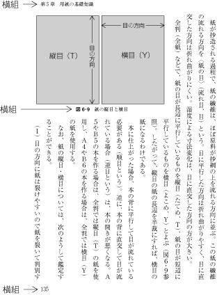
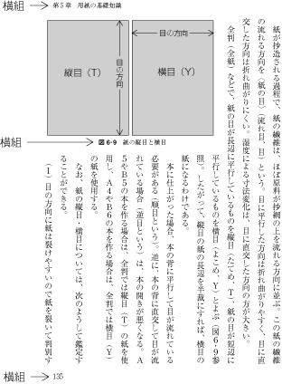